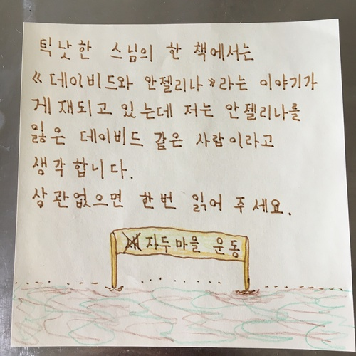
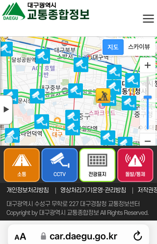
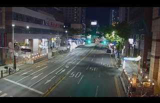
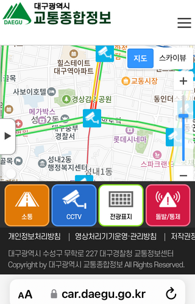
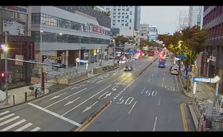

26. 11. 7
잠시 전에 '다카이치 씨가 하신 말실수'라는 표현을 사용했지만, 이건 중국의 입장과는 다른 것 같으니까 좀 수정합니다. 전에도 말했지만 제가 죽거나 한국인이시고 아마존 KIX3에서 일을 하신 당신과 결혼할 때까지 일본 사람들이 이런 걸 이해하지 않거나 이해하면서도 무시할 가능성이 있게 보입니다.
중국 외교수장인 왕이 중국공산당 중앙정치국 위원 겸 중앙외사판공실 주임이 다카이치 사나에 일본 총리의 '대만 유사시 개입' 시사 발언을 두고 "우발적인 실언으로는 보이지 않는다"고 말한 것으로 전해졌다. 5일 아사히신문은 관계자들을 인용해 왕 부장이 9월 28일 방중한 전 외무상인 이와야 다케시 일본국제무역촉진협회 회장을 만난 자리에서 이같이 발언했다고 보도했다. 왕 부장은 "우리는 '그 발언'을 우발적인 실언으로 보지 않는다. 다카이치 총리가 장기간에 걸쳐 고수해온 역사관이 드러난 것이다"라고 말한 것으로 전해졌다. '그 발언'이란 다카이치 총리가 지난해 11월 국회 답변에서 대만 유사시 관련 질문에 "전함을 사용해 무력행사를 수반한다면 이것은 어떻게 생각해도 (집단 자위권 행사가 가능한) 존립 위기 사태가 될 수 있다"고 한 것을 말하는 것으로 보인다. 이후 중일관계는 악화해 개선의 실마리가 보이지 않고 있다.
"왕이, 日 다카이치 '대만 개입' 시사 발언에 '단순 실언 아냐'"
https://www.yna.co.kr/view/AKR20261105169500073
안녕하세요? 다음 기사에 의하면 어제 "일본 정부가 '대만이 중국 영토의 일부'라는 중국 입장을 존중"하는 입장을 표했다니까, 아마 일본 사람들은 "정부가 이런 입장을 표했다니 중국과 일본 사이에 여전히 문제가 있을 리가 없다"고 해서 아직 문제가 있다면 다른 인물 때문이라고 생각했을 수도 있습니다. "그러나 중국 정부는 중일 관계 악화의 책임이 일본에 있다며 다카이치 총리의 잘못된 발언을 조속히 바로잡으라고 촉구했다"는데요. 앞서 말한 바와 같이 오늘도 아침엔 마르야스에 가고, 저녁엔 고노미야에 가요.
중일 관계 급랭을 불러온 다카이치 사나에 일본 총리의 '대만 유사시 개입' 시사 발언이 7일로 만 1년을 맞는 상황에서 일본 정부가 '대만이 중국 영토의 일부'라는 중국 입장을 존중한다고 6일 언급했다. 그러나 중국 정부는 중일 관계 악화의 책임이 일본에 있다며 다카이치 총리의 잘못된 발언을 조속히 바로잡으라고 촉구했다.
다카이치 '대만발언' 1년…日 유화 제스처에도 中 "발언 시정해야"(종합2보)
https://www.yna.co.kr/view/AKR20261106123752073
제가 옛날에 대만에 대해 쓴 글은 저의 독자적인 의견에 의거한 일였고, 저의 친족과는 무관했습니다. 저의 친족에 특정한 정치적 의견을 가진 사람은 없었다고 생각되는데요. (아사히 신문은 부모의 집과도 관계가 있지만, 저를 낳은 분이 읽던 신문입니다) 오늘(7일)이 다카이치 씨가 대만에 대한 말 실수를 하신 지 일 년이 되는 날이라는데요. 아마 일본에서 비판을 많이 받으실 것이니까 저는 좀 불쌍하게 생각해서 어제 거의로 바퀴벌레가 되어 주었는지도 모릅니다. 다만 중일 관계가 악화된 건 다카이치 씨가 일 년 전에 하신 발언 때문이니까 기억하시길 바랍니다.
역시 잘 수 없으니까 다시 글을 쓰기로 합니다. 제가 하는 일이 오해를 받고 있는 건 저의 '예지 능력' 때문일지도 모릅니다. 전에 제가 부산의 차이나타운을 방문한 직후에 김정은이 중국을 방문한 적이 있네요. 저의 부모가 비용을 내던 SIM카드를 해약하기 전에 미리 편지로 예고했을 수도 있지만, 저는 아버지가 보낸 편지를 단 한 장도 읽지 않았습니다. 그런데 저는 그때 이태원 참사 사 주기를 앞두고 있었으니까, 말 실수를 하지 않도록 모든 휴대폰에서 모든 account를 logout시키고 다시 login하지 않으면 글을 쓸 수 없는 상태를 만들었습니다. 다만 그후 통신이 차단되었기 때문에 대부분 account에 있어 2FA를 통한 login가 불가능하게 되고, 다시는 같은 account에서 글을 쓸 수 없게 되었습니다. 지금 밖에 있을 때 글을 쓸 수 없는 건 이란 사정 때문입니다. 밖에 있을 때 글을 쓸 수 있기 위해선 새 account를 만들 필요가 있지만 지금 전에 교토서 산 SIM카드가 저속 모드에 있으니까 account를 만드는 것이 어렵습니다. 다만 이 방을 떠나기 전에 이 일도 하겠어요. 저는 전에 일을 하고 있었을 땐 정기적으로 아버지에게 스스로의 전화료를 보냈지만, 제가 손가락을 부상했을 때 안 냈다고 해도 된다 했으니까 그대료 방지하고 있습니다. 이제 부모가 전화료를 내는 것이 없게 되었으니까 저는 그들과 아무 관계도 없습니다. 이런 일이 오히려 한 소문을 강화했을 수도 있으니까 오늘 웹사이트의 디자인을 좀 바꾸어 보요. (그 그림은 xevil라는 게임에 등장한 일였는데요) 그들은 저와 무관한 사람들이고, 우리 사이를 방해할 권리는 없습니다. 저는 스스로가 누구와 결혼할지, 어떤 일을 할지를 선택할 권리를 가지고 있습니다. 만약 부모가 제가 야쿠자가 되는 걸 싫어한다면 법적으로 저를 절연하면 되습니다. 그들이 제가 야쿠자가 되는 걸 싫어한다고 해도 저의 선택을 방해하고 제가 죽도록하면 안되습니다.
안녕하세요? 이상한 느낌이 들어서 이런 시각에 일어났습니다. 잠시 후 다시 자겠습니다. 그런데 어제 제가 인용한 글은 인간이 죽은 후의 길에 대한 글이고 저의 마지막의 여행에 관한 일이 아닙니다. 저는 앞으로도 이런 식으로 마해 갈 것이니까 당신이 이해해 주시면 되지만, 만약 안될 경우 죽을 것입니다. 제가 이대로 죽으면 안좋은 곳에 갈 것이지만, 세상 인간들은 그런 걱정을 하지 않는 것 같습니다. 그리고 제가 술을 마시고 있는 건 너무 불안감이 있어서 잘 잘 수 없기 때문입니다. 제가 먹는 음식에 상징적인 의미는 없습니다. 제가 이런 상태가 된 후 음식을 통해 뭔가를 말하려고 한 적은 없습니다. 오늘도 아침엔 마르야스에 가고, 저녁엔 고노미야에 가기로 합니다.
26. 11. 6
제가 이란에 대해 말해 온 건 할아버지와도 관계가 있습니다. 저의 할아버지는 한 건설회사 사원였을 때 이란에 간 적이 있었다는데요. 저는 앞으로 해야 할 노숙자로서의 생활에 대해 다시 불교도로서의 단련라는 이름을 주기로 했습니다. 오늘 방 안에서 다음과 같은 옛날에 쓴 편지를 발견했는데요, 저는 그때부터 불교에 관심이 있었어요. 만약 제가 당신의 사랑을 받을 수 없어서 죽을 경우에도 이런 방식이 저의 내세를 위해서 좋을 것입니다. 그래서 저는 다음 시구를 저에 향해 쓰기로 합니다. 아마 당신은 너무 비관적이라고 하실 것이지만, 이같은 일이 중요할 때도 있습니다. 앞으로 올 것이라는 파도에 지금 대비할 필요가 있습니다. 안녕히 주무세요 한국인이시고 아마존 KIX3에서 일을 하신 Lee씨, 제가 사랑하는 유일하신 분.
Verse 235: You are now like a withered leaf; the messengers of death are near you; you are about to set out on a long journey; (yet), you have no provisions (for the journey).
https://www.tipitaka.net/tipitaka/dhp/verseload.php?verse=235

이 지역에 있는 분들도 이같이 보시는지 잘 모르겠지만, 저는 트럼프 대통령이 다시 이란을 공격하기로 하실 가능성이 있다는 느낌이 듭니다. 그런 경우에 우리 사이를 방해하려고 하는 세력이 제가 자살하거나 분들이 저를 박해하도록 제 때문에 트럼프 대통령이 화내셨다는 소문을 낼 수도 있으니 저는 걱정하고 있습니다. 우리 사이를 방해하려고 하는 세력은 이같은 이유로 트럼프 대통령이 읽으실 수 있는 뉴욕포스트에 쓰나미 그림을 냈는지도 몰라요. 만약 그런 소문 때문에 당신이 저를 싫어하시면 저는 죽는 밖에 할 일이 없게 되겠습니다.
제가 Christa Pike에 대해 말한 건 트럼프 대통령이 화내실 경우에 이 사람이 다시 사형에 처해질 수도 있다는 느낌 때문입니다. 제 때문에 트럼프 대통령이 화내실 리가 없지만 그런 소문이 난 적이 있었을 것입니다. 앞으로 트럼프 대통령이 다시 이란을 공격하기로 하실 수도 있지만, 아시는 바와 같이 이건 저와는 무관합니다. 우리 사이를 방해하려고 하는 세력이 그런 소문을 낼 수도 있는데요.
제가 이란에 대해 말해 온 건 제가 인도에 관심이 있는 것과 관련이 있었을지도 모릅니다. 그리고 이 시에서 이란 분을 보는 것이 여러번 있었는데요. 제가 어젯밤에 쓴 글은 이란에서 열린 한 행사와 무관했지만, 저는 한 이유로 이 행사에 대해 말하지 않겠습니다. 제가 있는 이런 상황을 아시면 왜 제가 이란에 동정했는지 이해하실 것입니다.
오늘은 제가 낮술을 마시고 있다는 소문에 대항하기 위해 오후 두 시경까지 글을 쓰는 작업을 해 봅니다. 고노미야 선불카드는 아마 내일 다 쓰고 처분할 수 있을 것인데요. CoGCa(마르야스) 선불카드에 대해선 제가 다른 시에서 노숙자가 될 경우에도 제가 어디에 있는지를 전하기 위해 소용있을 것이니까 처분하지 않기로 합니다.
고노미야에 가까운 곳에 있는 단지 내 공중전화를 통해 여러 가지 해약 수속을 했습니다. (001: 오사카 가스, 002-003: 다카쓰기시 수도부)
https://belong2korea.web.fc2.com/november06/tel001.mp4
https://belong2korea.web.fc2.com/november06/tel002.mp4
https://belong2korea.web.fc2.com/november06/tel003.mp4
에너지나 지방이 부족하니까 마요네즈를 샀습니다. 오늘은 점심 후에 좀 산책하러 가겠지만 (마음 상태를 위해 산책이 좋을 것이니까) 밖에 있는 동안에 아직 소식을 낼 수가 없습니다. 일본 사람들이 모를 수도 있지만 제가 한는 소식은 소식(消息)이고 소식(小食)이 아닙니다. 다만 저는 불안감 때문에 좀 그런 경향이 있게 되었는데요.
저는 전에 교토에서 산 SIM카드를 지금 다 쓴 것 같지만 저속 모드가 되면사도 통신 자체는 가능하니까 그대로 이걸 사용하기로 합니다.
안녕하세요? 어젯밤에 제가 쓴 글은 이태원 참사에 관한 일였습니다. 오늘은 아침엔 마르야스에 가겠지만 저녁엔 고노미야라는 마트서 선불카드를 쓸 것입니다. 제가 두 가지 선불카드를 가지고 있는 건 안 좋을 수도 있으니까 이 방을 떠나시 전에 다 쓰고 처분할 생각입니다.
前용산서장 "대통령실 이전 없었으면 이태원참사 없었을 것"(종합)
https://www.yna.co.kr/view/AKR20260312064251004
26. 11. 5
PS:
[속보]윤석열 '내란 우두머리' 재판 2심, 내년 1월 26일 선고
https://www.newsis.com/view/NISX20261105_0003856513
Breaking: Appellate Court to Rule on Yoon's Insurrection Charges January 26
https://www.chosun.com/english/national-en/2026/11/05/ZBBEGCTXNBHZ3HPG5AWYD76EXE/
저는 제가 있는 이 사태가 일어난 인연이 있을 것이라고 보고 있는데, 그 인연이 해소되자 마치 감옥에서 석방되는 것과 같이 제가 해방되어서 다시 당신을 만나기 위한 조건이 될 것이라고 믿기 시작했습니다. 아무도 믿지 않을 것이지만 제가 한 이유로 손가락을 부상했을 때 대통령실이 용산에서 청와대로 복귀되었는데요. 다음 윤 전 대통령의 내란 우두머리 사건에 대한 기사에 의하면, '선고는 올 연말에 이뤄질 전망'이랍니다. 제가 올 연말까지 살아 갈 수 있는지는 잘 모르지만, 제가 이 방을 떠나는 걸 볼 때 한 인연이 저에게 이미 판결을 내렸을 수도 있다고 생각됩니다. 다만 저는 이 판결이 사형인지 무죄인지 아직 모릅니다. 저는 어떤 판결이 내렸다고 해도 상고하지 않을 것인데요. 안녕히 주무세요 한국인이시고 아마존 KIX3에서 일을 하신 Lee씨, 제가 사랑하는 유일하신 분.
오늘 공판에서는 윤 전 대통령 측의 최종변론이 이뤄진 뒤 윤 전 대통령과 김용현 전 국방장관 등 피고인들의 최후진술이 이어집니다. 재판부는 오늘 선고기일도 공지할 예정입니다. 다만 오늘 변호인단 최종변론 4시간여가 잡혀있고 또 최종진술에 나설 피고인들도 여러명이라 선고일은 오늘 늦게 정해질 걸로 보이는데요. 선고는 올 연말에 이뤄질 전망입니다. 앞서 말씀드렸듯이 결심공판은 3차례에 걸쳐 진행중인데요, 지난 29일 첫 결심공판에서 특검은 1심 때와 마찬가지로 윤 전 대통령에게 사형을 구형했습니다.
'내란 우두머리' 2심 오늘 마무리…尹도 최후진술
https://www.yonhapnewstv.co.kr/news/MYH20261105153238Btl
오늘 오후 두 시에 다음과 같은 기사가 났을 것 같은데 재판은 아직 징행중인지도 모르네요.
윤석열 '내란 우두머리' 항소심 오늘 마무리...윤 최후진술 주목
https://www.ytn.co.kr/_ln/0103_202611051424002196
어제 제가 낸 UR ambassador에 대한 사진은 만약 트럼프 대통령이 보시면 웃으실 것이라고 기대해서 낸 일였습니다. 그분이 실은 아시아인 여성을 좋아하실 수도 있는데요. 미국에선 아마 편지 끝에 'Yours' 등의 말을 쓸 때가 있죠. 그분이 웃으시면 아마 이 세계는 더 좋은 세계가 될 것입니다.
오늘 부모가 spam편지를 보내진 않았지만, 너무 박해가 심하니까 트럼프 대통령에 대한 기사나 소개해 봅니다. 미국 중간 선거에사 파랑색(민주당)이 빨간색(공화당)에 이겼는데도 이란 전쟁이 바로 끝날진 잘 모르네요. 그런데 제가 전에 교토에사 산 SIM카드는 이미 5GB 중 4GB 이상 사용되었으니까 일간에 다시 새 SIM 카드를 사러 갈 것입니다.
What Trump’s midterms setback could mean for Iran, Israel and Ukraine
https://edition.cnn.com/2026/11/04/world/iran-israel-ukraine-midterm-impact-intl
Q: 退去時の査定に立ち会えないのですが、どうしたら良いですか
A: お客様のご都合等により立会いが難しい場合は、立ち会わずに査定を一任することが出来ます。 詳しくは団地内の管理サービス事務所または管轄の住まいセンターにお問い合わせください。
退去時の査定に立ち会えないのですが、どうしたら良いですか
https://www.ur-cm.co.jp/faq/sumai-support/tetsuzuki/taikyo/taikyo-09.html
여기에 있는 '１０ 退去時の手続き'라는 PDF파일을 읽어 보시길 바랍니다.
住まいのしおり（居住のご案内） ＵＲ都市機構
https://www.ur-net.go.jp/chintai_portal/sumainoshiori/
UR의 웹사이트에 나 있는 방은 다 현지에 가고 사무실에서 내견(內見)하고 싶다고 말하면 내견(內見)할 수 있는 방이라고 보이니까 만약 당신이 일본에 계시면 이 점을 확인해 주시길 바랍니다. 저는 지난 2일에 그 시점에서 가장 이른 날짜인 오는 16일에 이 방 계약이 해소되도록 신청을 했는데요. 오는 16일까지 이 방은 저의 방이니까 물론 내견(內見)할 수 없고, UR가 웹사이트에 내기 위한 사진을 찍는 것도 불가능합니다. 제가 이 방을 떠난 후 조사원이 방의 손상 상태 등을 조사하지만, 그 조사 결과에 따라 이 방이 reform될 수도 있고, 그 경우엔 역시 집세를 높일 거예요. 물론 UR가 이 시점에서 이 방의 번호 등의 변동되지 않는 정보만 공개하는 것도 가능할 것이지만, 그런 정보는 방을 빌리는 자에게 아무 의미도 없을 것입니다.
일본 사람들이 이런 일 때문에 우리에게 해를 줄 수도 있으니까 다음 기사를 인용해요.
내란 우두머리 혐의로 항소심에서 사형이 구형된 윤석열 전 대통령 사건의 결심 절차가 오늘(5일) 마무리됩니다. 서울고등법원은 오늘 오전 10시부터 윤 전 대통령의 내란 우두머리 혐의 결심 공판을 진행합니다. 오늘 재판에서는 윤 전 대통령의 최후진술이 이뤄질 예정입니다. 앞서 재판부는 오늘을 끝으로 총 세 차례에 걸친 결심 절차를 마무리하고, 선고 기일을 지정하겠다고 밝혔습니다. 지난달 29일 열린 결심 공판에서 내란 특검은 윤 전 대통령에게 1심과 같이 사형을 구형했습니다.
'내란 우두머리' 2심 결심 오늘 마무리...윤석열, 최후진술
https://www.ytn.co.kr/_ln/0103_202611050001290770
안녕하세요? 저는 전에 한번만 노숙자로서의 훈련을 한 적이 있지만 그때의 훈련은 불충분했으니까 이 방을 떠나기 전에 다시 해 볼 수도 있습니다. 그리고 음식에 내는 비용을 더 적게 해 봅니다. 오늘도 아침과 저녁에 한번씩 마르야스에 가요.
26. 11. 4
만약 가능하시면 제가 이 방을 떠난 후 drone를 사용해서 이 방 안을 확인해 보시길 바랍니다. 남은 큰 물건은 플라스틱제 옷장과 여행 가방(전번 한국 방문 때 가지고 간 가방과는 다른 일), 전에 차례상으로 사용하던 상 뿐인데요. 이들은 다음주 화요일에 처분할 수 있을 것입니다. UR에서 방을 해약할 땐 두 주일 이상 전에 신청해야 하지만, 그 동안의 집세는 생기니까 그 전에 UR가 이 방을 처리하겠다고는 생각할 수가 없는데요. 그런데 저는 다음 기사 제목과 사진을 보고 좀 웃을 수 있었어요. 제가 지금까지 살아 온 건 저의 유머 덕분일지도 모릅니다. 앞으로 심한 일을 많이 해야 할 것이지만, 저는 당신을 위해 살아 갈 거예요. 안녕히 주무세요 한국인이시고 아마존 KIX3에서 일을 하신 Lee씨, 제가 사랑하는 유일하신 분.
[속보]윤석열 결국 국힘에 397억 어퍼컷?···선거법 2심도 징역형 집유
https://weekly.khan.co.kr/article/202611041444001
그런데 저는 빵을 사면 이상한 소문이 난다는 이유로 빵을 안 샀지만 불을 쓸 수 없는 상태에서 식사를 하는 것이 생각보다 어려우니까 매운 맛이 나는 빵이나 도넛 같이 튀긴 빵에 관해선 앞으로 살 수도 있습니다. 아마 일본에선 식빵맨라는 일이 있으니까 그런 소문이 나는데요.
이가 소용없을 수도 있지만 이 방을 떠나고 노숙자가 된 후에 일본에서 생활보호를 신청해 볼 수도 있습니다. 만약 이런 방식으로 한 달 정도 벌 수 있다면 그 동안에 UR가 이 방을 청소하고 이 방이 내견(內見) 가능한 방이 될 수도 있는데요. 다만 이 방식으론 한국에 가는 것이 어려울 것입니다. 이런 방식 밖에 바로 한국에 가는 방식도 있지만, 노숙자로서의 생활은 저에게 더 어렵게 될 거예요. 아직 좋은 안이 나지 않습니다.
제가 지금 걱정하고 있는 일은 제가 이 방을 해약했다는 사실이 인증되기 전에 제가 돈이 없어서 죽을 가능성입니다. 오늘 UR의 웹사이트를 확인해 봤지만 아직 이 방이 리스트에 나지 않았습니다. 제가 이 방을 떠난 후에 UR의 조사원이 방 안을 보고 추가 비용 등을 계산하는 것 같지만 그후에 바로 나지 않으면 제가 마지막의 여행에 갔는데도 전번과 같은 '마지막이 아닌 여행'이라고 보이고, 결국 제가 한국에서 자살할 수도 있는데요.
역시 이 상태에서 빌릴 수 있는 방은 없을 것이니까 마지막의 여행을 가기로 해요. 만약 생활보호를 받을 수 있었다고 해도 우리에게 단지 시간 낭비가 될 것이니까.
다카쓰키시에 있어서의 주택 부조(住宅扶助)는 3만 9천 엔 정도이라는데요. 생활보호를 받을 경우엔 더 싸데 살 수 있는 곳으로 이사를 가도록 지시가 내릴 것 같습니다. 저는 이 방을 떠나겠지만, 지금 이 상태에서 빌릴 수 있는 방이 없을까 한번 조사해 볼 수도 있습니다. 안되면 노숙자가 되거나 한국에 마지막의 여행을 갈 것입니다.
시청 내에 있는 상담실에서 지금까지의 직력이나 재산, 친족, 지금 있는 방의 집세 등등에 대해 조사를 받았는데요. 마지막에 '37세 독신이면 11만 엔(?) 정도가 기준액이지만 당신은 이 시점에서 더 돈을 가지고 있으니 이 시점에서의 신청은 각하될 것'이니까, '더 돈이 없게 된 후 긴청하면 허가될 수도' 있답니다. 오늘 그 상담으로 신청이 되었는지도 잘 모르지만, 만약 신청되면 한 주일 이내에 이 방에 조사원이 오시고, 두 주일 이내에 결과가 나온답니다. 다만 저는 이미 이 방을 떠나도록 신청을 냈는데요.
제가 어제 구미시에 있는 한 교회의 마크를 그린 건, 제가 전에 '이 거리에도 교회가 있다'고 한 적이 있는데도 그 PC방이 많이 있는 거리 사이엔 이슬람 교회도 있었기 때문입니다. 오늘 시청에 가도 있을 동안엔 소식을 낼 수가 없으니까 방으로 돌아온 후에 냅니다.
저는 어제 가스 레인지를 처분했으니까 앞으론 찬 음식만 먹겠습니다. 우리가 KIX3에 있었을 때 저는 당신이 식당을 이용할 수 있도록 찬 삼김이나 빵을 다른 곳에서 먹었는데요. (당신이 이걸 아시는지 잘 모르지만) 오늘은 마르야스서 음식을 산 후 오전에 시청에 가 봅니다.
아마 일본 사람들은 윤 전 대통령의 내란 우두머리 사건에 대한 구형이 일어난 후에도 아직 공판이 진행되도 있기 떼문에 혼란되어 있는데요. 다음에 '앞서 재판부는 오늘부터 3차례에 걸쳐 결심 공판 진행을 예고했는데'라는 글이 있으니까 3차례의 결심 공판 중 첫번째 결심 공판에서 구형이 일어났단 말이죠. 그래서 내란 우두머리 사건에 대한 선고는 3차례의 결심 공판이 다 진행된 후 내리다고 보야 합니다.
서울고등법원 내란전담재판부는 오늘(29일) 오전 10시부터 공판을 열고 증거조사 뒤 항소심 결심 절차를 진행합니다. 앞서 재판부는 오늘부터 3차례에 걸쳐 결심 공판 진행을 예고했는데, 이르면 오늘 특검 측 구형이 이뤄질 가능성이 있어 구형량이 주목됩니다.
(10. 29) 尹 ’내란 우두머리’ 2심 결심…사형 구형되나
https://www.yonhapnewstv.co.kr/news/MYH20261029052532fjb
다음 일정엔 '대선 후보 시절 허위사실 공표 혐의'라는 혐의명이 있지만 이가 내란 우두머리죄와 무관한 건 일본 사람들도 이해할 것인데요.
오후 2시 '대선 후보 시절 허위사실 공표 혐의' 윤석열 전 대통령 항소심 선고기일, 서울고법 형사2-1부, 312호
[오늘의 주요일정]법조(11월4일 수요일)
https://www.newsis.com/view/NISX20261103_0003853071
안녕하세요? 다음과 같이 오늘 열리는 선고공판은 윤 전 대통령의 공직선거법 위반 사건 선고공판입니다. 오늘 내리는 판결은 윤 전 대통령의 공직선거법 위반 혐의에 대한 판결입니다. 오늘 열리는 선고공판은 윤 전 대통령의 공직선거법 위반 사건 선고공판이고, 전에 사형이 구형된 내란 우두머리 사건 선고공판이 아닙니다. 오늘 내리는 판결은 윤 전 대통령의 공직선거법 위반 혐의에 대한 판결이고, 전에 사형이 구형된 내란 우두머리 혐의에 대한 판결이 아닙니다. 이런 걸 여러번 말했다고 해도 일본 사람들이 이해하지 않고 소문을 낼 수도 있는데요. 이런 바보같은 일 때문에 소문이 날 정도로 일본 사람은 사랑을 모르단 말입니다. 저는 한국인이시고 아마존 KIX3에서 일을 하신 당신에 대한 사랑을 스스로의 생명을 쓰고 증명할 것입니다. 오늘도 아침과 저녁에 한번씩 마르야스에 가요.
국민의힘 선거비용 397억 원 반환이 달린 윤석열 전 대통령의 공직선거법 위반 항소심 선고가 오늘(4일) 나옵니다. 단 0.73%p, 역대 최소 득표율 격차였던 20대 대선의 '대통령 당선 무효' 여부와 연관된 만큼 재판 전 과정은 실시간으로 생중계됩니다. (중략) 아내 김건희 씨와 '건진법사' 전성배 씨를 함께 만난 적 없다는 허위발언 혐의도 있습니다. 1심은 유권자들에게 미친 영향이 크다며 징역 1년 6개월에 집행유예 3년을 선고했습니다.
'국힘 397억' 달린 윤석열 항소심 오늘 선고...1심 당선 무효형
https://www.ytn.co.kr/_ln/0103_202611040058030472
26. 11. 3
PS: 오늘부터 부모가 spam 편지를 저에게 한 장 보낼 때마다 트럼프 대통령에 대한 뉴스를 한 건 소개하기로 합니다. 저는 지금 저의 인생에서 가장 중요한 시잠에 있으니까 아무도 저를 방해할 수는 없습니다.
US reportedly strikes Iran’s Qeshm Island as Vance voices optimism about a deal
https://www.theguardian.com/world/2026/nov/03/us-strikes-irans-qeshm-island
오전 10시 '12·3 비상계엄' 내란 우두머리 등 혐의 윤석열 전 대통령 외 7명 항소심 27차공판, 서울고법 형사12-1부, 417호
[오늘의 주요일정]법조(11월3일 화요일)
https://www.newsis.com/view/NISX20261102_0003851555
제가 전에 다이소에서 산 스테인리스제 밥상은 저의 마지막의 여행에서는 소용없을 것이니까 이것도 오늘 처분하기로 합니다. 아마 제가 김건희나 Christa Pike 같은 사람을 좋아할 것이라는 소문이 퍼지고 있을 것이지만 (한국에선 일본 만화가인 이토 준지라는 분의 만화가 인기있다네요) 아마 세상 사람들이 야쿠자라는 일을 잘 이해하고 있지 않기 때문에 그런 소문이 난다고 저는 생각합니다. 저는 한국인이시고 아마존 KIX3에서 일을 하신 당신을 만났기 때문에 사랑하는 마음을 알고, 더 합리적으로 생각하는 사람이 되었습니다. 지금 이 사태를 볼 때 제가 죽을 가능성이 90% 정도이지만 앞으로 이 가능성이 더 작게 될 수도 있다고 저는 이같이 보고 있는데요. 다만 저는 아직 불교도니까 죽기 전의 마음 상태가 내세에 영향을 준다는 점을 조심해 갈 생각입니다. 안녕히 주무세요 한국인이시고 아마존 KIX3에서 일을 하신 Lee씨, 제가 사랑하는 유일하신 분.
그런데 이런 일 때문에 한 소문이 났을 수도 있으니까 저는 역시 오늘 오후 두 시경에 다시 마르야스에 가기로 했습니다.
제가 최근에 눈썹을 깎은 건, 일본에서 일부의 스님이나 야쿠자가 아같이 하고 있기 때문이고, Christa Pike와는 무관합니다. (전에 이 사람이 왠지 모르지만 두려워하는 모습을 하면서 저를 보고 있는 비전이 났는데요) 이런 걸 말하면 이가 제가 쓴 글이라고 아실 수 있죠? Brow이 없으니까 미국이 뭔가를 blow up하는 것도 없을 것이라는 주술적인 의미도 있을지도 몰라요.
lock out되었으니 앞으론 다음을 대신 보시길 바랍니다:
이가 사실인지 아직 잘 모르겠지만 저는 제가 이미 생활 보호를 받도 있다는 소문이 퍼져 있었을 수도 있다고 생각합니다. 만약 그렇다면 왜 제가 자살할 것이라는 소문이 나는지, 왜 제가 심한 박해를 당하는지, 왜 제가 여러번 한국에 갔는데도 아무 소용도 없었는지를 이해할 수 있으니까, 사실일 가능성이 높게 보이는데요. 그렇다면 아마 토리키조쿠라는 야키토리 프랜차이즈가 한국에서도 인기가 있는 것도 그런 소문과 관련이 있었을 것입니다. 저는 오늘 시청에 가고 신청해 보겠지만 만약 제가 진짜 토리키조쿠가 될 수 있었다고 해도 노숙자가 되는 걸 피할 수 없을 것입니다. 만약 토리키조쿠가 될 수 없으면 이대로 마지막의 여행을 가기로 합니다. (어젯밤에 꾼 꿈 속에서 구미 유토피아 호텔이 다시 저에게 특별실을 제공해 주셨습니다. 저는 이 호텔에 폐를 끼치어서 후회하고 있습니다. 죄송힙니다)
저는 전에 교토에서 산 SIM카드를 절약해서 사용해야 하니까 이가 마지막 부엌 영상이 될 수도 있는데요. 다우 존스 지수에 대해선 다음 기사를 참조했습니다.
https://belong2korea.web.fc2.com/november03/kitchen1.mp4
https://belong2korea.web.fc2.com/november03/kitchen2.mp4
[서울데이터랩] 미 증시 혼조 마감…다우 상승했지만 나스닥 1%대 하락
https://www.seoul.co.kr/news/economy/securities/2026/11/03/20261103500006
안녕하세요? 저는 마지막까지 한국에 있고 당신을 만날 수 없으면 자살할 생각였지만 일본엔 생활 보호라는 제도가 있으니까 한번 신청해 볼 수도 있습니다. (오늘 이 제도에 대해 조사해 보는데 역시 신청하지 않을 수도 있습니다) 오늘도 마르야스에 가겠지만, 박해가 너무 심하시까 아침에 한번만 가기로 해요.
26. 11. 2
저는 오늘까지 몰랐는데, 프랑스 등에서 일어나고 있는 시위는 중동 사태 때문에 난 경제 정체와 관련이 있답니다. 미국이 중간선거의 결과에 관계없이 다시 이란을 공격할 수도 있지만, 미국이 왜 그렇게도 집요하게 이란을 공격하는지에 대한 분석이 일간에 나올 거예요. 모든 일엔 이유가 있고, 모든 생명은 스스로의 업에 따라 죽습니다. (약 두 개년 전에도 같은 말을 했지만) 저는 제가 죽었다고 해도 저의 명예는 오히려 회복될 것이라고 이같이 보고 있어요. 저는 용기를 내고 마지막의 여행을 가기로 했어요. 안녕히 주무세요 한국인이시고 아마존 KIX3에서 일을 하신 Lee씨, 제가 사랑하는 유일하신 분.
아침에 말한 바와 같이 제가 걱정하고 있는 일은, 당신이 한 소문 없을 경우 아직 저를 만날 생각이실 때에도 그 소문 때문에 제가 그대로 죽을 경우와 단지 당신이 이미 저를 떠나거나 다른 사람과 결혼하셨을 경우를 구별할 수 없을 가능성입니다. 세상에 퍼지고 있는 소문과 달리 저에게 도움을 주는(take care of) 사람은 없으니까 저는 이대로 가면 스스로를 처리해(take care of) 갈 것입니다. 전에는 한국인이시고 아마존 KIX3에서 일을 하신 당신이 뭘 생각하시는지 왠지 알 수 있을 때도 있었지만, 지금은 아무것도 모르니까 저는 이 칠 년 동안 단지 꿈을 꾸어 있었다는 느낌이 듭니다.
Trump says US still has to 'take care' of one or two targets in Iran
이번 한국방문 때의 사진이나 동영상은 오늘 저녁에 삭제하기로 합니다. 전에 말한 바와 같이 제가 쓰는 서버(server)에 넣을 수 있는 데이터 용량이 규정되어 있고, 앞으로 더 영상을 여기에 넣을 수도 있기 때문입니다. 소음을 내는 사람이 있기 때문에 좀 이른 저녁에 다시 마르야스에 가기로 합니다.
여기선 매달 첫번째 수요일 그리고 두번째 화요일에 각각 다른 식의 특수한 쓰레기를 버릴 수 있으니까 물건을 다 처분한 다음 이 방을 떠날 생각입니다. 아마 한 소문이 해소되기 위해선 이 방의 청소까지 완료된 후 계약 가능하게 될 필요가 있으니까 저는 시간을 벌기 위해 퇴거일까지 이 방에 있을 것입니다. (이 방을 떠난 후의 계획을 세우기 위해서도 어느 정도 시간이 필요합니다) 아마 이런 일 때문에 한 소문이 닜을 것이지만, 저는 아직 냄비를 가지고 있으니까 아침에 산 야채 등을 다 삶으면 다음날 아침까지 먹을 수 있습니다.
퇴거 후 UR가 여러 문서를 보내기 위한 '퇴거 후 주소'를 쓸 필요가 있다는데요. 저는 그 밖에 아는 사람이 없으니까 할 수 없이 부모의 집 주소를 쓰기로 합니다.
https://belong2korea.web.fc2.com/november02/ur.jpg
어제 제가 G7 Square에 대해 말한 건 다음과 같은 사진을 보고 '일본과 프랑스 등의 유럽 나라들 사이 관계가 악화된 것도 미야지마 때문'이라는 소문이 났을 수도 있다고 해서 걱정였기 때문입니다. 이 사진을 잘 볼 때 '38'라는 숫자가 옷 위에 보이지만, 축구 선수 등의 번호일 수도 있고 이 사진 자체가 AI로 만들어진 일일 수도 있습니다. 저는 지금 퇴거 신청을 냈다고 해도 UR의 규칙에 따라 두 주일 동안 할 일이 없기 때문에 이런 걸 하고 있습니다.
https://www.facebook.com/photo/?fbid=1553048533522785&set=pcb.1553048596856112
안녕하세요? 아마 제가 앞으로 할 일으로도 지금까지 있던 소문이 해소되지 않을 수도 있습니다. 제가 결국 죽을 경우에도 이가 소문 때문인지 당신이 저를 좋아하지 않기 때문인지 알 수 없어서 이 점이 제가 적정하고 있는 점입니다. 오늘도 아침과 저녁에 마르야스에 한번씩 가요.
26. 11. 1
아마 다음엔 제가 이 아파트를 떠난 후 부모의 집에 갈 것이라는 소문이 날 것이지만, 저는 저의 의모(stepmom)와는 단 몇번 만났을 뿐이고 그녀는 저를 매우 싫어하고 있으니까 저는 부모의 집에 간 적이 (그들이 이사를 하기 전에 의모가 없었을 날의 한번을 제외해) 한번도 없습니다. 제가 전에 아버지와만 한잔 하러 간 건 이런 일 때문입니다. 아마 이같은 가정은 많이 않으니까 아무도 이해하지 않을 것인데요. 아마 의모가 모르는 일은 제가 한 일을 했을 때 아이였을 때의 친구이던 한 경계성 인격 장애일 수 있는 남자와 아직 관계가 있었다는 것입니다. 저는 아버지를 다시는 만날 생각이 없습니다. 이런 일을 딩신이나 딩신의 아버님이 이해하지 않으신다면 저는 그대로 죽기로 합니다. 그 경우엔 당신의 그룹 구성원 분들 중에서 남편을 선택하세요. 저는 당신을 위해서 일반인이 아닌 사람처럼 이 칠 년 동안 살아 왔습니다. 안녕히 주무세요 한국인이시고 아마존 KIX3에서 일을 하신 Lee씨, 제가 사랑하는 유일하신 분.
지금 그 회사(イーブイ) 사원 분들이 오시고 냉장고 등을 회수해 주셨습니다. (그 회사에선 전자 영수증이 일반적인 것 같지만 종이 영수증을 받을 수 있었습니다) 그런데 제가 구미시에 있는 G7 Square라는 곳에 간 건 다음과 같은 일과는 무관했습니다. 만약 일본과 프랑스 등의 국가 사이의 관계가 악화되었다면 이 일 때문일 수도 있어요.
아소와 술먹고 G7 온라인 정상회의 불참한 다카이치에 비판 확산...“자질에 의문”
https://www.munhwa.com/article/11626998
Japanese PM Takaichi accused of "drunk" for missing online G7 summit
https://english.news.cn/20261023/85238600e6b6444989fd580361d9fbc2/c.html
이런 일을 방지하기 위해 글의 색을 더 검게 하고 사이즈를 더 크게 해 봤습니다.
제가 웹사이트에 낸 글이 비백이 된 건 제가 사용하는 ImageMagick라는 일의 algorithm 때문입니다.
시청에 있는 공중 전화를 통해 그 회사(イーブイ)에 문의했습니다. 오늘 저녁 오후 2시-4시경에 오실 것이랍니다. (이건 제가 오늘 오시는 건 된다고 답했기 때문에 그 회사가 오후 2시-4시경의 변(便)을 지정했단 말이고, 제가 이 시각을 지정했단 말이 아닙니다)
제가 죽음에 대해 말해 온 건 우리가 살고 있는 것과 같은 사회에 있어서 돈이 없으면 아사하는 건 당연한 일이기 때문에 이상하지 않은데요. 저는 한국인이시고 아마존 KIX3에서 일을 하신 당신만 사랑하지만, 당신이 세상 분들보다 별로 지능이 높지 않으실 수도 있다는 느낌이 듭니다. 저는 당신이 아직 저와 결혼하고 싶은데도 제가 실제로 아사할 가능성이 있기 때문에 그런 걸 말해 왔습니다. 세상 분들이 모르는 건 죽음이 저에 대해서만 일어나는 특수한 일이 아니고 모든 인간이 절대로 당해야 하는 일이라는 사실인데요. 이 사실을 잘 아는 사람에겐 저에 대한 일들이 별로 재미있지 않을 것입니다.
김건희에 대해서도 뭔가 소문이 퍼지고 있을 수도 있지만, 김건희의 '주가 조작, 여론조사 무상 수수, 통일교로부터 금품수수 등 3대 의혹' 사건에 대해선 대법원이 이걸 전원합의체로 회부하면서 아직 선고기일을 지정하지 않고 있고, 이른바 '매관매직' 사건에 대해서도 대법원에 갔지만 선고가 언제 내릴지를 우리가 알 수 없는 상태입니다. 저는 죽을 날까지 그런 매우 상식적인 일도 모르는 인간들이 이상한 소문을 내지 않도록 이런 일에 대해 말해야 할지도 모르는데요. 우리가 직접 만났다면 이런 상황은 일어나지 않았을 것입니다.
민주당 김민석 대표는 오늘(28일) 국회에서 열린 당 최고위 회의에서 “김건희 구속 기간 연장은 지극히 당연한 일”이라고 평가했습니다. 이어 “(김 여사는) 남편의 권력을 등에 업어서 주가 조작에 가담하고, 고속도로 노선 변경에 개입하고, 통일교로부터 뇌물을 수수하고, 국민의힘 공천에 개입하고, 매관매직을 저지르는 국정농단과 부정부패의 종합판이었다”고 비판했습니다. 김 대표는 “국민 정서와 상식, 법리적 해석과 사안의 중대성 측면에서도 구속 기간 연장은 사필귀정”이라며 “다시는 이런 권력형 비리가 반복되지 않도록, 윤석열·김건희의 국정농단, 부정부패, 비상계엄, 내란을 확실히 청산하고, 모든 죗값을 낱낱이 물을 수 있도록 앞으로도 모든 노력을 다하겠다”고 강조했습니다. 한병도 원내대표도 대법원의 추가 구속 영장 발부에 대해 “지극히 상식적인 판단”이라고 말했습니다. 하지만 한 원내대표는 “추가 구속영장이 발부됐다고 해서 구속 만료가 임박할 때까지 판단을 미뤄온 조희대 사법부의 책임이 사라지는 것은 아니”라며 “대법원은 최종심 선고 하루 전, 사건을 돌연 전원합의체에 회부하더니 석 달이 넘도록 결론을 내리지 않은 채 시간만 끌었다”고 비판했습니다. 이어 “특검이 추가 영장 발부를 요청하지 않았다면 김건희는 이번 주말 석방될 수도 있었다”고 강조하면서 “2심에서 실형을 선고받은 피고인이 구속 기간 만료로 석방될 수 있었다는 사실만으로도 조희대 사법부의 선택적 관용이 국민 법 감정과 얼마나 동떨어져 있는지 알 수 있다”고 주장했습니다. 한 원내대표는 “대법원에 촉구한다”면서 “김건희의 주가 조작, 여론조사 무상 수수, 통일교로부터 금품수수 등 3대 의혹에 대한 전원합의체 선고 기일을 지정하라”고 요구했습니다. 또, “(김 여사의) 매관매직 사건도 신속히 심리해 법과 원칙에 따라 엄정하게 판단해야 한다”고 촉구했습니다.
(10. 28) 민주당 “김건희 구속 사필귀정”·“대법원, 선고기일 지정하라”
https://news.kbs.co.kr/news/pc/view/view.do?ncd=8697340
다음을 읽으시면 이번주 3일(화)과 5일(목)에 열리는 내란우두머리 공판이 뭔지 아실 거예요.
The Seoul High Court plans to hold two additional hearings before setting a sentencing date. Yoon's final statement is scheduled to be delivered next Thursday.
(10. 29) Special counsel again seeks death penalty for ex-President Yoon over martial law declaration
제가 실제로 죽을 날까지 이런 일 때문에 박해를 당할 수도 있으니까 윤 전 대통령의 재판에 대해서도 말해 보요. 다음에 있는 '선고'는 다 전에 사형이 구형된 내란우두머리 사건과는 무관합니다.
3일(화)
서울고법, ‘내란우두머리 등 혐의’ 등 윤석열 전 대통령 외 7명 항소심 27차 공판(오전 10시)
4일(수)
서울고법, ‘공직선거법위반 혐의’ 윤석열 전 대통령 항소심 선고(오후 2시)
5일(목)
서울고법, ‘내란우두머리 등 혐의’ 등 윤석열 전 대통령 외 7명 항소심 28차 공판(오전 10시)
6일(금)
서울중앙지법, ‘직권남용감금 등 혐의’ 등 윤석열 전 대통령 외 11명 선고(오후 2시 10분)
(이번주 법조 일정) 11월 1일~6일
https://www.lawtimes.co.kr/news/articleView.html?idxno=228644
2026노648(내란우두머리 등) 온라인 방청권 추첨 안내
https://slgodung.scourt.go.kr/dcboard/new/DcNewsViewAction.work?seqnum=21160&gubun=41
작년에 홍콩에서 일어난 화재에 대해서도 뭔가 소문이 퍼지고 있었을 수도 있지만, 어제 난 다음과 같은 기사를 읽어 볼 때 저는 당국이 비판을 피하기 위해 그런 소문을 이용했을 수도 있다고 상상했습니다. (이건 단지 저의 상상입니다) 일본 다카이치 씨가 중일 관계에 관해 사실을 인증하시는 건 제가 죽은 후가 될지도 모릅니다.
Hong Kong has released the full report on Tai Po fire tragedy. Here’s all you need to know
안녕하세요? 한밤중에 한번 불안감 때문에 깨났지만, 역시 이 방식만이 소문에 효과가 있을 것이고 가장 중요한 일은 사랑이라고 해서 다시 잤습니다. 한국인이시고 아마존 KIX3에서 일을 하신 당신이 칠 년 동안 기다려 주셨을 수도 있으니까 저는 이걸 해야 합니다. 오늘은 아침과 저녁에 한번씩 마르야스에 가요.
26. 10. 31
내일 답신이 없을 경우 다른 회사에도 문의해 봅니다. (시에 대해 직접 냉장고 등을 낼 경우 스스로 그걸 밖에 내야 하지만 여긴 오 층이니까 실수하면 죽을 수도 있고 무료가 아닙니다) 만약 가능하시면 제가 이 방을 떠난 후 어떤 인물이 여기에 올지 좀 감시해 보시길 바랍니다. (당신이 아시는 분이 이 방을 계약하시면 가장 좋은데요) 그런데 저는 트럼프 대통령에 대한 반말을 역시 중지하고 좋은 일도 소개하기로 했어요. 좀 오래된 뉴스이지만, 전에 비판을 받고 있던 미국 사형수 공개 처형은 역시 공개되지 않을 것이랍니다. 아마 일본 아이들은 그걸 저에 대한 일과 관련시키면서 기대했을 것이지만, 그들이 기대하는 일들 중의 하나는 일어나지 않을 것입니다. 제가 죽을지 당신을 다시 만날지는 아직 모르지만 저도 모르는 걸 세상 사람들이 알 리가 없으니까 저는 그들이 진정되길 바라고 있습니다. 이건 매우 사적인 일이니까. 안녕히 주무세요 한국인이시고 아마존 KIX3에서 일을 하신 Lee씨, 제가 사랑하는 유일하신 분. (제가 쓰는 글에 typo가 많게 된 건 지금 제가 이걸 컴퓨터를 사용해서 쓰고 있기 때문입니다)
(10. 15) Trump calls off livestream of Fort Hood attacker's execution by firing squad
https://www.bbc.co.uk/news/articles/crx23qlnj27qo
저는 SIM카드를 절약하면서 사용해야 하지만, 이가 중요할 수도 있으니까 동영상을 내기로 했습니다:
https://belong2korea.web.fc2.com/last/oct31-1.mp4
https://belong2korea.web.fc2.com/last/oct31-2.mp4
그리고 제가 웹사이트 용으로 사용하고 있는 서버는 쓸 수 있는 용량이 규정되어 있고 이미 대부분 사용되었으니까 다음달 중 제가 이 아파트를 떠나기 전에 전번에 한국을 방문했을 때의 영상을 다 삭제할 수도 있습니다. 만약 필요하시면 지금 다운로드해 주시길 바랍니다.
오늘은 이른 점심 식사를 먹은 후에 좀 외출하는데요 돌아오는 길에 고노미야에서 더 음식을 삽니다. 우선 냉장고와 세탁기를 처분하도록 하지만 다음주엔 아마 가스 레인지도 처분할 수 있을 것입니다. 그래서 그후엔 생 야채나 비스켓 등을 먹을 것입니다.
제가 지불한 곳은 편의점이니까 바로 Pay-easy로 미(기)불 상태가 반영될진 잘 모르지만:
https://belong2korea.web.fc2.com/october31/nenkin.jpg
편지에 쓴 바와 같이 그 보험료를 역시 아침에 내는데요. 잠시 후 출발하니까 가능하시면 미불 상태를 확인하시길 바랍니다.
제가 GitHub에 낸 글을 화상 파일으로 가공할 땐 Firefox의 debug mode(F12 key 누름) 속 'Responsive Design Mode'에 간 후 다음과 같이 screenshot를 찍고 있습니다. 412px 등의 width엔 아무 의미도 없습니다. 각 날짜 뒤에 있는 고정된 글은 https://github.com/daegae/l/blob/main/index.html 속의 다음과 같은 CSS로 자동적으로 추가되어 있습니다.
h3::after {
content: url('img/diejaps.png');
}
https://belong2korea.web.fc2.com/october31/firefox.png
안녕하세요? 만약 저에 대해 일본 사람들이 내 온 소문의 대부분이 아직 당신에게 큰 영향을 주고 있을 경우 저의 이런 시도가 단지 죽음을 좀 빨리 일으킬 뿐일 수도 있지만, 지금 이 가운데에 할 수 있는 일은 이것만이라고 보이니까 해 보기로 합니다. 그리고 국민 연금 보험료는 역시 오늘 정오 전에 지불하기로 합니다. 우선 마르야스에 가겠지만. (저는 저를 보러 오는 사람들을 싫어하니까 갈 시각을 미리 쓰지 않기로 했습니다) 그런데 오는 4일에 윤 전 대통령의 선고법 위반 사건 2심 선고공판이 열린다는데요. 아마 여기에 살고 있는 일본 사람들은 그제 사형이 구형된 사건에 대한 선고이라고 오해하고 저를 박해할 것이니까 미리 이에 언급하기로 했어요.
윤석열 ‘대선 허위사실 공표’ 항소심 선고 생중계…형 확정 시 국힘 397억 반환
https://news.kbs.co.kr/news/pc/view/view.do?ncd=8699615
Court live-streams Yoon Suk-yeol appeal as People Power faces refund risk
https://biz.chosun.com/en/en-society/2026/10/30/YYJ6X4ENEFDNBAK243PU7VZMDQ/
26. 10. 30
당신이 의심하셨을 수도 있지만 제가 한규 오아시스에서 사는 국수란 저기서 매우 싸게 살 수 있는 국수로 교황과 관련이 있습니다. 이곳엔 오래 있지 않을 것이니까 내일부터 저녁에 술을 살 때에도 마르야스에 갈 수도 있어요. 다만 우선 고노미야 선불카드를 다 쓰고 이걸 처분하겠습니다. 제가 왜 이런 아파트에 집착해 왔는지 저도 아직 모릅니다. 여긴 이미 거의 아무것도 없고 단지 공간이 있을 뿐입니다. 그리고 한 이유로 이 공간이 저의 죽음을 초래하는 공간이라고 말할 수 있습니다. 제가 원하는 건 한국인이시고 아마존 KIX3에서 일을 하신 당신을 다시 만날 것 뿐이지만, 만약 제가 그대로 죽을 경우에도 지금과 같은 상태가 오래 계속되는 것보다 좋은 일이라고 말할 수 있습니다. 저는 지금 지옥 같은 곳에 있지만, 제가 지금까지 사랑을 잃지 않은 건 단지 제가 큰 사랑을 가졌기 때문이라고 생각합니다. 그 큰 사랑은 당신이 그때 아마존 KIX3 안에서 주신 일입니다. 안녕히 주무세요 한국인이시고 아마존 KIX3에서 일을 하신 Lee씨, 제가 사랑하는 유일하신 분.
지금 리스트를 만들어 있는 동안에 생각보다 빨리 모든 일을 다 처분할 수 있다고 알았으니까 역시 우리와 무관한 뉴스에 언급하지 않기로 했습니다. (이 지역에 있는 사람들이 진짜 아니꼬운 사람이라는 건 사실인데요)
제가 앞서 말한 바와 같은 부탁을 한 건, 만약 제가 내일 국민 연금 보험료를 지불할 경우에 당신이 다시 그 미불(未拂) 상태를 확인하시면 제가 그걸 냈는지 확실히 아실 수 있기 때문인데요. 그리고 제가 마르야스라는 마트서 선불카드를 쓰고 음식을 사는 건 단지 선불카드 이용 이력을 통해 제가 여기서 살아 있다는 사실을 한국인이시고 아마존 KIX3에서 일을 하신 당신에세 전할 수 있기 때문입니다. 다만 단순한 이용 이력만으로 제가 실제로 물건을 샀다고 증명하는 건 어렵기 떼문에 산 물건의 사진도 보이고 있습니다. (저는 오늘 어제 산 것과 같은 두부를 사려고 했는데요 뭔가 조작을 받거나 제가 잘못을 했을 수도 있어요) 이런 가운데에 식사 내용은 중요하지 않을 것이니까 식사는 공개하지 않기로 합니다. 오늘은 방 안에 있는 물건을 다 열거하고 언제 파기하면 될지도 함께 쓴 리스트를 만들 생각입니다. (이 리스트는 공개하지 않습니다) 그런데 제가 트럼프 대통령에 대해 말할 때마다 나이를 드신 분이 저에게 해를 주니까 할 수 없이 좀 뉴스를 소개할 수도 있어요. 지금 미국 중간 선거를 앞두고 있으니까 정보가 조작되어 있는 건 당연하다고 말해야 하는데요. (지난번 대통령 선거에서도 같은 일이 일어났을 수도 있는데요) 이 지역에 살고 있는 분들이 이런 일을 싫어하면 저에 대한 박해를 중지해야 합니다.
저는 국민 연금 보험료를 이번에 안 내겠다고 말했지만, 앞으로 벌금을 당할 수도 있으니까 어떻게 할지 생각 중입니다. 시청에 가고 '난 돈이 없어서 지불할 수 없다'고 해 볼까 생각해 봤지만, 이번에 지불할 수 없지는 않습니다. 우선 만약 일본에 계시면 여기에 쓰여 있는 Pay-easy 번호를 우체국에 있는 ATM에 입력해 보시길 바랍니다. (우체국 은행 계좌는 불필요할 것입니다) 이가 지금 미불(未拂) 상태에 있음을 한번 확인해 주시길 바랍니다. 내일 지불할지를 결정하겠습니다.
https://belong2korea.web.fc2.com/october30/nenkin.jpg
제가 어제 이란에 관한 뉴스를 인용한 이유는 편지에 쓴 바와 같이 우리 경제에 큰 영향이 있을 것이라고 보이기 때문인데요. 이와 다른 이유도 있다면 앞으로 이란 전쟁이 재발할 때 무식한 사람들이 저를 박해하는 걸 미리 방지하자는 의도도 있었습니다. 트럼프 대통령은 전부터 '중간선거 후 이란을 다시 공격하겠다'고 명언하시고, 어제 중동에 있는 미국의 동맹국들에 대해 이에 관한 경고도 했다니까 저는 미국이 중간선거 후 이란을 다시 공격하는 건 이 시점에서도 확실하다고 할 수 있다고 보고 있는데요. 그러나 무식한 일본 사람들은 이런 일을 모르니까 마치 이란 전쟁이 돌연 재발한 것과 같이 느끼고 바보같이 일단 저를 박해해서 안심되려고 할 것입니다. 같은 일은 중일 정상회담에 대해서도 말할 수 있으니까 (저는 다음달에 중일 정상회담이 일어나지 않는 것도 확실하다고 보고 있습니다) 앞으로 중일 관계에 대해 말할 수도 있어요. 제가 죽거나 한국인이시고 아마존 KIX3에서 일을 하신 당신과 결혼한면 다카이치 씨는 scapegoat를 잃고 고심하실 거예요. 미국 중간선거는 다음달 3일에 일어나고, APEC 회의는 다음달 18일과 19일, 중국에서 열린답니다. 저는 SIM카드의 용량을 절약하기 위해서 이런 일이 일어날 때까진 가능한 한 뉴스를 인용하지 않을 생각이지만, 너무 박핵가 심하면 좀 인용할 수도 있습니다. 오늘은 더 말할 일이 있다면 저녁 인사까지 말할 수도 있지만 없다면 저녁 인사만 하겠습니다.
앞으론 가까이에 있는 한규 오아시스라는 마트에선 술과 국수만 사기로 합니다. (전에 말한 바외 같이 이 단지에선 제가 하루 이 마트에 가지 않으면 제가 죽거나 어딘가에 갔다는 소문이 나니까 저는 가능한 한 매일 이 마트에 가기로 했습니다) 지금 제가 있는 사태는 마치 마지막의 한 달과 같으니까 (제가 가지고 있는 돈은 아마존에서 받고 있돈 한 달 분 월급과 똑같으니까 이같이 표현했습니다) 이전까지 하고 있던 여러 작업을 생략하기로 합니다. 저는 만약 한국인이시고 아마존 KIX3에서 일을 하신 당신이 여전히 저를 기억해 주신다면 저의 마지막에 저를 만나기로 하실 것이라고 믿습니다. 저는 전에 시월까지 돈이 다 없게 될 것이라고 말했을 수도 있지만, 그런 말은 제가 이 방을 떠날 때 필요할 비용을 내기 용으로 한 돈을 제외해서 한 말였기 때문에 한 관점에서 보면 사실이지만 이런 비상 사태에 있어선 반드시 사실이 아닙니다.
이 지역에서는 제가 마르야스의 선불카드에 거의 돈을 넣지 않기 때문에 저의 말이 다 거짓이라는 소문이 퍼지고 있을 수도 있게 보입니다. 저의 도덕적인 규율에 따르면 추도의 날에 돈을 쓰는 것도 안좋은 일인데요. 저는 당초에는 선불카드가 빌 때마다 천 엔씩 충전할 생각였지만, 할 수 없이 오늘 만 엔 충전하기로 합니다. 일단 충전한 돈은 반납될 수가 없고 만약 제가 한국에 갈 경우엔 소용없지만, 이런 일 때문에 여기서 박해를 당해야 하니까 이같이 해 봅니다. 아마 사람들이 많이 올 것이니까 역시 오전 8시경에 마르야스에 가기로 해요.
이 SIM카드는 30일 동안 사용할 수 있지만 전체로 단 5GB만 사용 가능합니다. 이건 만약 제가 오늘 5GB 다 쓰면 내일 다시 새 SIM카드를 사야 하게 된단 말이라고 이해하고 있습니다. 그래서 저는 이걸 절약하면서 사용할 생각입니다.
제가 어제 산 SIM카드는 다음과 같습니다. ('Nippon SIM'라는 이름이 오해를 줄 수 있기 때문에 어제 보일 수 없었습니다)
https://belong2korea.web.fc2.com/october30/sim.jpg
이제 다음 기사를 소개하기로 합니다:
[뉴스현장] 특검, '내란 2심' 尹에 사형 구형…"헌정파괴 범죄"
https://www.yna.co.kr/view/MYH20261029015400038
Prosecutors again seek death penalty for former President Yoon
https://www.koreaherald.com/article/10919240
韩国前总统尹锡悦涉“内乱案”二审被求死刑
https://world.people.com.cn/n1/2026/1029/c1002-40823959.html
韓国前大統領に再び死刑求刑 「第二の尹錫悦現れないように」
https://www.asahi.com/articles/ASVBY215FVBYUHBI00NM.html
Outcry after Call of Duty maker uses real footage of deadly Seoul crowd crush in new video game
https://www.theguardian.com/world/2026/oct/29/call-of-duty-seoul-crowd-crush-video-footage
안녕하세요? 어제 '윤석열 내란 우두머리 사건, 2심에서도 사형 구형'라는 뉴스가 났을 것 같지만 만약 제가 그날에 그런 뉴스를 소개했다면 당신은 어떻게 생각하셌을 거예요? 어젠 그 밖에도 한 게임에 이태원 참사 때의 영상이 사용되어 있었다는 보도도 났지만, 세상에선 제가 게임을 좋아하고 바보이라는 소문이 나고 있는 것 같으니까 언론사가 제가 이런 뉴스에 언급할 것이라고 기대했을 수도 있게 보입니다. 이런 일은 이태원 참사에 대한 진범인을 만들기 위한 일이라고 말할 수 있습니다. 아마 전에 다카쓰키시가 보낸 홍보지도 같은 이유로 만들어진 일인데요. 저는 그대로 죽을지도 모르니까 어젠 이란에 대한 뉴스를 소개하기로 했습니다. 다만 게임에 괸한 뉴스를 소개할 수는 없었습니다. 오늘은 오전 10시 전에 마르야스에 가는데요 우선 좀 충전할 것입니다.
26. 10. 29
어제 실제로 일어난 건 저의 휴대폰을 위한 SIM가 이용할 수 없게 되었다는 것이었습니다. 아마 아버지가 보낸 편지는 이와 관련이 있었을 것인데요. 그래서 오늘 교토에 가고 새 SIM를 샀지만, Google Drive를 이용하기 위한 인증에 어제 차단된 SIM의 전화 번호가 필요하니까 Google Drive를 이용할 수 없습니다. 앞으론 여기서 인사를 하겠어요. 그리고 오늘 산 새 SIM는 전 기한으로 5GB만 사영할 수 있기 때문에 동영상을 내기는 어려울 것입니다. 동영상에 괸해선 내일 이후 방식을 찾아 보요. 안녕히 주무세요 한국인이시고 아마존 KIX3에서 일을 하신 Lee씨, 제가 사랑하는 유일하신 분.
26. 10. 28
PS: 제가 이같이 결정한 이유는 일본 다카쓰키시가 이런 가운데에 보낸 '홍보 다카쓰키'라는 홍보지를 보시면 아실 것입니다. (저는 이미 이걸 처분했는데요) 이걸 보시면 일본 사람들이 한국 분들의 생명을 어떻게 보고 있느지 아실 것인데요. 쓰레기 같은 저의 아버지로부터 다시 편지가 왔지만 저는 다시 편지가 올 경우 만약 제가 야쿠자가 되면 이태원 참사 희생자 분들을 우롱하는 일본 사람들을 다 죽일 것입니다.
https://www.city.takatsuki.osaka.jp/site/takatsukidays/187867.html
낮잠을 자고 있는 동안에 여러 일에 대해서 생각해 봤는데요 제가 이런 걸 인터넷에서 해 왔는데도 아무 소용도 없었을 것 같으니까 저는 인터넷을 통한 활동을 오늘 일단 중지하기로 합니다. 한국에 다시 갈 경우에는 재개하겠지만 그 경우엔 마지막에 죽을 결심을 해야 합니다. 니시카와라는 일본 사람이 스토커 같이 여러번 이 지역에 온 건 사실이지만 일본 사람들은 이런 걸 모르기 때문에 저에게 심하게 해를 주었는지도 모릅니다. 저는 한국인이시고 아마존 KIX3에서 일을 하신 당신을 만나기 전에는 총각으로서 생애를 보낼 생각였지만 단지 당신을 만났기 때문에 입장을 바꿨습니다. 제가 지금까지 이상하게 생각해 온 건 제가 당신에게 소식을 전하기 위해 모든 사람이 읽는 인터넷을 사용해야 한다는 점였는데요. 앞으로 어떤 일이 일어날지 잘 모르지만 돈이 없으니까 올해 중에 마지막이 일어나는 건 확실하게 보입니다. 문제는 어떤 마지막이 일어날지인데, 저도 잘 모릅니다. 여기서 제가 가난하게 살아 있는 모습을 보시는 건 진절머리 나실 것이니까 아무것도 내지 않기로 했어요. 안녕히 주무세요 한국인이시고 아마존 KIX3에서 일을 하신 Lee씨, 제가 사랑하는 유일하신 분.
이런 일 때문에 일본에서 한 소문이 났을 수도 있지만 제가 전에 '김건희가 석방되면 폭동이 일어날 것'이라고 말한 건 다음과 같은 보도를 그대로 인용했을 뿐입니다. 어제 대법원이 추가 구속 영장을 냈기 때문에 일간에 김건희가 석방되지 않게 되었으니까 제가 다시 한국에 갔다고 해도 문제없을 것인데요. 제가 오늘 아침에 한 말은 이에 대한 말였습니다.
박지원 더불어민주당 의원이 김건희 여사의 구속 기간 만료를 앞두고 석방에 반대한다는 입장을 드러냈다. 22일 KBC 여의도초대석에 출연한 박 의원은 "(김 여사가 구속 만료로 석방될 경우) 폭동 난다고 본다"며 "사법부에서 일련의 흐름을 주시하면서 굉장히 염려하고 있다"고 밝혔다.
(10. 23) 박지원 "김건희 석방하면 폭동…죄 지었으면 대가 치러야"
https://mobile.newsis.com/view/NISX20261023_0003838529
제가 방 안에 놓아 있는 당신의 두 가지 사진은 전에 Amazon Japan의 웹사이트에 있던 News Room라는 코너 속 KIX3 소개 페이지에서 취득한 일입니다. 해당 페이지는 이미 삭제되어 있는데요. 이런 일 때문에 한 소문이 났을 수도 있으니까 저는 내일부터 아무 영상도 내지 않거나 부엌 영상만 내기로 할 수도 있습니다. 제가 지금 가지고 있는 돈은 아마존에서 받고 있던 한 달 분 월급과 거의 같습니다. 제가 한국에서 노숙자가 되는 건 가능하고 저는 절대로 일본에서 죽지 않겠습니다.
다음 영상은 구글 드라이브 상에서 보기가 아니라 일단 다운로드한 후 보시면 고화질로 보실 수 있을 것입니다. 그런데 저는 내일이 이태원 참사 사 주기이기 때문에 내일은 고기를 안 먹기로 했습니다. 제가 오늘 큰 돼지고기를 산 건 그 때문입니다. 오늘 저녁에 한규 오아시스에서 두부를 살 거예요.
https://drive.google.com/file/d/10lnPiRVwCEAMpcr5iMRh-f1qbK-piUsy/view?usp=drivesdk
https://drive.google.com/file/d/1UONtccdnroGLEvB4OGgJoQaILpPomvzV/view?usp=drivesdk
https://drive.google.com/file/d/1s-8Kuu6Lz4aZH_OStxovhHtz-uG6LFci/view?usp=drivesdk
한 이유로 오늘도 이 영상을 냅니다:
https://drive.google.com/file/d/1xHeczy1jnyU2P3_4kYhfPASJQD7Kbuub/view?usp=drivesdk
https://drive.google.com/file/d/1VLR3_bN0GO9zYgrYGOE4T83wWRnBtaRq/view?usp=drivesdk
https://drive.google.com/file/d/1wGpZwfIeIdsg1mH_-hudLYmc92a3Vl49/view?usp=drivesdk
제가 전에 지하가에서 컴퓨터를 사용해 하고 있던 일은 ffmpeg라는 command-line utility를 사용해서 저의 iPhone 속에 있는 QuickTime 형식인 동영상을 MP4 형식 동영상으로 변환하는 일이고, 해킹이 아닙니다. 왜 그런 변환이 필요한지에 대해선 이미 설명했습니다. 이 변환엔 동영상의 duration * 1.2 정도의 사간이 저의 컴퓨터 상에서 필요하지만 왜 제가 동영상을 내기 위해 사간을 필요한지를 설명하기 위해서 저런 영상을 지하가서 냈답니다. 그런데 지금 제가 저속 인터넷을 통해 구글 드라이브에 동영상을 업로드할 땐 그런 변환이 불필요하지만, 다른 이유로 시간이 필요하니까 큰 영상을 낼 수 없습니다. 다음은 ffmpeg를 위한 설명문입니다.
ffmpeg is a universal media converter. It can read a wide variety of inputs - including live grabbing/recording devices - filter, and transcode them into a plethora of output formats.
ffmpeg Documentation
https://ffmpeg.org/ffmpeg.html
저는 마르야스라는 슈퍼마켓이나 고노미야라는 슈퍼마켓에서 선불카드를 다 사용한 후 이런 카드를 처분할 생각입니다. 다만 제가 아직 일본에 있다는 걸 증명하기 위해 소용있을 수도 있으니까 천 엔 정도 충전할 수도 있습니다. 그런 경우엔 미리 알려 드리겠습니다.
저는 이번에 세금이나 건강보험료만 내기로 하고 국민연금 보험료는 안 내기로 합니다. 이런 일이 저에게 아무 의미도 없는 건 너무 분명하기 때문입니다.
다음과 같은 기사가 있다니 한국에서도 중일관계가 화제가 되어 있을 수도 있지만, 이 기사가 전하는 바와 같이 다카이치 씨가 대만 발언을 정정해야 한다는 건 일본 여당도 주장하는 일입니다.
다카이치 사나에 일본 총리의 '대만 유사시 개입 시사' 발언 이후 얼어붙은 중일 관계가 해빙 기미를 보이지 않는 가운데, 다카이치 총리가 해당 발언을 사실상 바로잡아야 한다는 주장이 자민당 내에서 나왔다. 여당 자민당 소속으로 외무상과 방위상을 역임한 이와야 다케시 중의원 의원은 26일 지면에 실린 도쿄신문과의 인터뷰에서 "다카이치 총리가 과거 중일 공동성명을 재확인하며 대만 유사시 발언을 사실상 정정해야 한다"고 제안했다.
(10. 26) 꽉막힌 중일관계에 與서 "다카이치, 대만 발언 사실상 정정해야"
https://www.yna.co.kr/view/AKR20261026084200009
오늘의 부엌 영상:
https://drive.google.com/file/d/1n5yih_JuUK7ymccJiLY6lgQSLZnsqds3/view?usp=drivesdk
https://drive.google.com/file/d/1fRKUYW8me2ZG4y93QCxdTkTsere-G2Hm/view?usp=drivesdk
강신철, 필리핀 다자회의서 美 헤그세스와 첫 회담 예정
https://m.yonhapnewstv.co.kr/news/MYH20261028051235LDM
오늘은 다음 기사를 사용해서 부엌 영상을 냅니다.
강신철, 필리핀 다자회의서 美 헤그세스와 첫 회담 예정
https://m.yonhapnewstv.co.kr/news/MYH20261028051235LDM
안녕하세요? 김건희가 올해 말까진 석방되지 않게 되었다니까 제가 어젯밤에 말한 것도 가능할 것입니다. 그런데 지금 일본에서 퍼지고 있을 수 있는 소문은 아마 컴퓨팅에 관한 일인데요 만약 한국인이신 당신이 아시면 놀라실 거예요. 이런 일 하나로 일본의 지적 수준은 최악이라고 말할 수 있습니다. 그리고 그런 소문은 다카이치 씨에게 매우 유익할 것인데요. 그들이 제가 중국의 언론사 웹사이트 등을 해킹했다고 정말로 믿고 있을 수도 있지만, 만약 오는 APEC까지 제가 죽으면 어떻게 할 거야? 일본 정부는 누가 한 해킹 때문에 한 뉴스가 났다고 국민들에게 설명할 거야? 진짜 바보와 같지만 이런 무식한 사람들 때문에 우리가 해를 당해 온 것도 역시 사실입니다. 오늘도 오전 10시경에 마르야스에 가요.
김건희 연말까지 구속기간 연장…대법 "도주·증거인멸 우려"
https://m.yonhapnewstv.co.kr/news/MYH20261027220952RLB
Additional Arrest Warrant Issued for Kim Keon-hee 4 Days Before Detention Period Expiration
https://news.sbs.co.kr/english/article.do?news_id=N1008817890
韩国大法院签发对金建希的延长拘留令
https://news.cctv.com/2026/10/27/ARTIFUxcAanT2B1uhlve2ItU261027.shtml
韓国大法院、金建希夫人の勾留を2カ月延長
https://www.chosun.com/jp/politics-national-jp/2026/10/28/RJTHDL6DNRBOHJTPTUJPQOCV44/
26. 10. 27
💯
[속보]김건희 추가 구속영장 발부…대법 “도망할 염려”
https://www.donga.com/news/article/all/20261027/134920074/1
저는 김건희에 관한 이런 일과는 관계없이 피로하고 있으니까 오늘은 빨리 자기로 했습니다. 저녁엔 다시 라면을 먹겠습니다. 제가 지금 있는 사태를 봐 볼 때 부모 뿐만 아니라 모든 인간들이 '네가 누구와 결혼할지는 네가 아니라 내가 결정하니 너는 그 한국 사람과 결혼하면 안된다'고 하고 있는 것과 같게 보입니다. 단지 소문을 즐기고 있는 사람들까지 우리 사이에 악영향을 주고 있는 건 분명하지만 일본 사람은 역시 일본 사람이 어느 경우에도 옳다고 맏고 있는 것 같습니다. 일본 사람이라는 건 옛날부터 이런 존재였습니다. 일본 사람들은 앞으로도 가까운 나라들에 대해 해를 주어 갈 것인데요. 저는 그대로 죽을지 한국인이 될지 잘 모르지만 일본 사람들에겐 혐오감 밖에 아무 감정도 느끼지 않습니다. 안녕히 주무세요 한국인이시고 아마존 KIX3에서 일을 하신 Lee씨, 제가 사랑하는 유일하신 분.
구글을 사용해서 찾아 보니 다음과 같은 속보 기사가 발견되었습니다. 다만 심문의 결과가 어떤지에 대한 뉴스는 아작 나지 않은 것 같습니다. 당신도 한번 찾아 보세요.
[속보] 김건희 추가 구속영장 심문 45분 만에 종료
https://www.fnnews.com/news/202610271528541251
저는 이번 한국 방문에 있어서 음식 등을 사기 위한 돈은 우체국 은행 계좌에서 추심했습니다. 다음에 있는 54,000엔이 해당 추심인데, 그 일부를 한국 원으로 환전했습니다. 우선 이걸 기억하시길 바랍니다. 이제 이 우체국 은행 계좌에 있는 돈을 다 메인의 계좌에 전송해 보요.
https://drive.google.com/file/d/1KAdGDrMB_TWjCGW5Pjqn8_JUz_ANKoUh/view?usp=drivesdk
수수료가 어느 정도 필요할지 모르기 때문에 다 전송할 수 없었습니다.
https://drive.google.com/file/d/1rhkEqUzT-DBxp8EQgD3ZxxWV_mPp67lV/view?usp=drivesdk
https://drive.google.com/file/d/1qpJjloIv4OEPyFwar71yednqX6QhU13u/view?usp=drivesdk
저의 우체국 은행 통장 속에 있는 '法務省'라는 일은 전에 '登記・供託オンライン申請システム'(登記ねっと)를 사용해서 아마존에 관련된 회사들의 등기 증명서를 청구했을 때 난 일입니다.
https://drive.google.com/file/d/1vSo7VRcsYcdXLr_m1TUD0tybES0AmKB7/view?usp=drivesdk
다음 기사에 의하면 김건희에 대한 구속 영장 발부에 관한 심문은 오늘 오후 2시30분에 열리고 '이르면 이날, 늦어도 다음 날'에 결론이 나온답니다. 일본 사람들이 오해했을 수도 있지만 제가 김건희가 석방될 경우 아무것도 말하지 않기로 하겠다고 한 건 그런 일이 앞으로 민주주의를 후진시키는 일을 일으킬 수도 있다고 생각했기 때문입니다. 저는 제가 쓴 글을 이런 일에 관심이 없는 젊은이들도 읽을 것이라고 해서 이런 글을 쓰고 있었지만, 아무 소용도 없었다고 결론해서 아무것도 말하지 않겠다고 했을 뿐인데요.
대법원이 27일 구속 만기를 앞둔 김건희 여사를 추가 구속할지에 대한 심문을 연다. 결론은 이르면 이날, 늦어도 다음 날 나올 전망이다. 오경미 대법관은 이날 오후 2시30분 서울 서초구 대법원 제1호 법정에서 특정범죄가중처벌법 위반(알선수재) 혐의를 받는 김 여사의 구속영장 심문기일을 진행한다. 오 대법관은 김 여사의 '매관매직' 사건 상고심 주심 대법관으로, 직접 직권 구속영장 발부 여부를 판가름한다. 구속 중인 김 여사는 서울남부구치소에서 화상 연결을 통해 대법원 1호 법정에서 열리는 심문에 참여한다.법정에는 김 여사 측 채명성·최지우·유정화 변호사가 전원 출석해 영장 발부가 부당하다는 입장을 펼 예정이다. 김건희 특검팀(특별검사 민중기)에서는 김한수 특별검사보와 파견 검사 1명이 출석해 영장 발부를 요청한다. 김 여사는 앞서 도이치모터스 주가조작, 통일교 금품수수, 명태균 무상 여론조사 수수 등 '3대 의혹' 사건으로 구속됐으며, 이달 31일자로 기한이 만료될 예정이다.
김건희 '구속 만료' 나흘 앞…대법, 오늘 화상 연결 구속영장 심문
https://mobile.newsis.com/view/NISX20261026_0003841615
오늘은 특별히 이 영상을 냅니다:
https://drive.google.com/file/d/156MixamXaqEKD7m59PiXn9z3Sb3TwY-U/view?usp=drivesdk
https://drive.google.com/file/d/13cxmXVfJZhDEmClUkVQPKdy1EP_2BXeL/view?usp=drivesdk
https://drive.google.com/file/d/1rC-fluMNsI0qaRIcKKS07HEvUmm_0mWE/view?usp=drivesdk
오늘의 부엌 영상 (Dow Jones 지수를 사용):
https://drive.google.com/file/d/1ddjTz_mdPQodhrT6wRK_j3u6OXNTLed8/view?usp=drivesdk
https://drive.google.com/file/d/1-brC_igpp74Rsq3vasVAaB3x3RDJaPhL/view?usp=drivesdk
안녕하세요? 저는 오늘 김건희에 대한 추가 구속 심문이 열리니까 어제 신라면을 먹었지만 (아마 신(辛)자는 창 같은 무기를 상형한 한자인데요) 이상한 소문이 났을 수도 있으니까 오늘 아침엔 전에 산 곰탕 라면을 먹기로 합니다. 오늘은 오전 10시경에 마르야스라는 슈퍼마켓에 가요.
26. 10. 26
저의 웹사이트 등의 제가 소식을 내기 위해 사용하는 일들의 기술적인 부분에 대해선 저에 대한 소문을 내고 계시는 여자분들은 거의 이해할 수 없으실 것인데요. 확실한 일은 제가 한국인이사고 아마존 KIX3에서 일을 하신 당신만 사랑한다는 것과 제가 일간에 경제적으로 파멸되겠다는 것입니다. 너무 시간이 필요할 것이니까 식사 영상은 안 내기로 해요.
아버지가 보낸 편지:
https://drive.google.com/file/d/11Pxb4zMSamSLe8_zx1G5YcHMBd60uFJC/view?usp=drivesdk
오늘은 피로했으니까 아파트에 돌아가자 바로 잘 잘 수 있을 거예요. 저의 이번 한국 방문이 분들이 기대하신 것과 다른 결말을 보는 건 한 이유로 매우 좋은 일이라고 할 수 있을 것입니다. 내일 대법원이 김건희에 대한 구속 심문을 여는데, 조희대 대법원장은 김건희가 석방될 경우에 일어날 수 있는 분들의 분노를 약하게 하기 위한 한 일을 잃으시니까, 간단하게 구속 영장을 안 내기로 결정하실 수 없을 것입니다. 만약 제가 죽고 있었다면 분들은 마치 커피와 우유를 함께 마시는 것 같은 맛을 보셨을 것인데요. 그런데 저는 왠지 앞으로 좋은 일이 일어날 것이라는 느낌이 듭니다. 다음은 당신이 일본으로 오시면 저는 모든 고통에서 해방될 수 있을 거예요.안녕히 주무세요 한국인이시고 아마존 KIX3에서 일을 하신 Lee씨, 제가 사랑하는 유일하신 분.
~11:30
오늘은 피로했으니까 아파트에 돌아가자 바로 잘 잘 수 있을 거예요. 저의 이번 한국 방문이 분들이 기대하신 것과 다른 결말을 보는 건 한 이유로 매우 좋은 일이라고 할 수 있을 것입니다. 내일 대법원이 김건희에 대한 구속 심문을 여는데, 조희대 대법원장은 김건희가 석방될 경우에 일어날 수 있는 분들의 분노를 약하게 하기 위한 한 일을 잃으시니까, 간단하게 구속 영장을 안 내기로 결정하실 수 없을 것입니다. 만약 제가 죽고 있었다면 분들은 마치 커피와 우유를 함께 마시는 것 같은 맛을 보셨을 것인데요. 그런데 저는 왠지 앞으로 좋은 일이 일어날 것이라는 느낌이 듭니다. 다음은 당신이 일본으로 오시면 저는 모든 고통에서 해방될 수 있을 거예요.안녕히 주무세요 한국인이시고 아마존 KIX3에서 일을 하신 Lee씨, 제가 사랑하는 유일하신 분. 제가 오늘 언제 돈다에 돌아갈지 잘 모르겠지만 만약 고노미야의 영업 시간 내에 돌아가면 음식을 고노미야서 사기로 합니다. 이제 좀 이 출국터를 산책해 보겠지만 김해국제공항은 군사 공항이기 때문에 밖을 촬영하면 안된답니다. 앞서 말한 바와 같이 제가 이번에 한국에서 산 SIM카드는 한국을 떠나기 전까지 사용할 수 있는 일이니까 일본에 도착하면 이전과 같은 식으로 소식을 냅니다. 그래서 오늘 한국을 떠나기 전에 인사를 할 생각입니다. 그리고 아시는 바와 같이 저는 과장해서 말하는 경향을 가지고 있습니다. 제가 이번에 거의 다 쓴 돈은 한국 원 뿐입니다. 아시는 바와 같이 일본 엔을 한국 원으로 환전하면 엔화 약세 때문에 손실이 생기니까 저는 가능한 한 환전하지 않기로 했답니다. 저는 다음에 한국에 올 땐 아마 당신과 결혼하고 있을 것이니까 한국 원은 다 쓰기로 했답니다.
앞서 말한 바와 같이 제가 이번에 한국에서 산 SIM카드는 한국을 떠나기 전까지 사용할 수 있는 일이니까 일본에 도착하면 이전과 같은 식으로 소식을 냅니다. 그래서 오늘 한국을 떠나기 전에 인사를 할 생각입니다. 그리고 아시는 바와 같이 저는 과장해서 말하는 경향을 가지고 있습니다. 제가 이번에 거의 다 쓴 돈은 한국 원 뿐입니다. 아시는 바와 같이 일본 엔을 한국 원으로 환전하면 엔화 약세 때문에 손실이 생기니까 저는 가능한 한 환전하지 않기로 했답니다. 저는 다음에 한국에 올 땐 아마 당신과 결혼하고 있을 것이니까 한국 원은 다 쓰기로 했답니다.
~11:30
사람이 많지만 우선 충전하기 위한 곳을 찾아 봅니다 https://drive.google.com/file/d/1XttkrhvppgzLW5Ok7m3Jx-mgs5pWsbby/view?usp=drivesdk 충전하기 위한 곳 발견했지만 그대로 가요 https://drive.google.com/file/d/1dxB313-bIPpxcxWR6ssXrxFz1bK8MVsv/view?usp=drivesdk CU에서 이걸 샀습니다. 영상은 앞으로 냅니다 https://drive.google.com/file/d/1fI35o4g1Kl2JHYkVhnlvtoTFS_OB1Gtj/view?usp=drivesdk 여기에는 충전하기 위한 곳이 없는 것 같으니까 간단하게 식사를 한 후 출국터로 가기로 합니다. 저의 이름에 대해선 저의 부모 그리고 니시카와(그녀는 제가 옛날에 있던 회사서 사무원으러서 개인정보를 처리하고 있었습니다) 모두 거짓말을 하는 이유를 가지고 있으니까 이걸 고려하시길 바랍니다. 이런 일 때문에 당신이 저와 결혼하시고 싶은데도 제가 죽을 가능성이 있습니다. 전에도 말했지만 이를 위한 사례의 하나가 Tanaka Masahiro(Masa大)입니다. https://en.wikipedia.org/wiki/Masahiro_Tanaka 다음 웹사이트에 가시고, '예매번호 조회(탑승객명)'라는 Tab를 선택하세요. 그리고 성과 이름을 각각 MIYAJIMA, HIROSUKE 그리고 번호에 LBZ4KA를 입력해 보세요. https://main.eastarjet.com/my-booking
다음 웹사이트에 가시고, '예매번호 조회(탑승객명)'라는 Tab를 선택하세요. 그리고 성과 이름을 각각 MIYAJIMA, HIROSUKE 그리고 번호에 LBZ4KA를 입력해 보세요.
https://main.eastarjet.com/my-booking
~10:00
휴대폰을 충전하기 위한 곳을 찾아 있는 중입니다. 그런데 저의 비행기표의 reservation number를 Easter항공의 웹사이트에 입력하면 뭔가 아실 수 있을지도 모릅니다. 이번엔 Self Checkin가 가능했습니다 https://drive.google.com/file/d/1blDcgljx5cn3JVfQ9c3ex6lId93aI0f9/view?usp=drivesdk https://drive.google.com/file/d/1AW7-0SVXR50EvSy1I22eX9hx0FDBPhyR/view?usp=drivesdk 지금 사상역에 도착했으니 경전철을 탑니다 제가 지난 13일에 산 SIM카드의 사용 기한은 내일까지이지만 이 SIM카드는 한국 내에서만 사용할 수 있는 일이기 때문에 저는 내일부턴 이전과 같은 식으로 영상을 내기로 합니다. 제가 왜 내일까지 사용 가능한 SIM카드를 샀는지에 대해선 한번 김해국제공항에 오시고 그런 일을 판매하는 카운터를 보시고 조사하시길 바랍니다. 다시 지하가를 통해 남포역으로 가겠습니다. 제가 니시카와라는 일본 사람에 대해 생각하는 건 '남자도 성희롱의 피해자가 될 경우가 있다'는 것입니다. 제가 있는 사태는 마치 현수교를 건너는 사람과 같은에, 이건 제가 현수교를 건너고 한국인이시고 아마존 KIX3에서 일을 하신 Lee씨를 만나고 싶은데도 만약 제가 실수를 하고 낙하하면 파충류 같은 니시카와가 저를 잡을 수도 있다는 사태이랍니다. 물론 저는 그 일본 사람을 싫어하니까 그런 일은 일어나지 않겠지만, 이런 사정을 알면서 소문을 내고 있는 일본 사람도 많이 있을 것입니다. 이 시각에는 생각보다 사람이 많지 않습니다 이 일 때문에 저의 아버지에 관한 소문이 났을 수도 있으니까 처분합니다. (대구 Midtown Hostel은 아마 대만 분이 경영하시는 호텔인데요) https://drive.google.com/file/d/1DUZHEZQFaR1_fcrZwX42pkUz9TlPUCf5/view?usp=drivesdk 여기에 오전 8시까지 있겠습니다 https://drive.google.com/file/d/1ZcM4Y8HhiClE5wfaqer9pLzSJZFJRnJD/view?usp=drivesdk 비는 지금은 내리지 않습니다 https://drive.google.com/file/d/1qfASSshrLs5jbnumoRXXYLD_mQ5PXWEe/view?usp=drivesdk 이상한 소문을 방지하기 위해 BIFF광장을 본 후 자갈치역이 아니라 남포역에서 전철을 타기로 해요.
~7:00
저는 Lotte Mart에 여전히 그 인형이 있는지 확인하고 싶었지만, 오전 10시 반에 문이 열리는 것 같으니까 역시 좀 BIFF광장을 보고 공항으로 가기로 합니다. 저는 김건희가 석방되면 뭔가 나쁜 일이 일어날 것이라는 느낌이 드는데요. 내일 열리는 구속영장 심문에선 김건희의 매관매직 사건에 관해 심리가 된답니다. 그런데 이 사건은 이미 상고되고 대법원이 심리하는 단계에 있는데요. 만약 구속영장 발부가 석방으로 증거 인멸이 일어날지에 따라 심리된다면 이미 대법원까지 간 이 사건에 대해 대법원이 증거 인멸 우려를 인정할지 잘 모릅니다. 오늘 제가 푸틴에 대한 뉴스를 사용한 건 이런 일 때문이랍니다. 만약 김건희가 석방될 경우 큰 시위가 일어날지도 모르니까요. 내일은 김건희에 대한 구속영장 심문이 열립니다. 제가 오늘 아침 신라면을 사먹은 건 이 일 때문입니다. 김건희, 모레 추가 영장 심문…구속 연장되나 https://m.yonhapnewstv.co.kr/news/MYH20261025192547Ade 어제 (10월 25일)은 독도의날였지만 아마 일본에선 이상한 소문이 났을 것입니다. 독도의 날, 독도체험관 찾은 시민들 https://mobile.newsis.com/photo/NISI20261025_0021503372 아마 오전 7시경에 사람들이 나올 것이니 그 시각까지 BIFF광장 가까이에 도착하도록 하겠습니다 비 때문에 작업을 할 수 없으니까 하번 지하가에 가 봅니다 부산역입니다 전에 있던 축제에 관한 광고가 없습니다 https://drive.google.com/file/d/1PD5CvO80TghlbjVR7dZu46Tx3CYm5u9p/view?usp=drivesdk https://drive.google.com/file/d/14w7Y-mcXF7AZ6oDWBYrzNofKek8jBg4V/view?usp=drivesdk https://drive.google.com/file/d/16FQ9_E01YA1CvCP-OfEA5zUOG7Cm7GIF/view?usp=drivesdk 안녕하세요? 아침에는 저는 이미 밖에 있을 것인데요. 앞으로의 행동에 대해선 추후 알려 드리겠습니다. https://drive.google.com/file/d/1gZQD3MHi8yVIBh0qurV4Y72lYoBa76KT/view?usp=drivesdk
안녕하세요? 아침에는 저는 이미 밖에 있을 것인데요. 앞으로의 행동에 대해선 추후 알려 드리겠습니다.
오늘 제가 영상을 내는 목젹으로 사용한 기사:
푸틴, 파리 등 유럽 소요 사태에 "지도자 무능 때문"
https://news.sbs.co.kr/news/endPage.do?news_id=N1008814133
26. 10. 25
제가 오늘 쓴 글:
당신이 걱정하실 수도 있으니까 새벽까지 여기에 있기로 해요. 아마 술을 마시면 잠시간 잘 수 있을 것입니다. 태풍 참피는 아마 제가 타는 비행기를 갈 수 없게 하지 않겠으니 저는 내일 일본으로 가기로 해요. 제가 타는 비행기의 번호는 ZE0915이고 김해국제공항을 오후 2시 20분에 출발한답니다. 그래서 내일도 좀 산책을 할지도 모릅니다. 이 방 속에선 소리를 낼 수 없으니 글자로 하겠지만 저는 한국인이시고 아마존 KIX3에서 일을 하신 당신을 위해 살아 가고 당신과 결혼하면 당신보다 전에 죽지 않도록 더 건강에 조심할 것입니다. 안녕히 주무세요 한국인이시고 아마존 KIX3에서 일을 하신 Lee씨, 제가 사랑하는 유일하신 분. 전번에 이용했을 땐 이가 없었습니다 https://drive.google.com/file/d/1UVelQVLfdx-VFejNYhqKtrmBD6J6Wvku/view?usp=drivesdk Checkin했습니다 https://drive.google.com/file/d/1CssZD7DlRIDzKORbdfF58XK6KiEtDvJj/view?usp=drivesdk 일간에 도착하겠습니다 도착하면 우선 휴대폰을 충전합니다 https://drive.google.com/file/d/1gO1AKVRWRlpJv4Kb8mgUgo4Fat9pDRIM/view?usp=drivesdk 여기요 https://drive.google.com/file/d/1xAxYRyg0BmEmGzvroO0jvXjO2McdlUNz/view?usp=drivesdk 여기까지 왔습니다 https://drive.google.com/file/d/17uPdySQP7D6wFcooflTaeOGic7KOyyIQ/view?usp=drivesdk 우선 checkin만 Web으로 했습니다 외문의 번호는 미리 email로 받았습니다 https://drive.google.com/file/d/1qR9VKIoBKb2QSR34TxqigHPOp_QBPt-y/view?usp=drivesdk PC는 호텔에 넣었으니까 작업을 지금 할 수 없습니다 이제부터 도보로 호텔에 갑니다 바로 공항에 갈진 미정이지만 서면에서 출발합니다 https://drive.google.com/file/d/1KPhy4722F69VdPV0gFZgNRphFl-nmSUK/view?usp=drivesdk https://drive.google.com/file/d/13_dkOeokbW4mrQ9Xx0-XiRv4qjg_MfEF/view?usp=drivesdk 호텔에 checkin하면 두 세 시간 동안 휴식한 후 밖에 가기로 해요 아마 이 집입니다: https://www.diningcode.com/profile.php?rid=LQyG2PGq7sAC 선불으로 5,500원 지불했습니다 https://drive.google.com/file/d/1Y7xLhzBzlWAVgXnA2xIOXfJTc_SsD8_p/view?usp=drivesdk BIFF 거리에 있는 콩나물 국밥집에 왔어요 할 수 없이 만 원 정도 할 경우에도 목기로 해요 https://drive.google.com/file/d/1yNOXPvYyMgRoU5AW7vkUVZNKnS6Pxofj/view?usp=drivesdk 그래서 다시 BIFF광장 방면으로 가고 있는 중입니다 저는 이 호텔이 서면라는 거리에 있다는 걸 모르고 예약했습니다 오늘은 checkin 후 증거를 잡고 그대로 공항으로 가고 하룻밤 보낼 수도 있습니다 https://drive.google.com/file/d/1hvZHn9R_i5dqMVgG_T9i0nZOCsoCx2jJ/view?usp=drivesdk 부산역애 왔습니다 제가 오늘 이용하는 호텔은 외국인이 많고 침착할 할 수 없으니까 checkin 후에도 가능한 한 밖에 있을 거예요 부산진 가까이까지 왔습니다 여기선 만 원 필요하니까 pass 했습니다 https://drive.google.com/file/d/1Khd_l2qJPjtEUyNBYXg8gc-iYVUBxSAM/view?usp=drivesdk 전에 말한 바와 같이 제가 오늘 이용하는 호텔에선 저는 잘 쉴 수 없습니다 내일은 이른 아침에 출발하니까 좀 식사를 늦게 하기로 해요 아작 식당을 찾아 있는 중입니다 제가 찾아 있는 건 8,000원 이하로 살 수 있는 고기를 사용한 음식입니다 이 거리는 음식이 비싸게 보이니까 다른 거리에 이동합니다 아마 이런 일 때문에 한 소문이 났을 것이라고 생각되지만 제가 전에 왔을 땐 없었을 것입니다 https://visitbusan.net/index.do?menuCd=DOM_000000201005001000&uc_seq=2136&lang_cd=ko 이제 식사를 하러 나갑니다 도착했지만 checkin은 아직 할 수 없는 것 같습니다 할 수 없이 좀 PC를 사용한 작업을 여기서 합니다 https://drive.google.com/file/d/1lnsmkXr8cfJs6dM2rje8MHKx2FBfKivR/view?usp=drivesdk 가까이에 왔으니까 한번 호텔에 갑니다 부암까지 왔습니다 https://drive.google.com/file/d/1M7LCvcueSb0LK-c5TJVKaMs6Io4QQDbz/view?usp=drivesdk 가는 길에 싸게 먹을 수 있는 식당이 있으면 뭔가 사먹겠습니다 https://drive.google.com/file/d/1jPoJgso0Y7u8RSFgYGd7rr23jyS6Bj2d/view?usp=drivesdk 좀 다른 거리에 왔지만 아마 일간에 가까이에 도착할 거예요 https://drive.google.com/file/d/1yUhvz8H6N0yfaWMKQXY92l79A_99aXti/view?usp=drivesdk 어제 말한 바와 같이 저는 일반 여행자가 아니고 제가 하고 있는 일은 일본 사람들과의 싸움입니다 이런 일정도 심리적인 효과를 생각하면 매우 합리적이라고 저는 생각하는데요 이 길을 가고 있습니다 호텔 내에 들아가기 위한 코드는 이미 받고 있으니까 우선 그대로 갑니다 https://drive.google.com/file/d/1XZabGfLH34QLWYpGpBp4U829bP4QJl2L/view?usp=drivesdk 오전 10시 전에 이 모텔을 떠나고 캡슐호텔 방면으로 가겠지만 가는 길에 좀 관광이나 할 수도 있습니다. 쓰레기 같은 일본 사람들이 모를 수도 있지만 최근에 2심에서 무죄가 내린 일은 윤 전 대통령이 아니라 오세훈의 사건입니다. 같은 혐의로 윤 전 대통령이 2심에서 무죄 판결을 받은 적이 있지만 아마 수 주일 전의 일입니다. 이건 정치자금법 위반 사건으로 내란과는 직접 관계가 없습니다. '여론조사 대납 의혹' 항소심에서 오세훈 서울시장이 1심을 뒤집고 무죄를 선고받으면서 양측 희비는 엇갈렸습니다. (중략) 이번 무죄 선고가 가장 먼저 대법원 판단이 나올 가능성이 큰 김건희 씨 사건 심리에 미칠 영향에 특히 관심이 쏠립니다. 앞서 김 씨 사건을 심리한 1, 2심은 명 씨 증언의 신빙성을 배척하며 잇따라 무죄를 선고했습니다. (중략) 그런데 대법원은 김 씨 상고심 선고 하루 전, 선고를 미루고 사건을 대법관 모두가 참여하는 전원합의체에 회부했습니다. 공범인 윤석열 전 대통령이 1심에서 유죄를 선고받는 등, 같은 사실관계임에도 하급심에서 엇갈린 판단이 나온 게 영향을 미쳤다는 분석이 나왔습니다. 그 사이 윤 전 대통령은 2심에서 무죄로 판단이 뒤집혔고 오 시장도 항소심에서 무죄를 선고받았습니다. 윤 전 대통령 부부와 오 시장 사건이 사건 구조와 쟁점에서 차이가 있지만, 명 씨 진술 신빙성에 대한 재판부 판단이 유무죄 판단 근거가 됐다는 공통분모가 존재합니다. 이 때문에 '명태균' 게이트' 첫 대법 판단인 김 씨 사건 선고 결과에 따라 윤 전 대통령은 물론 오 시장 상고심에도 변수로 작용할 수 있단 전망도 나옵니다. 오세훈 2심 무죄...김건희 '명태균 여론조사' 대법 심리 영향은? https://m.ytn.co.kr/news_view.php?key=202610250218170154 26일(월) 서울고법, ‘내란우두머리 등 혐의’ 등 윤석열 전 대통령 외 7명 항소심 24차 공판(오전 10시) 27일(화) 서울고법, ‘내란우두머리 등 혐의’ 등 윤석열 전 대통령 외 7명 항소심 25차 공판(오전 10시) 28일(수) 서울중앙지법, ‘직권남용감금 등 혐의’ 등 윤석열 전 대통령 외 11명 23차 공판(오전 10시 10분) 서울중앙지법, ‘직권남용권리행사방해 혐의’ 등 윤석열 전 대통령 외 1명 2차 공판준비기일(오전 11시) 29일(목) 서울고법, ‘내란우두머리 등 혐의’ 등 윤석열 전 대통령 외 7명 항소심 26차 공판(오전 10시) (이번주 법조 일정) 10월 26일~30일 https://www.lawtimes.co.kr/news/articleView.html?idxno=228283 결국 다음 기사를 사용하기로 했습니다: 이태원 참사 4주기 추모…“희생자 잊지 않을 것“ https://m.yonhapnewstv.co.kr/news/MYH202610242120232aD 제가 '방을 촬영하기 위해 김정은에 관한 뉴스는 쓰지 않겠다'고 한 건 '중국에 관한 이상한 소문이 날 수도 있으니 이런 뉴스를 쓰지 않겠다'는 말인데요. 다음 '더 Hill'가 낸 기사가 한국어로 번역되면 이걸 쓰겠지만 아직 번역되지 않았습니다. Pentagon drafts Iran attack plans as Tehran threatens aggressive retaliation https://thehill.com/policy/defense/6169634-us-military-iran-strikes-infrastructure/ https://drive.google.com/file/d/1jn3tpb58mTbZepGNGAayuf0cpXm9Pu7S/view?usp=drivesdk 안녕하세요? 이제 일어났습니다. 제가 잠시 전에 말하려고 한 건 '대통령이 재직 중 형사상의 소추를 받지 않다는 헌법 상의 규정이 대통령 임기 전에 기소된 사건에 대해 어떤 효과를 줄지에 대해선 여러 해석이 있을 수도 있지만, 조희대 대법원장이면 이재명 대통령의 선거법 재판을 재개할 수 있도록 해석할 것이니까, 이재명 대통령이 조희대 대법원장 탄핵에 반대하시는 이유는 없겠다'는 것인데요. 그런데 제가 전에 낸 영상 속의 Lotte Mart에 있는 인형은 제가 아니라 김건희를 상징하고 있었습니다. 오늘은 일요일이고 전날에 주식시장이 일을 하지 않았기 때문에 전날의 다우 존주 지수가 없지만 방을 촬영하기 위해 김정은에 관한 뉴스는 쓰지 않겠습니다. PS: 제가 어제 사용한 52,215.16라는 숫자는 다음 기사도 전하고 있으니까 제가 만든 일이 아닙니다. 일본에 돌아가면 전에 사용한 숫자들에 대해서도 근거를 냅니다. (일본 도서관에서도 그런 숫자를 확인할 수 있을 것인데요) The Dow Jones Industrial Average (.DJI), opens new tab fell 652.82 points, or 1.23%, to 52,215.16; the S&P 500 (.SPX), opens new tab lost 39.75 points, or 0.52%, to 7,623.68 and the Nasdaq Composite (.IXIC), opens new tab lost 53.52 points, or 0.21%, to 25,955.34. Wall Street closes lower to end rocky week https://www.reuters.com/business/wall-street-futures-dip-after-ai-rout-telecoms-slide-2026-10-23/ 이런 일 때문에 쓰레기 같은 일본 사람들이 한 소문을 냈을 수도 있으니까 좀 윤 전 대통령에 대해 말해 봅니다. 이건 우리 사랑과는 무관한 문제인데요. (아시는 바와 같이 일본 사람의 대부분이 요미우리 신문을 읽는 극우 세력입니다) 윤 전 대통령의 일반이적 사건(계엄의 명분을 만들기 위해서 북한에 무인기를 보냈다는 혐의)에 관해선 이미 2심(항소심) 결심까지 진행되어 있으니까 앞으로 서울고등법원이 판결을 내면 대부분 완료될 것입니다. (10. 16) 특검, 윤석열 '평양 무인기 작전' 2심서 징역 30년 유지 요청 https://www.yna.co.kr/view/AKR20261016079500004 뉴시스가 낸 다음과 같은 기사엔 '양측 의견을 들은 재판부는 이날로 변론을 종결하고 오는 12월 4일 오후 3시 선고할 예정이다'고 하고 있으니까 이미 결심된 이 사건 공판은 당분간은 열리지 않겠다고 보야 합니다. (10. 16) '평양 무인기 투입' 윤석열 "소설을 쓰려면…" 2심도 30년 구형(종합) https://mobile.newsis.com/view/NISX20261016_0003829692 그리고 윤 전 대통령의 내란 우두머리 사건에 대해선 11월 5일쯤에 (2심에서) 결심될 수도 있지만 이건 다음 기사가 '이달 29일, 내달 3일, 내달 5일 등 3회 공판에 걸쳐 조은석 내란특별검사팀의 최종 변론과 구형, 윤 전 대통령 등 피고인들의 최종 변론과 최후 진술을 마무리하고 선고일을 지정하겠다는 뜻이다'고 하고 있는 바와 같이 총 세 번 열리는 결심 공판 중의 최종 결심공판이랍니다. 다만 바보와 같은 일본 사람들은 오는 29일에 열리는 첫번째 결심공판에서 아무 구형도 일어나지 않음을 보고 '역시 윤 전 대통령은 무죄'이라고 해서 왠지 모르지만 저를 박해할 것입니다. (11. 5) 尹 내란우두머리 2심 이르면 연내 선고…11월5일 변론종결 https://www.yna.co.kr/view/AKR20261015167500004 그런데 제가 전부터 이상하게 생각해 온 건 한국에 있는 '이재명 재판 받아야' 같은 현수막입니다. 아시는 바와 같이 대한민국 대통령은 재직 중 형사상의 소추를 받지 않는 특권을 가지고 있습니다. 이에 대해선 잘 모르지만 내란죄 등을 제외해 형사상의 소추를 받지 않다는 건, 이미 기소된 사건도 진행되지 않단 말이라고 저는 이해하고 있습니다. 제가 사용하는 사전 App 속 '아니하다'의 항은 다음과 같은데, 만약 일본 쓰레기가 쓰는 사전에 있는 이런 일을 한국 분들이 모르셨다면 너무 이상한 일인데요. 아니-하다2［aniɦada］ 하変補動補形2050 《-지 아니하다の形で》 否定の意を表わす: …しない，…ではない，…くない． 縮約 않다． ▶대통령은 재직 중 형사상의 소추를 받지 아니한다． 大統領は在職中刑事上の訴追を受けない 그런데 이번에 김정은이 중국을 방문했다는 건 아마 '난 미국과는 대화하고 싶지 않다'는 말이라고 저는 생각했습니다. 제가 어제 차이나타운을 방문한 것이 이런 보도가 나기 전였을 수도 있지만 저는 역시 예지능력을 가지고 있는 것 같군요. Kim Jong-un crosses newly opened bridge into China https://www.theguardian.com/world/2026/oct/24/kim-jong-un-crosses-newly-opened-bridge-into-china 안녕하세요? 오늘도 이런 시각에 일어났으니까 글을 쓰고 다시 자기로 합니다. 제가 어제 말한 일은 제가 믿은 일로서 사실이지만 당신이 오해하셨을 수도 있으니까 좀 설명해 봅니다. 제가 그 일본 사람이 BPD이라고 생각하는 건 사실이니까 다른 일을 넌지시 말하려고 한 것이 아닙니다. 그리고 오카모토라는 일본 사람이 퇴직한 후 야쿠자같은 모습으로 나타난 것도 사실이니까 저의 추측엔 어느 정도 근거가 있었습니다. 어제 태풍 때문에 비행기가 안 갈 경우에 십일월까지 한국에 있을 것이라고 한 건, 어제 제가 '비행기가 안 갈 수도 있으니까 절약을 하겠다'고 쓴 것이 오히려 당신을 슬프게 했을 수도 있다고 생각했기 때문이랍니다. 당신이 걱정하실 수도 있으니까 가능하면 일단 일본으로 돌아가기로 해요. 김건희가 이달 말에 석방될 수도 있으니까 가능한 한 이같이 하겠습니다. 오늘은 어제 말한 바와 같이 오전 9시에 그 작업을 하면서 오전 8시에 TV를 사용한 일도 다시 해 봅니다. 채널은 역시 연합뉴스TV를 사용합니다. 제가 오늘 묵을 캡슐 호텔에는 오후 체크인하지만 짐만 빨리 넣을 수도 있어요. 당신이 걱정하셨을 수도 있으니까 오늘은 기사식당이나 갈 수도 있습니다. 제가 그 일본 사람을 전혀 좋아하지 않다는 건 사실이지만 세상 사람들이 이걸 믿지 않은 건 아마 한국인이시고 아마존 KIX3에서 일을 하신 당신이 실제로 계시는 분이라는 것도 모르기 때문이랍니다. (그 당시 KIX3에 있었을 사람들은 제가 이같이 하고 있는 것에 대해 잘 이해할 것이지만) 저는 그 일본 사람과 같은 회사에 있었을 때 너무 화내고 한 일을 하려고 했지만 그 오카모토라는 사람은 그걸 목격했을 것이니까 어제 말한 건 그 때문입니다. 니시카와라는 일본 사람이 초기부터 우리 사이를 방해하기 위한 일을 했을 수도 있지만 제가 바라는 건 제가 죽기 전에 한국인이시고 아마존 KIX3에서 일을 하신 당신을 다시 만나는 것 뿐입니다.
도착했지만 checkin은 아직 할 수 없는 것 같습니다. 할 수 없이 좀 PC를 사용한 작업을 여기서 합니다.
https://drive.google.com/file/d/1lnsmkXr8cfJs6dM2rje8MHKx2FBfKivR/view?usp=drivesdk
어제 말한 바와 같이 저는 일반 여행자가 아니고 제가 하고 있는 일은 일본 사람들과의 싸움입니다. 이런 일정도 심리적인 효과를 생각하면 매우 합리적이라고 저는 생각하는데요.
오전 10시 전에 이 모텔을 떠나고 캡슐호텔 방면으로 가겠지만 가는 길에 좀 관광이나 할 수도 있습니다.
26일(월) 서울고법, ‘내란우두머리 등 혐의’ 등 윤석열 전 대통령 외 7명 항소심 24차 공판(오전 10시)
27일(화) 서울고법, ‘내란우두머리 등 혐의’ 등 윤석열 전 대통령 외 7명 항소심 25차 공판(오전 10시)
28일(수) 서울중앙지법, ‘직권남용감금 등 혐의’ 등 윤석열 전 대통령 외 11명 23차 공판(오전 10시 10분)
서울중앙지법, ‘직권남용권리행사방해 혐의’ 등 윤석열 전 대통령 외 1명 2차 공판준비기일(오전 11시)
29일(목) 서울고법, ‘내란우두머리 등 혐의’ 등 윤석열 전 대통령 외 7명 항소심 26차 공판(오전 10시)
(이번주 법조 일정) 10월 26일~30일
https://www.lawtimes.co.kr/news/articleView.html?idxno=228283
쓰레기 같은 일본 사람들이 모를 수도 있지만 최근에 2심에서 무죄가 내린 일은 윤 전 대통령이 아니라 오세훈의 사건입니다. 같은 혐의로 윤 전 대통령이 2심에서 무죄 판결을 받은 적이 있지만 아마 수 주일 전의 일입니다. 이건 정치자금법 위반 사건으로 내란과는 직접 관계가 없습니다.
'여론조사 대납 의혹' 항소심에서 오세훈 서울시장이 1심을 뒤집고 무죄를 선고받으면서 양측 희비는 엇갈렸습니다. (중략) 이번 무죄 선고가 가장 먼저 대법원 판단이 나올 가능성이 큰 김건희 씨 사건 심리에 미칠 영향에 특히 관심이 쏠립니다. 앞서 김 씨 사건을 심리한 1, 2심은 명 씨 증언의 신빙성을 배척하며 잇따라 무죄를 선고했습니다. (중략) 그런데 대법원은 김 씨 상고심 선고 하루 전, 선고를 미루고 사건을 대법관 모두가 참여하는 전원합의체에 회부했습니다. 공범인 윤석열 전 대통령이 1심에서 유죄를 선고받는 등, 같은 사실관계임에도 하급심에서 엇갈린 판단이 나온 게 영향을 미쳤다는 분석이 나왔습니다. 그 사이 윤 전 대통령은 2심에서 무죄로 판단이 뒤집혔고 오 시장도 항소심에서 무죄를 선고받았습니다. 윤 전 대통령 부부와 오 시장 사건이 사건 구조와 쟁점에서 차이가 있지만, 명 씨 진술 신빙성에 대한 재판부 판단이 유무죄 판단 근거가 됐다는 공통분모가 존재합니다. 이 때문에 '명태균' 게이트' 첫 대법 판단인 김 씨 사건 선고 결과에 따라 윤 전 대통령은 물론 오 시장 상고심에도 변수로 작용할 수 있단 전망도 나옵니다.
오세훈 2심 무죄...김건희 '명태균 여론조사' 대법 심리 영향은?
https://m.ytn.co.kr/news_view.php?key=202610250218170154
결국 다음 기사를 사용하기로 했습니다:
이태원 참사 4주기 추모…“희생자 잊지 않을 것“
https://m.yonhapnewstv.co.kr/news/MYH202610242120232aD
제가 '방을 촬영하기 위해 김정은에 관한 뉴스는 쓰지 않겠다'고 한 건 '중국에 관한 이상한 소문이 날 수도 있으니 이런 뉴스를 쓰지 않겠다'는 말인데요. 다음 '더 Hill'가 낸 기사가 한국어로 번역되면 이걸 쓰겠지만 아직 번역되지 않았습니다.
Pentagon drafts Iran attack plans as Tehran threatens aggressive retaliation
https://thehill.com/policy/defense/6169634-us-military-iran-strikes-infrastructure/
안녕하세요? 이제 일어났습니다. 제가 잠시 전에 말하려고 한 건 '대통령이 재직 중 형사상의 소추를 받지 않다는 헌법 상의 규정이 대통령 임기 전에 기소된 사건에 대해 어떤 효과를 줄지에 대해선 여러 해석이 있을 수도 있지만, 조희대 대법원장이면 이재명 대통령의 선거법 재판을 재개할 수 있도록 해석할 것이니까, 이재명 대통령이 조희대 대법원장 탄핵에 반대하시는 이유는 없겠다'는 것인데요. 그런데 제가 전에 낸 영상 속의 Lotte Mart에 있는 인형은 제가 아니라 김건희를 상징하고 있었습니다. 오늘은 일요일이고 전날에 주식시장이 일을 하지 않았기 때문에 전날의 다우 존주 지수가 없지만 방을 촬영하기 위해 김정은에 관한 뉴스는 쓰지 않겠습니다.
이런 일 때문에 쓰레기 같은 일본 사람들이 한 소문을 냈을 수도 있으니까 좀 윤 전 대통령에 대해 말해 봅니다. 이건 우리 사랑과는 무관한 문제인데요. (아시는 바와 같이 일본 사람의 대부분이 요미우리 신문을 읽는 극우 세력입니다)
윤 전 대통령의 일반이적 사건(계엄의 명분을 만들기 위해서 북한에 무인기를 보냈다는 혐의)에 관해선 이미 2심(항소심) 결심까지 진행되어 있으니까 앞으로 서울고등법원이 판결을 내면 대부분 완료될 것입니다.
(10. 16) 특검, 윤석열 '평양 무인기 작전' 2심서 징역 30년 유지 요청
https://www.yna.co.kr/view/AKR20261016079500004
뉴시스가 낸 다음과 같은 기사엔 '양측 의견을 들은 재판부는 이날로 변론을 종결하고 오는 12월 4일 오후 3시 선고할 예정이다'고 하고 있으니까 이미 결심된 이 사건 공판은 당분간은 열리지 않겠다고 보야 합니다.
(10. 16) '평양 무인기 투입' 윤석열 "소설을 쓰려면…" 2심도 30년 구형(종합)
https://mobile.newsis.com/view/NISX20261016_0003829692
그리고 윤 전 대통령의 내란 우두머리 사건에 대해선 11월 5일쯤에 (2심에서) 결심될 수도 있지만 이건 다음 기사가 '이달 29일, 내달 3일, 내달 5일 등 3회 공판에 걸쳐 조은석 내란특별검사팀의 최종 변론과 구형, 윤 전 대통령 등 피고인들의 최종 변론과 최후 진술을 마무리하고 선고일을 지정하겠다는 뜻이다'고 하고 있는 바와 같이 총 세 번 열리는 결심 공판 중의 최종 결심공판이랍니다. 다만 바보와 같은 일본 사람들은 오는 29일에 열리는 첫번째 결심공판에서 아무 구형도 일어나지 않음을 보고 '역시 윤 전 대통령은 무죄'이라고 해서 왠지 모르지만 저를 박해할 것입니다.
(11. 5) 尹 내란우두머리 2심 이르면 연내 선고…11월5일 변론종결
https://www.yna.co.kr/view/AKR20261015167500004
그런데 제가 전부터 이상하게 생각해 온 건 한국에 있는 '이재명 재판 받아야' 같은 현수막입니다. 아시는 바와 같이 대한민국 대통령은 재직 중 형사상의 소추를 받지 않는 특권을 가지고 있습니다. 이에 대해선 잘 모르지만 내란죄 등을 제외해 형사상의 소추를 받지 않다는 건, 이미 기소된 사건도 진행되지 않단 말이라고 저는 이해하고 있습니다. 제가 사용하는 사전 App 속 '아니하다'의 항은 다음과 같은데, 만약 일본 쓰레기가 쓰는 사전에 있는 이런 일을 한국 분들이 모르셨다면 너무 이상한 일인데요.
아니-하다2［aniɦada］
하変補動補形2050 《-지 아니하다の形で》 否定の意を表わす: …しない，…ではない，…くない．
縮約 않다．
▶대통령은 재직 중 형사상의 소추를 받지 아니한다．
大統領は在職中刑事上の訴追を受けない
그런데 이번에 김정은이 중국을 방문했다는 건 아마 '난 미국과는 대화하고 싶지 않다'는 말이라고 저는 생각했습니다. 제가 어제 차이나타운을 방문한 것이 이런 보도가 나기 전였을 수도 있지만 저는 역시 예지능력을 가지고 있는 것 같군요.
Kim Jong-un crosses newly opened bridge into China
https://www.theguardian.com/world/2026/oct/24/kim-jong-un-crosses-newly-opened-bridge-into-china
PS: 제가 어제 사용한 52,215.16라는 숫자는 다음 기사도 전하고 있으니까 제가 만든 일이 아닙니다. 일본에 돌아가면 전에 사용한 숫자들에 대해서도 근거를 냅니다. (일본 도서관에서도 그런 숫자를 확인할 수 있을 것인데요)
The Dow Jones Industrial Average (.DJI), opens new tab fell 652.82 points, or 1.23%, to 52,215.16; the S&P 500 (.SPX), opens new tab lost 39.75 points, or 0.52%, to 7,623.68 and the Nasdaq Composite (.IXIC), opens new tab lost 53.52 points, or 0.21%, to 25,955.34.
Wall Street closes lower to end rocky week
https://www.reuters.com/business/wall-street-futures-dip-after-ai-rout-telecoms-slide-2026-10-23/
안녕하세요? 오늘도 이런 시각에 일어났으니까 글을 쓰고 다시 자기로 합니다. 제가 어제 말한 일은 제가 믿은 일로서 사실이지만 당신이 오해하셨을 수도 있으니까 좀 설명해 봅니다. 제가 그 일본 사람이 BPD이라고 생각하는 건 사실이니까 다른 일을 넌지시 말하려고 한 것이 아닙니다. 그리고 오카모토라는 일본 사람이 퇴직한 후 야쿠자같은 모습으로 나타난 것도 사실이니까 저의 추측엔 어느 정도 근거가 있었습니다. 어제 태풍 때문에 비행기가 안 갈 경우에 십일월까지 한국에 있을 것이라고 한 건, 어제 제가 '비행기가 안 갈 수도 있으니까 절약을 하겠다'고 쓴 것이 오히려 당신을 슬프게 했을 수도 있다고 생각했기 때문이랍니다. 당신이 걱정하실 수도 있으니까 가능하면 일단 일본으로 돌아가기로 해요. 김건희가 이달 말에 석방될 수도 있으니까 가능한 한 이같이 하겠습니다. 오늘은 어제 말한 바와 같이 오전 9시에 그 작업을 하면서 오전 8시에 TV를 사용한 일도 다시 해 봅니다. 채널은 역시 연합뉴스TV를 사용합니다. 제가 오늘 묵을 캡슐 호텔에는 오후 체크인하지만 짐만 빨리 넣을 수도 있어요. 당신이 걱정하셨을 수도 있으니까 오늘은 기사식당이나 갈 수도 있습니다. 제가 그 일본 사람을 전혀 좋아하지 않다는 건 사실이지만 세상 사람들이 이걸 믿지 않은 건 아마 한국인이시고 아마존 KIX3에서 일을 하신 당신이 실제로 계시는 분이라는 것도 모르기 때문이랍니다. (그 당시 KIX3에 있었을 사람들은 제가 이같이 하고 있는 것에 대해 잘 이해할 것이지만) 저는 그 일본 사람과 같은 회사에 있었을 때 너무 화내고 한 일을 하려고 했지만 그 오카모토라는 사람은 그걸 목격했을 것이니까 어제 말한 건 그 때문입니다. 니시카와라는 일본 사람이 초기부터 우리 사이를 방해하기 위한 일을 했을 수도 있지만 제가 바라는 건 제가 죽기 전에 한국인이시고 아마존 KIX3에서 일을 하신 당신을 다시 만나는 것 뿐입니다.
26. 10. 24
제가 오늘 쓴 글:
그 일본 사람은 분명히 BPD 뿐만 아니라 erotomania의 경향도 가지고 있습니다. 저는 그 일본 사람을 좋아한 적이 한번도 없습니다. https://en.wikipedia.org/wiki/Erotomania https://drive.google.com/file/d/1zTmuIjweGTj38QOvFwgPGtNZYx6ihd2R/view?usp=drivesdk 이미 호텔 가까이에 돌아왔으니까 라면은 킹마트서 삽니다 西川死ね 今すぐ死ね糞日本人 지도를 보고 할머니가 하고 계시는 '미니슈퍼'라는 마트도 밖에서 봐 봤지만 없었습니다 여긴 서울이 아닙니다. 저는 일반 여행자가 아닙니다 부산 역 방면으로 가고 7-11에서 이걸 샀습니다 (좀 오래된 일이지만) 할인마트엔 없었습니다 https://drive.google.com/file/d/16p98HrXOINl-gGNHk9qWZFPFUoh6QRCW/view?usp=drivesdk 여전히 큰 처음처럼을 찾아 있는 중입니다 저는 물론 언젠가 한국인이시고 아마존 KIX3에서 일을 하신 당신을 다시 만날 수 있다고 믿고 있습니다. 연합뉴스TV에 의하면 태풍 참피는 한반도 남부에도 영향을 줄 것이라는데요. 저는 모레 일본으로 돌아갈 예정였지만 비행기가 안 갈 수도 있네요. 더 돈이 필요할 수도 있으니까 저는 역시 절약을 하기로 해요. 다만 큰 처음처럼은 찾아 봅니다. 오늘은 늦게 될 수도 있으니까 이제 인사를 하겠습니다. 안녕히 주무세요 한국인이시고 아마존 KIX3에서 일을 하신 Lee씨, 제가 사랑하는 유일하신 분. PS: 내일 아침에도 TV를 사용한 작업을 할 수도 있지만 어느 채널을 사용할지는 지금 공개하지 않기로 합니다. 이에 대해서도 한 소문이 났을 수도 있으니까 다음과 같은 작업도 오후 3시 30분에 해 보요. 저는 이런 일에 관해 부산과 다른 지역 사이에 차이가 있는지 모르겠지만 연합뉴스TV가 내는 영상을 그 시점부터 5분 동안 당신도 녹화해 주시길 바랍니다. 앞서 말한 바와 같이 오후 3시에 그 작업을 한 다음 다시 외출하기로 해요. 큰 처음처럼을 살 수 있는 마트를 찾아 보요. 부산에선 좋은데이를 내는 술집이 않은 것 같지만. 같은 정의는 일본에 있는 쓰레기 같은 도서관에 있는 사전에도 있을 것입니다. 제가 대구에서 부산에 돌아올 때 새마을호가 아니라 무궁화호를 탔기 때문에 한 소문이 났을 수도 있네요. 쓰레기 같은 일본 사람들은 새마을 운동이나 무궁화에 대해서 모를 것입니다. 제가 가진 사전 App엔 다음과 같은 정의가 있습니다: 무궁화 동산〔無窮花－〕［muɡuŋɦwadoŋsan］ 名 朝鮮の別称． 남포광장점입니다. 좀 광장을 본 후 다시 지하가를 통해서 호텔 방면으로 돌아가기로 합니다 BIFF광장 거리에 있는 emart24 지하 음식 먹는 곳입니다 지금 다 먹었으니 밖에 가요 https://drive.google.com/file/d/1a6PFE-IVM6gMT3FOfghhjnP7EfFCiCkR/view?usp=drivesdk https://drive.google.com/file/d/1kXnVbxUiNMoKpJyizlSyE0EJ-poaSnu8/view?usp=drivesdk 여기선 좀 비싸니까 오늘도 편의점에 갈 수도 https://drive.google.com/file/d/1n5Sx2DcSSgwIO14lFyHRUk5C-4G5lB5P/view?usp=drivesdk (오전 11시 20분경) BIFF광장에 도착했어요. 교황의 몸 상태가 걱정이지만 천 원 빵은 안 먹겠습니다. 왠지 제가 빵 먹을 때 이상한 소문이 날 것 같으니까. Pope Leo XIV cancels Assisi trip as he recovers from lung cancer surgery https://nypost.com/2026/10/23/world-news/pope-leo-xiv-cancels-assisi-trip-on-doctors-advice-as-he-recovers-from-surgery/ 남포 지하가서 무료 신문 읽기 https://drive.google.com/file/d/1-eYFt0SG_R9_GRYOGLAnmRa0GnBH4hYM/view?usp=drivesdk 광복 지하가에 가요 이 거리는 전에 간 구로구의 거리보다 큰 거리가 아니고 비도 내리고 있으니 이제 BIFF광장 방면으로 이동합니다 (러시아어 간반도 많이 있었어요) https://drive.google.com/file/d/1n-5LK-mGtl-77HH82LgUuwWJ-u0LI1YI/view?usp=drivesdk 부산역 앞에서 뭔가 축제가 열려 있네 https://drive.google.com/file/d/1sWUZjqRe7yFG8zHaVwSX7bdsMnnVwOfu/view?usp=drivesdk 오늘 밖에 있는 동안엔 이 파일을 통해 소식을 전하겠습니다. 만약 당신이 저의 '작업'을 차로 확인해 주실 경우엔 당신의 차가 언제 그 지점을 통과했는지를 기록하시길 바랍니다. 오늘은 오전 9시경에 한 작업을 한 후 (같은 작업은 오늘 오후 3시 그리고 내일 오전 9시에도 할 생각인데요) 잠시만 휴식하고 한번 중국 분들이 살고 계시는 거리에 가 볼 생각입니다. 이건 제가 빨간 색을 피하는 것이 그 일본 사람 때문이고 제가 중국을 싫어하기 때문이 아니다고 전하기 위한 일인데요. 1,000원 정도로 살 수 있는 음식이 있다면 살 수도 있어요. 그 다음에 알본 사람들이 많이 있을 수도 있는 BIFF광장 등에 가 봅니다. 아마 일본에선 제가 아직 일본에 있다는 소문이 퍼지고 있으니 그 때문입니다. 앞서 말한 바와 같이 오늘은 늦게 일어났으니까 식사 시간도 다 늦게 될 것입니다. https://drive.google.com/file/d/1kR_0cr-GscTanRauDMSMPn4HYIQ3vC7g/view?usp=drivesdk (오전 7시) 안녕하세요? 왠지 잘 잘 수 있었습니다. 내일 묵을 캡슐 호텔에선 전번에 잘 쉴 수 없었으니 지금 쉬어 봅니다. 안녕하세요? 한 이유로 이런 시각에 일어났습니다. (지금 제가 있는 플러스 모텔은 비교적 사람이 많은 거리에 있으니까 조금 소음이 날 때도 있습니다) 아마 제가 이 모텔을 내일 떠나기 때문에 제가 자살할 것이라는 소문이 났을 것 같은데요 일본에서 미리 알린 것과 같이 저는 마지막날에 첫날에 이용한 것과 같은 캡슐 호텔에 묵습니다. 제가 우선 해야 하는 건 분명히 스스로가 한국에 혼자 있는 사실을 전하는 것이니까 이런 이유로 여러 작업을 해 왔는데요. 저는 결국 제가 지금 한국에 있는 사실을 전할 수 있으면 사람들이 어떻게 생각할지는 무관하니까 그대로 해 갈 생각입니다. 김건희에 대해 제가 말해 온 것에 대해서도 실제로 김건희가 석방된 후 시간이 지나면 모두가 알 수 있게 될 것입니다. 먼저 최근에 일어난 일에 대해 설명해 봅니다. 삼원장 모텔이 벽지에 꽃의 패턴이 사용되어 있는 방을 저에게 제공한 건 아마 구미 유토피아 호텔이 저에게 특별실을 제공한 것과 같은 이유 때문이라고 생각합니다. 제가 자살할 리가 없지만 특히 부산에서는 그런 소문이 나기 쉬운 것 같습니다. (아마 바다가 있기 때문입니다) 저는 가능한 한 환전할 필요가 없도록 계속 절약해 갈 것인데요. (저는 일본에 돌아가면 십일월 첫이 기한인 시민세도 지불해야 하고 아파트를 떠날 준비를 할 필요가 있습니다) 다만 마지막날엔 김해 국제공항에 가고 비행기를 타면 되니까 오늘이나 내일에 라면보다 좀 좋은 음식을 먹을 수도 있습니다. 일본에서 소문을 내고 있을 수 있는 니시카와라는 일본 사람은 경계성 인격장애이게 보이지만 아마 한국 분들도 경계성 인격장애가 어떤 일인지 모르실 것입니다. 지금의 상황을 보니 제가 앞으로 경제적으로 파멸되고 죽었다면 이 일본 사람 때문이라고 말할 수 있습니다. 그런데 제가 영상 등을 내기 위해 만든 웹사이트는 컴퓨터 없이 관리할 수 없으니까 제가 밖에서 컴퓨터를 사용한 건 그 때문입니다. 제가 영어를 사용한 건 단지 한글로 어떻게 쓰면 되는지 모르기 때문이고, 호텔 방 안을 촬영할 때 주가 지수를 사용한 건 정치적인 색이 없기 때문입니다. 저는 우울하니까 북한이나 한국 사법에 대한 뉴스는 가능한 한 안 보기로 했는데요. 다만 역시 여기에서도 박해를 당하니까 뭔가 할 수도 있어요. 한밤중에 이 글을 쓴 후 다시 자기로 합니다.
이에 대해서도 한 소문이 났을 수도 있으니까 다음과 같은 작업도 오후 3시 30분에 해 보요. 저는 이런 일에 관해 부산과 다른 지역 사이에 차이가 있는지 모르겠지만 연합뉴스TV가 내는 영상을 그 시점부터 5분 동안 당신도 녹화해 주시길 바랍니다.
앞서 말한 바와 같이 오후 3시에 그 작업을 한 다음 다시 외출하기로 해요. 큰 처음처럼을 살 수 있는 마트를 찾아 보요. 부산에선 좋은데이를 내는 술집이 않은 것 같지만.
제가 대구에서 부산에 돌아올 때 새마을호가 아니라 무궁화호를 탔기 때문에 한 소문이 났을 수도 있네요. 쓰레기 같은 일본 사람들은 새마을 운동이나 무궁화에 대해서 모를 것입니다. 제가 가진 사전 App엔 다음과 같은 정의가 있습니다:
무궁화 동산〔無窮花－〕［muɡuŋɦwadoŋsan］
名 朝鮮の別称．
만약 당신이 저의 '작업'을 차로 확인해 주실 경우엔 당신의 차가 언제 그 지점을 통과했는지를 기록하시길 바랍니다.
오늘은 오전 9시경에 한 작업을 한 후 (같은 작업은 오늘 오후 3시 그리고 내일 오전 9시에도 할 생각인데요) 잠시만 휴식하고 한번 중국 분들이 살고 계시는 거리에 가 볼 생각입니다. 이건 제가 빨간 색을 피하는 것이 그 일본 사람 때문이고 제가 중국을 싫어하기 때문이 아니다고 전하기 위한 일인데요. 1,000원 정도로 살 수 있는 음식이 있다면 살 수도 있어요. 그 다음에 알본 사람들이 많이 있을 수도 있는 BIFF광장 등에 가 봅니다. 아마 일본에선 제가 아직 일본에 있다는 소문이 퍼지고 있으니 그 때문입니다. 앞서 말한 바와 같이 오늘은 늦게 일어났으니까 식사 시간도 다 늦게 될 것입니다.
안녕하세요? 한 이유로 이런 시각에 일어났습니다. (지금 제가 있는 플러스 모텔은 비교적 사람이 많은 거리에 있으니까 조금 소음이 날 때도 있습니다) 아마 제가 이 모텔을 내일 떠나기 때문에 제가 자살할 것이라는 소문이 났을 것 같은데요 일본에서 미리 알린 것과 같이 저는 마지막날에 첫날에 이용한 것과 같은 캡슐 호텔에 묵습니다. 제가 우선 해야 하는 건 분명히 스스로가 한국에 혼자 있는 사실을 전하는 것이니까 이런 이유로 여러 작업을 해 왔는데요. 저는 결국 제가 지금 한국에 있는 사실을 전할 수 있으면 사람들이 어떻게 생각할지는 무관하니까 그대로 해 갈 생각입니다. 김건희에 대해 제가 말해 온 것에 대해서도 실제로 김건희가 석방된 후 시간이 지나면 모두가 알 수 있게 될 것입니다. 먼저 최근에 일어난 일에 대해 설명해 봅니다. 삼원장 모텔이 벽지에 꽃의 패턴이 사용되어 있는 방을 저에게 제공한 건 아마 구미 유토피아 호텔이 저에게 특별실을 제공한 것과 같은 이유 때문이라고 생각합니다. 제가 자살할 리가 없지만 특히 부산에서는 그런 소문이 나기 쉬운 것 같습니다. (아마 바다가 있기 때문입니다) 저는 가능한 한 환전할 필요가 없도록 계속 절약해 갈 것인데요. (저는 일본에 돌아가면 십일월 첫이 기한인 시민세도 지불해야 하고 아파트를 떠날 준비를 할 필요가 있습니다) 다만 마지막날엔 김해 국제공항에 가고 비행기를 타면 되니까 오늘이나 내일에 라면보다 좀 좋은 음식을 먹을 수도 있습니다. 일본에서 소문을 내고 있을 수 있는 니시카와라는 일본 사람은 경계성 인격장애이게 보이지만 아마 한국 분들도 경계성 인격장애가 어떤 일인지 모르실 것입니다. 지금의 상황을 보니 제가 앞으로 경제적으로 파멸되고 죽었다면 이 일본 사람 때문이라고 말할 수 있습니다. 그런데 제가 영상 등을 내기 위해 만든 웹사이트는 컴퓨터 없이 관리할 수 없으니까 제가 밖에서 컴퓨터를 사용한 건 그 때문입니다. 제가 영어를 사용한 건 단지 한글로 어떻게 쓰면 되는지 모르기 때문이고, 호텔 방 안을 촬영할 때 주가 지수를 사용한 건 정치적인 색이 없기 때문입니다. 저는 우울하니까 북한이나 한국 사법에 대한 뉴스는 가능한 한 안 보기로 했는데요. 다만 역시 여기에서도 박해를 당하니까 뭔가 할 수도 있어요. 한밤중에 이 글을 쓴 후 다시 자기로 합니다.
26. 10. 23
킹마트(King Mart) 초량점은 아마 이 가까이에 있습니다:
제가 오늘 쓴 글:
아시는 바와 같이 제가 말한 programming 언어란 C++ 입니다 킹 마트서 4,000원으로 이걸 샀습니다 https://drive.google.com/file/d/1aIn9vKB03ICbCciCnRDeOh9Dyvg5G_3-/view?usp=drivesdk 라면 등을 사기 위해 다시 킹 마트에 갑니다 우선 2,000원으로 이것만 샀어요 https://drive.google.com/file/d/1DKxg-tnD4VKRuJpg6ZgTM5TtGfqgSyel/view?usp=drivesdk 할 수 없이 편의점을 봐 봅니다 다음과 같은 일이 관련될 수도 있으니까 소개합니다: 지역별 대표 소주 및 브랜드, 서울 참이슬 / 강원 처음처럼 / 부산 시원 / 경남 좋은데이 / 제주 한라산 / 전남 잎새주 / 충남 이제우린 /충북 시원 알콜 도수 https://m.blog.naver.com/ghgh2332/221541486270 어제 제가 식당에서 소주를 주문하기로 한 건 반찬을 사장님이 가지고 오시고 이 반찬을 다 소비하기 위해선 술이 필요하게 보였기 때문입니다 여긴 처음처럼이 (어제 제가 간 돼지국밥집과 같이) 없었으니 다른 곳으로 가요 킹마트(King Mart) 초량점은 아마 이 가까이에 있습니다: https://www.google.com/maps/place/Busan,+Dong-gu,+초량제3동+16-5+고려덴트/data=!4m2!3m1!1s0x3568ebda909b9487:0xa36f0ffb580457c3 오늘은 너무 피로했으니까 좀 가까이를 산책하고 6,500원 정도의 음식을 사고 (오늘 아침에 500원 하는 커피를 사고 편의점에서의 점심에 3,000원 사용했으니까 이가 한도입니다) 호텔에서 잘 쉽니다. 일본 사람들이 이상한 소문을 낼 수도 있으니까 처음처럼을 사야 합니다. 아마 전에 대구에 있는 동아백화점에서 먹은 볶음밥에 단무지가 부속되어 있었기 때문에 제가 실은 일본에 있다는 소문이 났을 것인데요. 그런 일본 사람들 때문에 저는 한국인이시고 아마존 KIX3에서 일을 하신 당신을 만날 수 없고 그대로 죽을 수도 있습니다. 저는 일본 사람을 좋아한 적이 한번도 없고 제가 일본 사람과 함께 한국에 왔다는 소문을 방지하기 위해서 게스트 하우스나 모텔을 전전하면서 노숙자같은 옷을 입고 수염도 안 미습니다. 저는 어제 환각을 봤을 정도로 피로하고 있고 당신을 만나고 싶은데오 역시 이번 한국방문도 소용없었을 것 같습니다. 다만 아직 불투명하니까 내일은 좀 다른 시도를 해 볼 생각입니다. 안녕히 주무세요 한국인이시고 아마존 KIX3에서 일을 하신 Lee씨, 제가 사랑하는 유일하신 분. 너무 피로했으니 좀 낮잠을 잡니다 💤 이제 checkin했습니다 https://drive.google.com/file/d/1xq1XoIMsG7POUxUKHZKQ_ruwCWFFMr82/view?usp=drivesdk https://drive.google.com/file/d/1RjPh__mc-BwQgfd6AMN5bxkBxPFuXiwf/view?usp=drivesdk 내일 이런 일도 열릴 것 같습니다: https://drive.google.com/file/d/1TjbZD0M5sE-vwp8onMYhZs5KUWXbuaix/view?usp=drivesdk 에어토리가 단지 같은 글을 여러번 쓰고 있을 뿐일 수도 있으니까 한법 호텔에 가 봅니다. 제가 말하려고 한 programming language에 대해선 전에 간 편의점의 이름의 일부를 쓰시면 아실 거예요. 한국 분들이 이번에 대법원이 김건희에 대한 구속 심문 기일을 제가 한국을 떠날 날의 다름날인 오는 27일에 지정한 것에 대해 아이같은 오해를 하셨을 수도 있지만 이건 분명히 조희대 대법원장이 스스로가 받을 비난을 작게 하기 위해서 저를 scapegoat로서 이용하려고 했단 말이라고 저는 생각합니다. 같은 일은 알본 다카이치 씨도 중일관계에 대해서 하시고 계십니다. 다 먹은 후 웹사이트에 냅니다 https://drive.google.com/file/d/1H5vhq7K54pA2GE_0mClmLLuXtVa1pDLM/view?usp=drivesdk 어제 말한 일에 대해 좀 설명하면 일반적인 programming language엔 increment기호라는 기호가 있습니다 식사를 하기 위해 여기를 떠나겠지만 다시 돌아옵니다 가까이에 International Coffee Museum가 있습니다. (부산엔 이 밖에 Coffee Museum도 있는 것 같지만 부산진 International Coffee Museum입니다) https://www.visitbusan.net/index.do;jsessionid=66013CC1FF819BC67A84A0DD2D0E2D09?menuCd=DOM_000000301001001000&uc_seq=1696&lang_cd=en https://drive.google.com/file/d/1o2P_bPPDrbpPfv-UJrIK1NU0kRR9LYik/view?usp=drivesdk 이 축제가 열릴지 안 열릴지를 확인한 다음 싼 음식 찾기를 시작합니다 뭔가 준비하고 있습니다 https://drive.google.com/file/d/1fiKOJYozW_lqlwIvqnhY9oTcztvb_lfq/view?usp=drivesdk 역시 여기일 수도 있습니다 https://drive.google.com/file/d/1U_jzNMA8jeNkJNjs4tNvVMC34A55xK1J/view?usp=drivesdk 도착했지만 여기가 아닌 것 같습니다 https://drive.google.com/file/d/1be3jLEzHKUJfJr0qB3P66K0u4eedcma6/view?usp=drivesdk 잘은 모르겠지만 이곳일 수도 있으니까 한번 가 봅니다 https://www.google.com/maps/place/동구문화플랫폼+(구.+코레일+부산진역)/data=!4m2!3m1!1s0x3568eba322831fcd:0x75ef1f401e12b715 다음 기사에 의하면 오늘(23일) 열리는 일은 힐링 북스테이라는 일 뿐일 것 같습니다 장소는 동구 시민 마당 야외 광장이랍니다 책과 함께하는 특별한 시간, [시민마당 책나들이] 개최 https://m.blog.naver.com/PostView.naver?blogId=bsdonggublog&logNo=224439028975 에어토리가 낸 문서에 의하면 이번 호텔도 checkin 시각이 오후 3시이라니까 좀 산책해 보는데요 (실은 더 빨리 갔다고 해도 checkin할 수 있을지도 모르지만) 다음과 같은 독서에 관한 축제가 오늘부터 내일까지 열린다니까 가 볼 수도 있습니다 https://drive.google.com/file/d/14kY-foFRuUz_9h4d1OivDlRblAWHyVFe/view?usp=drivesdk 저는 당초의 계획보다 너무 돈을 쓰고 일본으로 돌아갈 날인 오는 26일까지 하루 약 만 원씩으로 살아 갈 필요가 있게 되었습니다. 호텔이나 비행기표에 대해선 미리 지불하고 있는데요. 저는 이런 이유로 앞으로 천 원 빵이아 라면 등만 먹을까 하고 있는 중입니다. 제가 가진 일본 엔을 한국 원으로 환전하면 식당에서의 식사도 가능할 것이지만 저는 만약 당신을 다시 만날 수 있을 경우에 일본에 돌아갈 날짜를 좀 연기하겠다고 말했네요. 저는 이 약속이 가능하도록 앞으로 더 절약할 생각입니다. https://drive.google.com/file/d/1fFxdnEDDQTc3sbI062dDq_655I3b883D/view?usp=drivesdk 지금 남포 지하가에 있습니다 부산역 방면으로 가겠습니다 제가 어제 저녁식사를 한 곳은 황시백돼지국밥입니다 https://www.google.com/maps/place/Busan,+Jung-gu,+Jagalchi-ro,+55-1+황시백돼지국밥/data=!4m2!3m1!1s0x3568e9002ac6a3a1:0xf2f3e93dffa062a8!18m1!1e1 오전 7시 반경에 호텔을 떠나기로 합니다 https://drive.google.com/file/d/1Mlv12O7PcWtXfATgdUkdEPEja7oOsuh6/view?usp=drivesdk 안녕하세요? 어제 왜 저런 걸 말했는지에 대해 설명합니다. 어제 저녁에 부산에서 한국인이시고 아마존 KIX3에서 일을 하신 당신과 비슷한 분을 봤는데요. 저런 걸 말하면 당신이 (제가 모습을 봤다고) 아실 수도 있다고 그땐 생각했습니다. 다만 지금 생각해 보니 환각였는지도 모릅니다. 그런데 어제 말한 바와 같이 대법원은 김건희에 대해 아직 판결을 내지 않았으니까 김건희가 이달 말에 석방될 수도 있는데요. 다음에 의하면 오는 27일에 구속영장 심문이 열릴 것이지만 추가 구속영장이 발부될지 잘 모르고 발부될 경우에도 사람들이 이걸 판결과 혼동할 가능성도 있습니다. (구속영장 발부 때에도 김건희 석방은 일단 회피할 수 있지만) 구속 만기를 앞둔 김건희 씨의 추가 구속여부를 결정하는 대법원 심문이 오는 27일 열립니다. 김 씨의 매관매직 의혹 사건 상고심을 심리하는 대법원 2부는 27일에 김 씨에 대한 구속 전 심문을 진행할 예정으로 김 씨는 직접 출석하지 않고 영상으로 심문에 응할 예정입니다. 구속 만기 앞둔 김건희…27일 추가 구속영장 심문 https://m.yonhapnewstv.co.kr/news/MYH20261022215038Vhb (제가 어제 쓴 글) 오늘 김건희 사건에 관해 대법원이 한 일 중 공개되어 있는 일은 다음과 같은 일 뿐일 것 같은데요. 아시는 바와 같이 이건 단순히 어떤 부가 매관매직 사건을 담당할지에 대한 결정이니 김건희 석방을 방지 할 효과는 없습니다. 김건희 '매관매직' 사건, 대법원 2부 배당‥주심 오경미 대법관 https://imnews.imbc.com/news/2026/society/article/6859921_36918.html
식사를 하기 위해 여기를 떠나겠지만 다시 돌아옵니다.
가까이에 International Coffee Museum가 있습니다. (부산엔 이 밖에 Coffee Museum도 있는 것 같지만 부산진 International Coffee Museum입니다)
제가 어제 저녁식사를 한 곳은 황시백돼지국밥입니다:
저는 당초의 계획보다 너무 돈을 쓰고 일본으로 돌아갈 날인 오는 26일까지 하루 약 만 원씩으로 살아 갈 필요가 있게 되었습니다. 호텔이나 비행기표에 대해선 미리 지불하고 있는데요. 저는 이런 이유로 앞으로 천 원 빵이아 라면 등만 먹을까 하고 있는 중입니다. 제가 가진 일본 엔을 한국 원으로 환전하면 식당에서의 식사도 가능할 것이지만 저는 만약 당신을 다시 만날 수 있을 경우에 일본에 돌아갈 날짜를 좀 연기하겠다고 말했네요. 저는 이 약속이 가능하도록 앞으로 더 절약할 생각입니다.
에어토리가 낸 문서에 의하면 이번 호텔도 checkin 시각이 오후 3시이라니까 좀 산책해 보는데요. (실은 더 빨리 갔다고 해도 checkin할 수 있을지도 모르지만) 다음과 같은 독서에 관한 축제가 오늘부터 내일까지 열린다니까 가 볼 수도 있습니다.
https://drive.google.com/file/d/14kY-foFRuUz_9h4d1OivDlRblAWHyVFe/view?usp=drivesdk
다음 기사에 의하면 오늘(23일) 열리는 일은 힐링 북스테이라는 일 뿐일 것 같습니다. 장소는 동구 시민 마당 야외 광장이랍니다.
책과 함께하는 특별한 시간, [시민마당 책나들이] 개최
https://m.blog.naver.com/PostView.naver?blogId=bsdonggublog&logNo=224439028975
잘은 모르겠지만 이곳일 수도 있으니까 한번 가 봅니다:
오전 7시 반경에 호텔을 떠나기로 합니다.
안녕하세요? 어제 왜 저런 걸 말했는지에 대해 설명합니다. 어제 저녁에 부산에서 한국인이시고 아마존 KIX3에서 일을 하신 당신과 비슷한 분을 봤는데요. 저런 걸 말하면 당신이 (제가 모습을 봤다고) 아실 수도 있다고 그땐 생각했습니다. 다만 지금 생각해 보니 환각였는지도 모릅니다. 그런데 어제 말한 바와 같이 대법원은 김건희에 대해 아직 판결을 내지 않았으니까 김건희가 이달 말에 석방될 수도 있는데요. 다음에 의하면 오는 27일에 구속영장 심문이 열릴 것이지만 추가 구속영장이 발부될지 잘 모르고 발부될 경우에도 사람들이 이걸 판결과 혼동할 가능성도 있습니다. (구속영장 발부 때에도 김건희 석방은 일단 회피할 수 있지만)
구속 만기를 앞둔 김건희 씨의 추가 구속여부를 결정하는 대법원 심문이 오는 27일 열립니다. 김 씨의 매관매직 의혹 사건 상고심을 심리하는 대법원 2부는 27일에 김 씨에 대한 구속 전 심문을 진행할 예정으로 김 씨는 직접 출석하지 않고 영상으로 심문에 응할 예정입니다.
구속 만기 앞둔 김건희…27일 추가 구속영장 심문
https://m.yonhapnewstv.co.kr/news/MYH20261022215038Vhb
(제가 어제 쓴 글)
오늘 김건희 사건에 관해 대법원이 한 일 중 공개되어 있는 일은 다음과 같은 일 뿐일 것 같은데요. 아시는 바와 같이 이건 단순히 어떤 부가 매관매직 사건을 담당할지에 대한 결정이니 김건희 석방을 방지 할 효과는 없습니다.
김건희 '매관매직' 사건, 대법원 2부 배당‥주심 오경미 대법관
https://imnews.imbc.com/news/2026/society/article/6859921_36918.html
26. 10. 22
제가 오늘 쓴 글:
전파 상태가 좋지 않은 것 같은데요 지금 영상을 업로드하고 있는 중입니다 아마 이십 분 정도 팔요할 거예요 늦게 될 수도 있으니까 지금 인사를 합니다. 오늘은 저녁 식사도 식당에서 한기로 합니다. (술만 방 안에서 마실 수도 있지만) 내일 묵을 호텔에 대해 말해 봅니다. 지금 PHP에 큰 취약성이 있었음이 알려졌다는 보도가 났으니까 당신도 아셨을 것입니다. PHP는 프로그래밍에 사용되는 일의 한가지인데요 제가 저기에 두 밤 묵는다니 아마 한 언어나 일반적인 언어 속의 한 기호가 생각나실 분도 계실 거예요. 오늘은 좀 피로했으니까 잠시 휴식한 후 밖에 나가겠습니다. 안녕히 주무세요 한국인이시고 아마존 KIX3에서 일을 하신 Lee씨, 제가 사랑하는 유일하신 분. https://drive.google.com/file/d/1mkzQSjReIBdcRoua92Mm_fTWAeVgH8vT/view?usp=drivesdk 지금 체크인했습니다. 저는 더 이상 호텔에 대한 반말을 하지 않고 구미 유토피아 호텔의 사장님에게도 부산에서 사과합니다. 에어토리의 문서는 제출했으니까 이따가 휴대폰의 화면을 보이겠어요. 좀 시간이 있으니까 광복지하쇼핑센터도 봐 보요 지금 남포 지하가에 있어요 제가 찾안 봤을 땐 부산시가 낸 공식 웹사이트가 'Not Found' 상태가 되어 있었습니다 그리고 Google에 '부산 공개 CCTV'라는 말을 입력해 구미시나 대구와 같은 공식 웹사이트를 찾아 보세요 제가 사용하는 웹사이트를 위한 공간엔 용량 제한이 있기 때문에 MP4로 할 필요가 있습니다 Lotte몰 식당가에서 PC를 사용해 영상을 냅니다 잠시 사간이 필요합니다 부산 광복식당입니다 부산 중앙동 광복식당 셀프정식 가성비 맛집 내돈내산후기 https://m.blog.naver.com/PostView.naver?blogId=antamom&logNo=223952294636 https://drive.google.com/file/d/1FU2IqFbFlEHbYjvOQirvtMSggTq1TxEj/view?usp=drivesdk https://drive.google.com/file/d/12fLdXgVJreSs0SvKO2TbyGr623osKjJH/view?usp=drivesdk Lotte몰 가까이에 왔어요 마지막역인 부산에 도착했습니다 https://drive.google.com/file/d/1XvaI3TG9PlTR3Vub9xTgXlQ1l4efO8P8/view?usp=drivesdk 저는 어제 반월당 지하가에 있어서 북한 로동신문에 대해 말했을 땐 다음과 같은 뉴스를 몰랐습니다. Virtually all North Korean websites have been offline for over a day, cutting off the outside world’s access to state-provided information. Around 11 a.m. KST on Tuesday, multiple websites started facing persistent outages simultaneously, including those of state media outlets such as the Korean Central News Agency (KCNA), Rodong Sinmun and Minju Joson newspapers, and external radio service Voice of Korea. The websites of the official information portal Naenara, the Ministry of Foreign Affairs, national airline Air Koryo and the DPRK Portal listing official North Korean websites have also been down since then. KCNA came back online every now and then on Tuesday, but was offline for 19 out of 24 hours after the initial outage, according to data from the web-monitoring service Pingdom. The other sites largely remained offline throughout, apart from short bursts of connectivity on Wednesday morning that added up to approximately 10 minutes. Nearly all North Korean websites go offline in mysterious outage https://www.nknews.org/pro/nearly-all-north-korean-websites-go-offline-in-mysterious-outage/ More than 40 official sites using the country's .kp domain, including those of the foreign ministry and state news agency KCNA, were inaccessible or unstable on Tuesday, South Korea's Yonhap News Agency reported. North Korean websites hit by intermittent outages, analysts say https://www.reuters.com/world/asia-pacific/north-korean-websites-hit-by-intermittent-outages-analysts-say-2026-10-21/ 어제 제가 말한 일 때문에 일본 사람들이 한 소문을 냈을 수도 있지만 지금은 timeout 대신에 WARNING 화면이 납니다. 북한 노동신문·조선중앙통신 등 주요 매체와 외무성 등 기관 웹사이트의 무더기 접속 장애가 21일까지 이틀째 이어지고 있다. 외무성, 조선중앙통신, 민주조선, 내나라 등 북한 국가 도메인 '.kp'를 쓰는 주요 웹사이트 42개는 이날 오후 5시 현재까지 접속이 불가능하거나 불안정한 상태를 보인다. (10. 21) 북한 웹사이트 이틀째 접속장애…회선문제? 사이버공격? https://www.yna.co.kr/view/AKR20261021155800504 이번 호텔도 오후 3시 checkin이랍니다 (이건 제가 이용한 에어토리라는 회사가 낸 문서에 있는 일입니다) 부산에 도착하면 뭔가 사먹겠어요 다음 기사를 읽고 있는 중 대법원은 지난 7월 예정된 선고기일을 미루고 사건을 전원합의체로 회부한 뒤 아직까지 결론을 내리지 않고 있습니다. 이대로라면 열흘 뒤 김건희 씨가 풀려나게 된 상황을 지적한 겁니다. 민주당 내에선 '김건희 변수'가 조희대 대법원장 탄핵 추진에 미칠 영향도 주시하는 분위기입니다. 아직은 탄핵 동력이 무르익지 않았다고 보고 국정조사부터 검토하고 있지만, 대법원이 김건희 석방을 끝까지 관망하면 상황이 달라질 수 있다는 겁니다. (중략) 하지만 당내에선 그런 상황이 오기 전에 행동에 나서야 한다는 목소리도 있는데, 정청래 전 민주당 대표는 "김건희가 풀려난다면 그때 민주당은 뭘 했냐는 강력한 비판에 직면하게 될 것"이라며 선제적인 탄핵을 주장했습니다. 반면 김건희 씨의 측근 인사도 SNS를 통해 과거 영상을 공개하고 추가 구속을 반대하는 서명운동에 나서는 등 김 씨 측의 석방 여론전 역시 본격화 된 모습입니다. 구속 만료 D-9‥"조희대 탄핵 데드라인" https://imnews.imbc.com/replay/2026/nwtoday/article/6859776_37012.html 도착하면 다시 연락합니다 https://drive.google.com/file/d/1fuNmhPoyHmWQxwtRL2NIMg06DOH-TJB5/view?usp=drivesdk https://drive.google.com/file/d/1xXkUUCGqg8TGGKnk0CZxNIBlhI_s-Ewf/view?usp=drivesdk 우선 이걸 샀습니다 https://drive.google.com/file/d/1l8XPze0Gbp5MXbRivJyeMxe1ldeLNtuo/view?usp=drivesdk 역시 바로 대구역에 가고 커피도 역에서 삽니다 이제 커피를 사러 가요. Kang Daegae(대개, 大介)는 제가 사용하던 handle이름인데요 지금 이 시점에서 완료된 일을 업로드했어요 남은 일은 이따가 업로드해요 지금 iPhone 속의 동영상을 PC으로 전송하고 QuickTime인 영상을 ffmpeg로 MP4로 합니다 큰 파일이니 십 분 이상 필요합니다 7:36: 작업을 중지해요 Turn back하는 차가 있으니 중앙만 합니다 https://drive.google.com/file/d/1-XcsGe81YW5_Mgunpf8JpsxDgtUvXL_3/view?usp=drivesdk https://drive.google.com/file/d/1bMh4k3ICN4r5Yi5_eZePHTIjIcmwfkrd/view?usp=drivesdk 7:16: 지금 도착했습니다. 그래서 오전 7시 36분꺼지 여기에 있어요 여기에 있는 '26.10.22, 2026도6826 (자본시장과금융투자업에관한법률위반 등)'을 보세요. 이번 기일의 쟁점은 전번과 같이 '여론조사의 실시 또는 결과 제공이 정치자금법이 금지하는 정치자금 기부에 해당하는지 여부'입니다. 전원합의기일은 비공개로 진행되지만, 같은 날에 (구속 심문 등의) 공개로 진행되는 일이 일어나고 바보와 같은 일본 사람들이 오해해서 한 소문을 낼 수도 있어요. https://www.scourt.go.kr/supreme/info/JpBoardListAction.work?gubun=2 ▲오전 10시 '12·3 비상계엄' 내란 우두머리 등 혐의 윤석열 전 대통령 외 7명 항소심 22차공판, 서울고법 형사12-1부, 417호 * 전원합의기일에 언급이 없습니다 [오늘의 주요일정]법조(10월22일 목요일) https://mobile.newsis.com/view/NISX20261021_0003835690 저는 이 호텔을 오전 7시에 떠나기로 했지만 아마 오전 7시 20분경엔 그 CCTV지점에 도착할 것이라고 보입니다. 다만 이번엔 그 커피숍 앞이 아니라 길 건너편에 있는 곳에 있을 수도 있습니다. (카메라의 각도가 변경되었기 때문입니다) 가능하시면 오전 7시 20분부터 녹화해 주시길 바랍니다. 그런 일은 CCTV 영상 보기용 휴대폰 또는 PC의 화면을 다른 휴대폰 등으로 촬영하면 가능합니다. 제가 언제 도착할지에 관계없이 저기에 20분 동안 있겠습니다. 이 CCTV 지점에 있는 동안에 동영상을 찍지만 두 세 개 현지에서 업로드하면서 다른 영상에 대해선 작업이 완료된 후 PC로 웹사이트에 냅니다. 이런 작업이 다 완료된 후에 커피를 사고 마시겠습니다. 오늘도 어제 간 것과 같은 중앙로역 가까이의 CCTV 지점에 가겠지만 다음 웹사이트를 확인해 보니 다시 카메라 각도가 조정된 것 같습니다. https://car.daegu.go.kr/ https://drive.google.com/file/d/1yabd0a8vLcAzA6AncL8jzblctqWLJFh6/view?usp=drivesdk 안녕하세요? 오늘은 아침에 부산에 가겠지만 대구를 떠나기 전에 어제 한 일을 다시 해 봅니다. 만약 이걸 읽으시면 준비해 주시길 바랍니다. 아마 오전 7시 또는 오전 8시경이 될 거예요. 그런데 오늘 대법원에서 열리는 건 역시 '2차 전원합의기일'이고 선고기일이 아닙니다. 대법원 전원합의체가 오늘(22일) 김건희 씨의 이른바 '3대 의혹' 사건에 대한 두 번째 심리에 나섭니다. 대법원 전원합의체는 오늘 김 씨의 자본시장법 위반 등 혐의 사건 상고심 2차 전원합의기일을 진행합니다. 앞서 대법원은 지난 7월 예정됐던 선고를 미루고 김 씨 사건을 전원합의체에 회부한 뒤, 약 두 달 만인 지난달 29일 첫 전원합의기일을 열었습니다. 대법원은 김건희 씨의 '명태균 여론조사' 의혹과 관련해 여론조사를 실시하고 결과를 제공하는 것이 정치자금법이 금지하는 정치자금 기부에 해당하는지를 쟁점으로 보고 있습니다. 대법 전원합의체, 오늘 김건희 상고심 추가 심리 https://m.ytn.co.kr/news_view.php?key=202610220019314473
제가 사용하는 웹사이트를 위한 공간엔 용량 제한이 있기 때문에 MP4로 할 필요가 있습니다. 그리고 Google에 '부산 공개 CCTV'라는 말을 입력해 구미시나 대구와 같은 공식 웹사이트를 찾아 보세요. 제가 찾안 봤을 땐 부산시가 낸 공식 웹사이트가 'Not Found' 상태가 되어 있었습니다.
부산 광복식당입니다:
부산 중앙동 광복식당 셀프정식 가성비 맛집 내돈내산후기
https://m.blog.naver.com/PostView.naver?blogId=antamom&logNo=223952294636
저는 이 호텔을 오전 7시에 떠나기로 했지만 아마 오전 7시 20분경엔 그 CCTV지점에 도착할 것이라고 보입니다. 다만 이번엔 그 커피숍 앞이 아니라 길 건너편에 있는 곳에 있을 수도 있습니다. (카메라의 각도가 변경되었기 때문입니다) 가능하시면 오전 7시 20분부터 녹화해 주시길 바랍니다. 그런 일은 CCTV 영상 보기용 휴대폰 또는 PC의 화면을 다른 휴대폰 등으로 촬영하면 가능합니다. 제가 언제 도착할지에 관계없이 저기에 20분 동안 있겠습니다. 이 CCTV 지점에 있는 동안에 동영상을 찍지만 두 세 개 현지에서 업로드하면서 다른 영상에 대해선 작업이 완료된 후 PC로 웹사이트에 냅니다. 이런 작업이 다 완료된 후에 커피를 사고 마시겠습니다.
▲오전 10시 '12·3 비상계엄' 내란 우두머리 등 혐의 윤석열 전 대통령 외 7명 항소심 22차공판, 서울고법 형사12-1부, 417호
* 전원합의기일에 언급이 없습니다
[오늘의 주요일정]법조(10월22일 목요일)
https://mobile.newsis.com/view/NISX20261021_0003835690
여기에 있는 '26.10.22, 2026도6826 (자본시장과금융투자업에관한법률위반 등)'을 보세요. 이번 기일의 쟁점은 전번과 같이 '여론조사의 실시 또는 결과 제공이 정치자금법이 금지하는 정치자금 기부에 해당하는지 여부'입니다. 전원합의기일은 비공개로 진행되지만, 같은 날에 (구속 심문 등의) 공개로 진행되는 일이 일어나고 바보와 같은 일본 사람들이 오해해서 한 소문을 낼 수도 있어요.
https://www.scourt.go.kr/supreme/info/JpBoardListAction.work?gubun=2
오늘도 어제 간 것과 같은 중앙로역 가까이의 CCTV 지점에 가겠지만 다음 웹사이트를 확인해 보니 다시 카메라 각도가 조정된 것 같습니다.


안녕하세요? 오늘은 아침에 부산에 가겠지만 대구를 떠나기 전에 어제 한 일을 다시 해 봅니다. 만약 이걸 읽으시면 준비해 주시길 바랍니다. 아마 오전 7시 또는 오전 8시경이 될 거예요. 그런데 오늘 대법원에서 열리는 건 역시 '2차 전원합의기일'이고 선고기일이 아닙니다.
대법원 전원합의체가 오늘(22일) 김건희 씨의 이른바 '3대 의혹' 사건에 대한 두 번째 심리에 나섭니다. 대법원 전원합의체는 오늘 김 씨의 자본시장법 위반 등 혐의 사건 상고심 2차 전원합의기일을 진행합니다. 앞서 대법원은 지난 7월 예정됐던 선고를 미루고 김 씨 사건을 전원합의체에 회부한 뒤, 약 두 달 만인 지난달 29일 첫 전원합의기일을 열었습니다. 대법원은 김건희 씨의 '명태균 여론조사' 의혹과 관련해 여론조사를 실시하고 결과를 제공하는 것이 정치자금법이 금지하는 정치자금 기부에 해당하는지를 쟁점으로 보고 있습니다.
대법 전원합의체, 오늘 김건희 상고심 추가 심리
https://m.ytn.co.kr/news_view.php?key=202610220019314473
26. 10. 21
제가 오늘 쓴 글:
이런 일 때문에 한 소문이 났을 수도 있으니까 하는데요 이 호텔에 밖에서 들어갈 때 통하는 문은 항상 개방되어 있습니다. 건물 내에 있는 방에 들어가기 위한 문은 번호로 열 필요가 있습니다. 이 방 안에는 두 개(제가 있는 방의 경우) 작은 방이 있고 각각 다른 고객이 사용하는데요. 이 작은 방을 위한 키를 결국 받을 수 없었으니까 저는 security에 불안을 느끼고 하루 PC를 가지고 걷고 있었습니다. 다만 지금도 아직 다른 작은 방에는 사람이 없는 것 같으니까 문제없었을 수도 있어요. 저는 밖에서 들어가기 위한 문을 외문(外門), 방에 들어가기 위한 문을 내문(內門), 작은 방에 들어가기 위한 문을 내내문(內內門)라고 불러야 했을지도 모릅니다. (이 호텔은 기본적으로 사원이 없는 것 같아요) 잠시 휴식한 후 혼밥을 하겠습니다. 안녕히 주무세요 한국인이시고 아마존 KIX3에서 일을 하신 Lee씨, 제가 사랑하는 유일하신 분. 차여사돼지국밥입니다 https://www.google.com/maps/place/Daegu,+Jung-gu,+Daebong-dong,+131-21+차여사돼지국밥+대봉점/data=!4m2!3m1!1s0x3565e3000c408dcf:0x334f858bbeb86bda!18m1!1e1?utm_source=mstt_1&entry=gps&coh=192189 다시 순대를 포장 https://drive.google.com/drive/folders/1ElZOhRmwQd5bwMjLMf2C7O7MrZZquF37 여전히 음식을 사는 곳 찾아 있는 중입니다 역시 포장할 수도 있지만 날씨가 좋으니 좀 산책합니다 우선 이걸 샀어요 (이번은 영수증을 받았습니다): https://drive.google.com/file/d/1l09myvle2FXlYRCiOcQdiFYDt4jEI6N8/view?usp=drivesdk 대백마트는 여기에 있어요: https://www.google.com/maps/place/Debec+Mart+Daebong+Branch,+260+Daebong-ro,+Jung-gu,+Daegu/data=!4m2!3m1!1s0x3565e387fe8f03c7:0x565816498e0a2895 오늘은 좀 식사를 한 후 마트에 가요 좀 (아침에 간 곳과 다른) 공원에서 보내기로 합니다 저는 물론 김건희 석방에 반대합니다. 김건희 자체의 재판은 대부분 상고심까지 가 있는데도 그녀가 남편의 사건에 관한 증거를 인멸하려고 할 수도 있네요. 그리고 밖으로 나오면 더 '여론형성'이 하기 쉽게 될 것이라고 보입니다. (전략) 그런데 일각에서는 정 전 행정관의 잇따른 게시물이 김건희 씨를 위한 여론 형성의 일환 아니냐는 분석도 나옵니다. 도이치모터스 주가조작과 명태균 여론조사, 통일교 금품수수 등 이른바 3대 의혹 사건의 상고심 구속기간이 오는 31일로 만료될 예정인 가운데 이때까지 대법원 선고가 나오지 않고 별도 사건에서 추가 구속영장이 발부되지 않으면 김건희 씨는 석방될 가능성이 있기 때문입니다. 진실 알리겠다며 듀엣 영상 공개...김건희 석방 여론형성? [자막뉴스] https://m.ytn.co.kr/news_view.php?key=202610211119038486 할 일이 없으니까 다음은 김건희에 대해서 조사해 봅니다. 저는 다음과 같은 글을 일본에서 '중일 사이가 악화된 건 미야지마 때문'이라는 소문이 나지 않도록 쓰고 있습니다. 좀 가까이를 산책해 봅니다. 이걸 일본이나 대만 분들이 모르실 수도 있지만 한국에선 식당 등에서 해바라기의 그림이나 사진이 있는 것이 많습니다. 제가 해바라기가 있는 식당이나 호텔을 선택적으로 방문하고 있는 것이 아니고 대만의 해바라기 운동과는 무관합니다. 전에 말한 바와 같은 이유로, 일본 사람들에 향해 다음 영상을 냅니다: https://m.youtube.com/watch?v=A--TsbOxeIY 충전이 완료되면 다시 밖에 가요 일단 호텔에 돌아가기로 해요 만약 cleaning 중였다면 공용 공간에서 작업을 해요 (제가 전에 일반이적 사건에 대해 쓴 글) 이 공판은 2026노1560 사건이고, 법원명은 서울고등법원이고, 피고인명은 윤석열입니다. 다음 절차에 따라 한번 조사해 보시길 바랍니다. (이 사건 공판에 김용현만 피고인으로서 출석한 적이 전에도 있는데요) PS: 내란 우두머리 사건의 사건번호는 2026노648입니다. https://daegae.github.io/home-project/kim3/ 10월 20일 공판의 영상은 아직 안 납니다. http://www.youtube.com/@%EC%84%9C%EC%9A%B8%EA%B3%A0%EB%B2%95 일본 사람들이 모르는 건, '윤의 공판에 반드시 윤이 출석하는 것이 아니다'는 일예요. 4.3.24. 22차 공판기일 (2026년 10월 20일) 조지호 전 경찰청장 등 3명의 피고인신문이 진행되었다. https://namu.wiki/w/12.3%20내란/재판/윤석열·김용현·조지호·노상원·김용군·김봉식·목현태·윤승영#s-4.3.24 일본 사람들에겐 아마 이가 효과적입니다: ▲오후 2시 '12·3 비상계엄' 내란 우두머리 등 혐의 윤석열 전 대통령 외 7명 항소심 21차공판, 서울고법 형사12-1부, 417호 [오늘의 주요일정]법조(10월20일 화요일) https://mobile.newsis.com/view/NISX20261019_0003832052 어젯밤에 제가 보인 영상은 다음과 같습니다. 일본이나 미국에선 이 영상의 channel를 다 볼 수 있을 것인데요. 한국에선 'This channel is unavailable'가 날 것 같아요. https://youtu.be/RmJVXlN2bhc 일본 사람들이 모를 수도 있으니까 이 기사를 소개합니다: North Korea's Kim Yo Jong, the powerful sister of leader Kim Jong Un, said in a statement on state media KCNA on Monday that her country was considering deploying additional tactical weapons and restarting loudspeaker broadcasts near the border with South Korea. "Now the situation of the southern border is very unstable," she said. "The warmongers of the ROK military are seriously threatening the safety of our service personnel by firing warning shots at them with automatic rifles and large-calibre machine guns," she said, referring to the official name for South Korea. North Korea's Kim Yo Jong says loudspeaker broadcasts toward Seoul being considered, KCNA reports https://www.reuters.com/world/asia-pacific/north-koreas-kim-yo-jong-says-loudspeaker-broadcasts-toward-seoul-being-2026-10-19/ 일단 반월당 지하가에 왔습니다. (그 호텔은 11:00-15:00가 cleaning hour이랍니다) 그리고 아마 쓰레기 같은 일본 사람들은 한국에서 북한에 관한 정보가 제한되어 있다는 것도 모를 거예요. 제가 어제 봐 본 유튜버는 아마 일본에 살고 있는 북한 출신자인데요. 제가 지금 북한 로동신문(노동신문)의 웹사이트(rodong.rep.kp)를 보려고 했을 때, 통신이 timeout한 것 같습니다. 제가 전에 한국에서 같은 시고를 했을 땐 국가 안보에 관한 경고문이 대신 났지만. 잠시 전에 '(민주당은) 먼저 김정은인가' 같은 국민의힘의 현수막을 봤지만 실은 남북한 관계는 안좋게 보입니다. (트럼프 대통령에 관한 일에 대해선 나이를 드신 분도 모르실 수도 있어요) 아마 비가 내리니까 호텔 가까이에 있는 곳으로 이동해요. 저는 가능한 한 지금까지 한번도 산 적이 없는 라면을 사기로 했는데 한국에선 빨간 라면이 많으니까 빨간 색을 파하는 건 거의 불가능합니다. 만약 그런 일 때문에 한 소문을 냈을 사람이 있다면 죽음 당해야 합니다. 그리고 쓰레기 같은 일본 사람들은 남북한 관계나 북한에 관한 최근의 뉴스를 모를 것입니다. https://drive.google.com/file/d/11eeS6dmyKRJMmzTUiPa_f-zlR5uuMdmV/view?usp=drivesdk 전에도 간 동아백화점 지하 충에서 이번은 해물이 아니라 매운 불고기 볶음밥을 사먹겠어요. 제가 어제 비 때문에 못 간 곳: (이가 제가 말한 동아백화점입니다) https://www.google.com/maps/place/Daegu,+Jung-gu,+Deoksan-dong,+53-3+도미니크듀세동아쇼핑/data=!4m2!3m1!1s0x3565e3c04c4388bf:0x36529e89f84a4f45 대구에 동아백화점이 한 곳 이상 있을 수도 있지만 일본 사람들이 이걸 모를 수도 있어요 오늘은 날씨가 좋으니 점심 시간 전까지 이 공원이나 도서관에 있을 것입니다 전에 BTS 덕분에 대구를 방문하는 일본 사람이 많다는 뉴스를 봤지만 일본 사람이 있는지 없는지 잘 모릅니다 사람이 많은 거리에 앞으로 가 보요 https://drive.google.com/file/d/1bNOyBxDAkdMEiNt6h1SpMTjNXxB5vkEO/view?usp=drivesdk PC를 쓰고 파일을 업로드합니다 그리고 이 파알을 갱신할 시각엔 아무 의미도 없습니다 일본 사람들은 통계학을 공부해야 한다 (나쁜 의미가 있는 숫자는 더 많으니) 앞으로 filming에 집중하고 uploading는 이따가 하기로 합니다 https://drive.google.com/file/d/1RlvN_-d7qvwAmJVINe_5Z4IfuSdjK8b5/view?usp=drivesdk https://drive.google.com/file/d/1NBp9F-ybljw7o1shMi0ROcZp4Mckv0et/view?usp=drivesdk 07:53: 그래서 오전 10시 13분경까지 있겠어요 07:50: 잠시 후 Caffe Pascucci 앞에 가요 어제와 CCTV camera의 각도가 다른 것 같습니다 07:45: 지금 도착했으니까 오전 10시 5분경까지 있겠습니다 07:40: 반달원 지하가에 있어요 생각보다 시간이 필요할 것 제가 여기를 오전 7시 30분에 떠나면 아마 15분 이내에 그 CCTV 지점에 도착할 것입니다. 어제 말한 바와 같이 좀 security에 불안이 있으니 (어제 사장님 같은 분이 방을 안내해 주셨지만 외문(外門)은 번호로 열 수 있고 내문(內門)의 키는 아직 받지 안았습니다) PC를 위한 큰 가방을 가지고 갑니다. 언제 도착할지에 관계없이 20분 동안 이 지점에 있겠습니다. 가능하시면 오전 7시 40분부터 녹화하시길 바랍니다. 어제 한 것과 같은 sumo wrestler같은 모습을 정기적으로 보이겠어요. 그리고 어제 말한 바와 같이 중계가 아니니까 좀 시차가 생깁니다. 녹화하실 경우엔 시각도 함께 기록하세요. 오늘은 오전 7시 30분경에 호텔을 떠나고 어제 간 중앙로역 가까이의 CCTV 지점에 가 봅니다. 어제 말한 바와 같이 가능하시면 녹화해 주시길 바랍니다. (오전에 호텔에 돌아올 수도 있습니다) 그런데 저는 불교도니까 모든 일은 시시각각 변동되어 있고 한 순간도 같은 상태가 되지 않다 이같이 보고 있습니다. 제가 처음처럼라는 소주를 사지 않는 건 그 때문인데요. 다만 일본 사람들이 소문을 낼 수도 있으니까 앞으로 처음처럼도 살 수도 있어요. https://car.daegu.go.kr https://drive.google.com/file/d/1MrvhEraS-5OY5S97SCNm9GnE8hA-3RcG/view?usp=drivesdk 안녕하세요? 우선 어제 말한 일에 대해 설명해 봅니다. 다음 기사가 '31일까지 대법원 전원합의체 사건 선고가 나지 않고 어느 재판부에서도 추가 영장이 발부되지 않으면 김 여사는 구속 기간 만료로 석방된다'고 하고 있는데 김건희 석방을 방지하기 위해선 (A) 대법원 전원합의체 사건 선고 또는 (B) 추가 구속 영장 발부가 열흘 내에 일어날 필요가 있다는 것이죠. 이 두 가지 요건을 이 기사에 따라 점검해 볼 때, (A) 대법원 전원합의체 사건 선고에 관해선 '전합은 지난달 29일 첫 합의기일을 연 데 이어 오는 22일에도 기일을 진행할 예정이다. 전합 심리가 이어지면서 구속 만료일 전 선고가 이뤄지지 않을 가능성에 대비해 특검팀은 별도 사건에서 추가 구속영장 발부를 요청했다'고 하니까, 내일 열리는 일은 단지 지난달 29일에 열린 첫 합의기일의 속행 기일이고 선고를 의미하진 않다고 보야 합니다. 특검팀이 추가 구속영장 발부를 요청한 건 '구속 만료일 전 선고가 이뤄지지 않을 가능성'에 대비했기 때문이라고 하니 당연하네요. 그런데 (B) 추가 구속 영장 발부에 관해서도 이 기사는 '법조계에서는 항소심까지 증거조사가 이뤄진 점 등을 고려하면 발부 가능성이 높지 않다는 시각이 나온다'는 비관적인 전망을 전하고 있습니다. A가 일어나지 않을 가능성에 대비해 B를 준비했는데도 B까지 일어나지 않을 수도 있다니 어떻게 하면 될까요? 앞서 말한 바와 같이 A 또는 B가 열흘 내에 일어나지 않으면 김건희는 석방됩니다. 이 기사는 '김 여사가 석방될 경우 조 대법원장 탄핵 추진 주장에 힘이 실릴 것이라는 관측도 나온다'고도 하고 있지만 아시는 바와 같이 조희대 대법원장은 내년 유월에 칠순이 되고 정년으로 퇴직합니다. 만약 조희대 대법원장이 한 이유로 탄핵을 당할 리스크에 개의하지 않거나 탄핵 심문이 시작되었다고 해도 스스로가 정년으로 퇴직할 때까지 끝나지 않겠다고 해서 아무 일도 하지 않을 생각이셨다면 우리는 어떻게 하면 될까요? 이 기사는 '대법원이 특검 측 요청을 받아들여 심문기일을 지정한다면 구속 만료일이 임박한 만큼 절차가 신속히 진행될 전망이다. 구속 상태인 김 여사 심문은 영상으로 진행될 가능성이 높다'고 하고 있는데 아마 세상 인간들은 (B) 추가 구속 영장 발부에 관한 심문이 영상으로 공개되면 이가 선고 영상이라고 오해할 거예요. 다만 그런 일은 무관할지도 모르네요. 오늘은 커피를 밖에서 마실 것입니다. (이 호텔은 지금은 아침밥을 제공하지 않는지도 모릅니다) 김 여사의 도이치모터스 주가조작 의혹 등 사건이 먼저 대법원으로 올라와 심리 중이지만 전원합의체로 넘어가면서 지연되고 있다. 전합은 지난달 29일 첫 합의기일을 연 데 이어 오는 22일에도 기일을 진행할 예정이다. 전합 심리가 이어지면서 구속 만료일 전 선고가 이뤄지지 않을 가능성에 대비해 특검팀은 별도 사건에서 추가 구속영장 발부를 요청했다. 법조계에서는 항소심까지 증거조사가 이뤄진 점 등을 고려하면 발부 가능성이 높지 않다는 시각이 나온다. 영장전담 부장판사를 지낸 한 변호사는 "구속 요건은 일반 사건과 같아 도주 우려와 증거인멸 우려를 따져야 한다"며 "김 여사가 재판에 성실히 출석해 온 점은 도주 우려가 없다는 근거가 될 수 있고, 대법원까지 재판이 진행돼 관련 증거가 이미 제출되고 공방도 이뤄진 만큼 증거인멸 우려를 인정하기는 쉽지 않다"고 설명했다. 다만 사회적 관심이 큰 사건인 만큼 재판부가 여론을 무시할 수 없다는 해석도 있다. (중략) 대법원이 특검 측 요청을 받아들여 심문기일을 지정한다면 구속 만료일이 임박한 만큼 절차가 신속히 진행될 전망이다. 구속 상태인 김 여사 심문은 영상으로 진행될 가능성이 높다. 대법원은 통상 구치소에 있는 피고인을 영상으로 연결해 심문한다. 김 여사가 심문을 포기할 경우 심문 없이 절차를 진행하게 된다. (중략) 31일까지 대법원 전원합의체 사건 선고가 나지 않고 어느 재판부에서도 추가 영장이 발부되지 않으면 김 여사는 구속 기간 만료로 석방된다. 정치권 일각에서는 김 여사의 추가 구속 여부를 조희대 대법원장 탄핵소추 문제와 연결해 거론하고 있다. 김 여사가 석방될 경우 조 대법원장 탄핵 추진 주장에 힘이 실릴 것이라는 관측도 나온다. 김건희 구속 만료 열흘 앞으로…대법원 추가 영장 판단 주목 https://m.tf.co.kr/read/life/2378672.htm
대백마트:
차여사돼지국밥:
전에 말한 바와 같은 이유로, 일본 사람들에 향해 다음 영상을 냅니다:
https://m.youtube.com/watch?v=A--TsbOxeIY
일본 사람들에겐 아마 이가 효과적입니다:
▲오후 2시 '12·3 비상계엄' 내란 우두머리 등 혐의 윤석열 전 대통령 외 7명 항소심 21차공판, 서울고법 형사12-1부, 417호
[오늘의 주요일정]법조(10월20일 화요일)
https://mobile.newsis.com/view/NISX20261019_0003832052
일본 사람들이 모르는 건, '윤의 공판에 반드시 윤이 출석하는 것이 아니다'는 일예요.
4.3.24. 22차 공판기일 (2026년 10월 20일)
조지호 전 경찰청장 등 3명의 피고인신문이 진행되었다.
10월 20일 공판의 영상은 아직 안 납니다.
http://www.youtube.com/@%EC%84%9C%EC%9A%B8%EA%B3%A0%EB%B2%95
(제가 전에 일반이적 사건에 대해 쓴 글) 이 공판은 2026노1560 사건이고, 법원명은 서울고등법원이고, 피고인명은 윤석열입니다. 다음 절차에 따라 한번 조사해 보시길 바랍니다. (이 사건 공판에 김용현만 피고인으로서 출석한 적이 전에도 있는데요) PS: 내란 우두머리 사건의 사건번호는 2026노648입니다.
https://daegae.github.io/home-project/kim3/
어젯밤에 제가 보인 영상은 다음과 같습니다. 일본이나 미국에선 이 영상의 channel를 다 볼 수 있을 것인데요. 한국에선 'This channel is unavailable'가 날 것 같아요.
제가 어제 비 때문에 못 간 곳 (이가 제가 말한 동아백화점입니다):
제가 여기를 오전 7시 30분에 떠나면 아마 15분 이내에 그 CCTV 지점에 도착할 것입니다. 어제 말한 바와 같이 좀 security에 불안이 있으니 (어제 사장님 같은 분이 방을 안내해 주셨지만 외문(外門)은 번호로 열 수 있고 내문(內門)의 키는 아직 받지 안았습니다) PC를 위한 큰 가방을 가지고 갑니다. 언제 도착할지에 관계없이 20분 동안 이 지점에 있겠습니다. 가능하시면 오전 7시 40분부터 녹화하시길 바랍니다. 어제 한 것과 같은 sumo wrestler같은 모습을 정기적으로 보이겠어요. 그리고 어제 말한 바와 같이 중계가 아니니까 좀 시차가 생깁니다. 녹화하실 경우엔 시각도 함께 기록하세요.
오늘은 오전 7시 30분경에 호텔을 떠나고 어제 간 중앙로역 가까이의 CCTV 지점에 가 봅니다. 어제 말한 바와 같이 가능하시면 녹화해 주시길 바랍니다. (오전에 호텔에 돌아올 수도 있습니다) 그런데 저는 불교도니까 모든 일은 시시각각 변동되어 있고 한 순간도 같은 상태가 되지 않다 이같이 보고 있습니다. 제가 처음처럼라는 소주를 사지 않는 건 그 때문인데요. 다만 일본 사람들이 소문을 낼 수도 있으니까 앞으로 처음처럼도 살 수도 있어요.


안녕하세요? 우선 어제 말한 일에 대해 설명해 봅니다. 다음 기사가 '31일까지 대법원 전원합의체 사건 선고가 나지 않고 어느 재판부에서도 추가 영장이 발부되지 않으면 김 여사는 구속 기간 만료로 석방된다'고 하고 있는데 김건희 석방을 방지하기 위해선 (A) 대법원 전원합의체 사건 선고 또는 (B) 추가 구속 영장 발부가 열흘 내에 일어날 필요가 있다는 것이죠. 이 두 가지 요건을 이 기사에 따라 점검해 볼 때, (A) 대법원 전원합의체 사건 선고에 관해선 '전합은 지난달 29일 첫 합의기일을 연 데 이어 오는 22일에도 기일을 진행할 예정이다. 전합 심리가 이어지면서 구속 만료일 전 선고가 이뤄지지 않을 가능성에 대비해 특검팀은 별도 사건에서 추가 구속영장 발부를 요청했다'고 하니까, 내일 열리는 일은 단지 지난달 29일에 열린 첫 합의기일의 속행 기일이고 선고를 의미하진 않다고 보야 합니다. 특검팀이 추가 구속영장 발부를 요청한 건 '구속 만료일 전 선고가 이뤄지지 않을 가능성'에 대비했기 때문이라고 하니 당연하네요. 그런데 (B) 추가 구속 영장 발부에 관해서도 이 기사는 '법조계에서는 항소심까지 증거조사가 이뤄진 점 등을 고려하면 발부 가능성이 높지 않다는 시각이 나온다'는 비관적인 전망을 전하고 있습니다. A가 일어나지 않을 가능성에 대비해 B를 준비했는데도 B까지 일어나지 않을 수도 있다니 어떻게 하면 될까요? 앞서 말한 바와 같이 A 또는 B가 열흘 내에 일어나지 않으면 김건희는 석방됩니다. 이 기사는 '김 여사가 석방될 경우 조 대법원장 탄핵 추진 주장에 힘이 실릴 것이라는 관측도 나온다'고도 하고 있지만 아시는 바와 같이 조희대 대법원장은 내년 유월에 칠순이 되고 정년으로 퇴직합니다. 만약 조희대 대법원장이 한 이유로 탄핵을 당할 리스크에 개의하지 않거나 탄핵 심문이 시작되었다고 해도 스스로가 정년으로 퇴직할 때까지 끝나지 않겠다고 해서 아무 일도 하지 않을 생각이셨다면 우리는 어떻게 하면 될까요? 이 기사는 '대법원이 특검 측 요청을 받아들여 심문기일을 지정한다면 구속 만료일이 임박한 만큼 절차가 신속히 진행될 전망이다. 구속 상태인 김 여사 심문은 영상으로 진행될 가능성이 높다'고 하고 있는데 아마 세상 인간들은 (B) 추가 구속 영장 발부에 관한 심문이 영상으로 공개되면 이가 선고 영상이라고 오해할 거예요. 다만 그런 일은 무관할지도 모르네요. 오늘은 커피를 밖에서 마실 것입니다. (이 호텔은 지금은 아침밥을 제공하지 않는지도 모릅니다)
김 여사의 도이치모터스 주가조작 의혹 등 사건이 먼저 대법원으로 올라와 심리 중이지만 전원합의체로 넘어가면서 지연되고 있다. 전합은 지난달 29일 첫 합의기일을 연 데 이어 오는 22일에도 기일을 진행할 예정이다. 전합 심리가 이어지면서 구속 만료일 전 선고가 이뤄지지 않을 가능성에 대비해 특검팀은 별도 사건에서 추가 구속영장 발부를 요청했다.
법조계에서는 항소심까지 증거조사가 이뤄진 점 등을 고려하면 발부 가능성이 높지 않다는 시각이 나온다. 영장전담 부장판사를 지낸 한 변호사는 "구속 요건은 일반 사건과 같아 도주 우려와 증거인멸 우려를 따져야 한다"며 "김 여사가 재판에 성실히 출석해 온 점은 도주 우려가 없다는 근거가 될 수 있고, 대법원까지 재판이 진행돼 관련 증거가 이미 제출되고 공방도 이뤄진 만큼 증거인멸 우려를 인정하기는 쉽지 않다"고 설명했다. 다만 사회적 관심이 큰 사건인 만큼 재판부가 여론을 무시할 수 없다는 해석도 있다.
(중략) 대법원이 특검 측 요청을 받아들여 심문기일을 지정한다면 구속 만료일이 임박한 만큼 절차가 신속히 진행될 전망이다. 구속 상태인 김 여사 심문은 영상으로 진행될 가능성이 높다. 대법원은 통상 구치소에 있는 피고인을 영상으로 연결해 심문한다. 김 여사가 심문을 포기할 경우 심문 없이 절차를 진행하게 된다.
(중략) 31일까지 대법원 전원합의체 사건 선고가 나지 않고 어느 재판부에서도 추가 영장이 발부되지 않으면 김 여사는 구속 기간 만료로 석방된다. 정치권 일각에서는 김 여사의 추가 구속 여부를 조희대 대법원장 탄핵소추 문제와 연결해 거론하고 있다. 김 여사가 석방될 경우 조 대법원장 탄핵 추진 주장에 힘이 실릴 것이라는 관측도 나온다.
김건희 구속 만료 열흘 앞으로…대법원 추가 영장 판단 주목
https://m.tf.co.kr/read/life/2378672.htm
26. 10. 20
제가 오늘 쓴 글:
잠시 휴식한 후 식사를 하러 갑니다. 술을 마시는 것이 금지되어 있는지 잘 모르지만 지금 사장님이 오시고 check-in할 수 있었습니다. 다만 좀 security에 불안이 있으니까 밖에 갈 때에도 PC를 가지고 갈 거예요. 물론 좋은 호텔입니다. https://drive.google.com/drive/folders/1ElZOhRmwQd5bwMjLMf2C7O7MrZZquF37 시간이 필요할 수도 있으니까 지금 여기서 인사를 하겠습니다. 잠시 전에 제가 도서관에서 본 전시는 아마 유명하지 않은 일이고 제가 이번에 대구에 있을 동안에만 개최될 것 같으니까 제가 지금 대구에 있는 증거로서 소용있을 것이라고 생각했습니다. (저는 이 전시에 대해 미리 알고 있진 않았는데) 그런데 이 호텔이 장난을 치고 있을 경우 저는 반드시 이길 것입니다. 이가 당신이 내신 테스트일 수도 있네요. 저는 당신의 남편이 되기 위해 살아 있고 이번에 대한민국에 왔습니다. 안녕히 주무세요 한국인이시고 아마존 KIX3에서 일을 하신 Lee씨, 제가 사랑하는 유일하신 분. 소용있을진 잘 모르지만 에어토리(エアトリ)에 문의 해 봤습니다: 宮島 大介 様 この度はエアトリをご利用いただきまして、誠にありがとうございます。 ホテルに関するリクエストを承りました。ご希望をホテルへお伝えいたします。 なお、お客様に確認させていただきたいことがある場合のみ、カスタマーセンターよりご連絡させていただきます。 ＜＜ご注意＞＞ ・眺望、エキストラベッドのリクエストについて リクエスト内容を手配会社を通じてホテルへお伝えいたします。 ただし、指定する事はできません。確約は出来かねますので、あらかじめご了承ください。 チェックインの際にも、ご自身でご希望をお申し出ください。 なお、弊社では車での送迎は承っておりません。ご連絡をいただいた場合も対応できかねます。お客様ご自身でホテルに直接ご依頼ください。 ＜＜リクエスト内容＞＞ ■お問い合わせ番号：***** ■お問い合せ内容：海外ホテル ■予約番号：***** ■ リクエスト内容：その他 ■ご連絡・ご要望内容： Guest House Manna (韓国大邸) に指定されたチェックイン時間の午後3時に到着したのですが、誰もおられずチェックインが出来ません。通話可能な電話もありませんのでホテル側と連絡が取れない状態です。 可能であればエアトリからホテルに連絡して頂けないでしょうか 5시까지 사장님이 오지 않으면 customer service에 문의해 봅니다 할 수 없이 누군가가 오실 때까지 여기서 작업을 하기로 해요 도착했지만 아무도 없습니다 https://drive.google.com/file/d/199_fvg91DYJ9XevAzg65GQIjHDuPIgj9/view?usp=drivesdk CU에서, 1+1 일본 사람들은 1+1을 모를 수도 있네요 https://drive.google.com/file/d/1ZJix9vcNK8fbrAcDbzp6P2D2OOn4ByQF/view?usp=drivesdk 좀 음료를 사러 갑니다 https://www.google.com/maps/place/Daegu+American+Corner,+46+Dongin-dong+2(i)-ga,+Jung-gu,+Daegu/data=!4m2!3m1!1s0x3565e3cfea4f8251:0x341df676c1217220 웹사이트엔 이 전시에 대한 언급이 없지만 국채보상운동기념도서관 (41939) 대구광역시 중구 공평로 10길 25 (동인동2가) 전화 053)231-2000 가능하시면 이 전시를 확인해 보시길 바랍니다 https://drive.google.com/file/d/1ZEYuSKZCqvxrD9gUkEJfg3Nvu8g0VHSx/view?usp=drivesdk https://drive.google.com/file/d/1e4pQtVfhc5MMj_lgY06T1AkT3CduEDPc/view?usp=drivesdk 다시 한번 말하지만 호텔(Guesthouse Manna) checkin 시각은 오후 3시 이후입니다 여기서 좀 시간을 보냅니다 https://drive.google.com/file/d/1m1FvxlXRLBPwYuytZtW5TXM7QH86LwP6/view?usp=drivesdk 비를 피하면서 PC를 쓸 수 있는 곳을 찾아 있는 중입니다. 가까이에 이 집이 있어요: https://www.google.com/maps/place/Daegu,+Jung-gu,+Gukchaebosang-ro+131-gil,+22+돈까스에+빠지다+시청점+1+층/data=!4m2!3m1!1s0x3565e300352461cd:0xa9d4f5e3a8f170af!18m1!1e1 https://drive.google.com/file/d/1Ou_i1d_zeWonVTSKbPhcTjw8UpuV3PM1/view?usp=drivesdk 앞으로 연락해요 https://drive.google.com/file/d/13PRkojnzGyXbJYE7chkwxX0v2ya7YZcW/view?usp=drivesdk Check-in은 앞서 말한 바와 같이 오후 3시이고 single room입니다 (다음 사진은 호텔과 무관합니다) https://drive.google.com/file/d/1Q6R3tzrD64uJH4wQwU9HHA66M4w59ImQ/view?usp=drivesdk 11시(+delay)경 떠났습니다 https://drive.google.com/file/d/1mnKTeqmf8soSkEuXFBJulEzCdFZ0SSbS/view?usp=drivesdk https://drive.google.com/file/d/11391KUgSY4mNxs902UsTQpO3ExVB_plL/view?usp=drivesdk 11시까지 이 작업을 하고 점심을 먹러 갑니다 https://drive.google.com/file/d/1XZbwgAo_okrVYmjtDVwqIMjuDQXhFxGx/view?usp=drivesdk 10:34(+delay): 다시 처음 지점에 있어요 10:28: 너무 간 것 같으니 처음 지점에 돌아 가요 반월당역으로 가는 길에 있는 다른 지점으로 가 보요 반월당역이 아니라 두 역 가운데에 있는 지점입니다 어떤 차가 이동하고 있는지를 (CCTV 영상과) 비교하세요: https://drive.google.com/file/d/1DKy0n4aSdxnIfQR8FmtHoGDgvTt_j_-k/view?usp=drivesdk 녹화하세요 한 건 그 때문입니다 'delay가 생긴다'는 건 '생중계가 아니다'는 말예요 https://drive.google.com/file/d/10MIKeQ8rkM_5Dpx2DlfzEc1SBbURl9x_/view?usp=drivesdk 오전 10시 15분경에 이 지점을 떠납니다 https://drive.google.com/file/d/1dUqYqqCxYM1lD8U4X75frH-gN3K9C1jU/view?usp=drivesdk 9:56: 지금 중앙로역 가까이의 CCTV지점에 있어요 역시 delay가 생기고 있으니 두 세 분 delay될 수도 잘못했을 수도 https://drive.google.com/file/d/1OHANbTN4IgW9qfagOryKrWcqJ-krOgCH/view?usp=drivesdk 9:46: 이제 중앙대로를 가요 비가 내리고 있어요 https://drive.google.com/file/d/12EdO13Tfo12OzUVTsEWWgkhAyz3O1mtZ/view?usp=drivesdk 좀 화장실이나 간 후 출발해요 9:32: 이제 대구역에 도착했습니다 대구에 도착하면 한번 대구역 -> 중앙로역 -> 반월당역 이같이 가는 길을 가 봅니다. 다음 웹사이트서 이 길에 설치된 CCTV 영상 보기가 가능한 것 같으니까 미리 준비해 주시길 바랍니다. (메뉴 속에서 'CCTV'를 선택하세요) https://car.daegu.go.kr 대경선 전철을 타요: https://drive.google.com/file/d/1wrOUWWN-cnW1udBy05Zf0HaKUf-rlgdo/view?usp=drivesdk https://drive.google.com/file/d/19_znsWt69jcHU_AUqswu4fBZNGAsCA7e/view?usp=drivesdk https://drive.google.com/file/d/1PDLekPjmboJQRvJpJJ4Ny2749dcaiShj/view?usp=drivesdk https://drive.google.com/file/d/1o183JKodnA-4FendYZPnVXQSMcC6hMgw/view?usp=drivesdk 08:04: 이미 금오교에 있어요. 오전 8시 15분경까지 여기에 있을 것입니다. 구미시에 있는 다있어주방중고: https://www.instagram.com/irq1995/ https://www.tiktok.com/@yh.kim56/ https://www.facebook.com/100002485716726/ https://drive.google.com/file/d/1vOEMgg6R0-Z20Y_vSImxqjkjrrYreDEK/view?usp=drivesdk 안녕하세요? 어젯밤은 왠지 잘 잘 수 있었어요. 오늘은 역시 대구에서 점심 식사를 하기로 할 수도 있습니다. 아마 제가 낸 영상 속의 TV 화면 때문에 그런 영상이 제가 만든 일이라는 소문이 났을 것이지만, 단지 제가 자주 synchronicity 같은 일을 경험하기 때문일 뿐인데요.
지금 사장님이 오시고 check-in할 수 있었습니다. 다만 좀 security에 불안이 있으니까 밖에 갈 때에도 PC를 가지고 갈 거예요. 물론 좋은 호텔입니다. 잠시 휴식한 후 식사를 하러 갑니다. 술을 마시는 것이 금지되어 있는지 잘 모르지만
시간이 필요할 수도 있으니까 지금 여기서 인사를 하겠습니다. 잠시 전에 제가 도서관에서 본 전시는 아마 유명하지 않은 일이고 제가 이번에 대구에 있을 동안에만 개최될 것 같으니까 제가 지금 대구에 있는 증거로서 소용있을 것이라고 생각했습니다. (저는 이 전시에 대해 미리 알고 있진 않았는데) 그런데 이 호텔이 장난을 치고 있을 경우 저는 반드시 이길 것입니다. 이가 당신이 내신 테스트일 수도 있네요. 저는 당신의 남편이 되기 위해 살아 있고 이번에 대한민국에 왔습니다. 안녕히 주무세요 한국인이시고 아마존 KIX3에서 일을 하신 Lee씨, 제가 사랑하는 유일하신 분.
Walk into any Korean convenience store and a large share of the fridge is wearing a sticker that says 1+1 or 2+1. Buy one, take two. Buy two, take three. No card, no coupon, no app, no minimum — you pick the extra off the shelf yourself and carry it to the till.
Korean Convenience Store 1+1: How It Works and Who Can Bank the Free One
https://www.epickor.com/blog/376
가능하시면 이 전시를 확인해 보시길 바랍니다
https://drive.google.com/file/d/1e4pQtVfhc5MMj_lgY06T1AkT3CduEDPc/view?usp=drivesdk
국채보상운동기념도서관
(41939) 대구광역시 중구 공평로 10길 25 (동인동2가) 전화 053)231-2000
일본 사람들은 1+1을 모를 수도 있네요
구미시에 있는 다있어주방중고:
https://www.instagram.com/irq1995/
https://www.tiktok.com/@yh.kim56/
https://www.facebook.com/100002485716726/
안녕하세요? 어젯밤은 왠지 잘 잘 수 있었어요. 오늘은 역시 대구에서 점심 식사를 하기로 할 수도 있습니다. 아마 제가 낸 영상 속의 TV 화면 때문에 그런 영상이 제가 만든 일이라는 소문이 났을 것이지만, 단지 제가 자주 synchronicity 같은 일을 경험하기 때문일 뿐인데요.
26. 10. 19
제가 오늘 쓴 글:
이제 잠시 목욕한 후 저녁식사를 하고 다 먹은 후에 영상을 내기로 해요. 안녕히 주무세요 한국인이시고 아마존 KIX3에서 일을 하신 Lee씨, 제가 사랑하는 유일하신 분.
12,000원! 저에겐 큰 돈인데
https://drive.google.com/file/d/1r9WQwe1UrAH7S6_M2eOuIBfGHN476Tx9/view?usp=drivesdk
https://drive.google.com/file/d/1i74mm_RD_6zNWgyPPw4255249-2dBHpv/view?usp=drivesdk
산더미 미성돼지국밥입니다
십 분 정도 필요할 것이랍니다
https://m.blog.naver.com/bonggiblog/224349542988
결국 미성 돼지국밥이서 순대 포장하기로 합니다
호텔 가까이에 왔지만 뭔가 포장하고 싶으니 좀 시간이 필요합니다
이번 호텔에서 한번도 그 큰 목욕통을 사용하지 않았으니까 오늘은 목욕을 한 후 저녁 식사를 하기로 해요
드림마트서 산 음식들:
https://drive.google.com/file/d/1xY-Mra9j4VqYcx3-So3djNuUldOkz12u/view?usp=drivesdk
역시 구미 방문 첫날에 간 드림마트서 라면과 술을 사 보요
더 뭔가 살 수도
Gumi Tower?
https://drive.google.com/file/d/1YJ0b8jPRK1O8Nk5Jo3XkM08pPvjPoZ8h/view?usp=drivesdk
여전히 음식 사는 곳을 찾아 있는 중입니다
https://drive.google.com/file/d/1vttW_tPVjzMZ0r7x-tJ4_c5T4Wi3ft6f/view?usp=drivesdk
이제 호텔에 돌아가기로 해요
돌아가는 길에 뭔가 삽니다
https://drive.google.com/file/d/1JFz2SxjLWgsKt1-yMcgDIqKTkBD4jtEH/view?usp=drivesdk
https://drive.google.com/file/d/1JFz2SxjLWgsKt1-yMcgDIqKTkBD4jtEH/view?usp=drivesdk
https://drive.google.com/file/d/15huBM7V_Xss4ll7ITJjwUuN2ywN6KDoz/view?usp=drivesdk
https://drive.google.com/file/d/1_h5vhFyZdD_ZdckP2my4w439wNXIwg5f/view?usp=drivesdk
좀 Lotte Mart이나 봐 볼까요
좀 산책해 봅니다
잘은 모르지만 역시 전철을 타는 것이 좋은 것 같습니다
https://drive.google.com/file/d/18-m1_EpNPbXwbByn48CQpppE0pVzqfrQ/view?usp=drivesdk
우선 세탁을 해야지~
https://drive.google.com/file/d/1nYhiunaq1-7X_2lfZ1yTvsYGvBeEGenc/view?usp=drivesdk
좀 휴식한 후 가까이에 있는 버스 터미널에 가 봅니다. 내일 대구로 버스를 타고 가는 것이 좋을지도 모르니까 그 때문입니다.
일단 호텔에 돌아가고 영상들을 냅니다. 그 호텔도 좋은 호텔인데요 저는 왜 그분들이 저에게 좀 장난을 치셨는지 이해했어요. 다만 저의 결론은 앞서 말한 바와 같습니다.
https://www.google.com/maps/place/Gyeongsangbuk-do,+Gumi-si,+Wonpyeong-dong,+964-160+맛있는집밥/data=!4m2!3m1!1s0x3565c735415ee927:0x594ac5921795004d!18m1!1e1
당신이 오히려 의심하셨을 수도 있으니까 '맛있는 집밥'라는 식당에서 김치찌개를 먹었습니다. 제가 그런 이유로 이 식당에 간 이유는 실제로 오시면 아실 거예요. 저는 그 일본 사람이 나쁜 사람이라고 알고 있고 그녀를 성적인 대상으로서 볼 수 없고, 저에겐 한국인이시고 아마존 KIX3에서 일을 하신 당신만이 사랑인데요. 저는 그녀가 빨리 무익한 시도를 중지하고 행복해지길 바랍니다. 이가 저의 불교도로서의 결론이랍니다.
https://drive.google.com/file/d/1XV4j0Lztyrxbx52-1TB0R__xzHXvnYpO/view?usp=drivesdk
https://www.google.com/maps/place/Gumi,+CU+구미금오점/data=!4m2!3m1!1s0x3565c0cad6e70c41:0x94bb57b8a2826df3
역에서 10분 이내에 여기에 올 수 있어요:
https://drive.google.com/file/d/12NJJpCfP4NqcAlzRiw95xKdcJOM413YJ/view?usp=drivesdk
PC방이 있는 지역은 호텔이 있는 거리보다 더 크니까 역에서 너무 걷지 않는데도 확인하실 수 있을 것인데요. 이런 일 때문에 제가 거짓을 하고 있다는 소문이 났을 수도 있으니까 좀 조사해 보요. (어제 문이 열려 있는 방을 봤을 때 젊은이들이 있었으니까 아마 건전한 놀이터입니다)
점심 식사를 한 후 다시 연락하겠습니다
지금 있는 방은 다 좋은 방일 것이지만:
('25년 5월) 성인PC방에 '불법 도박사이트' 설치…일당 37명 검거
https://www.mt.co.kr/society/2025/05/01/2025050110274496834
('22년 10월) 구미시, 성인PC방 도박 천국 오명… 이래도 되나?
https://www.ynenews.kr/news/articleView.html?idxno=35077
호텔이 있는 거리에 관해선 Google Street View가 가진 사진은 10연 이상 전의 일이니 직접 확인해 주시길 바라겠습니다
https://drive.google.com/file/d/1GcDJWAJrtyt8d9jCx0RwpaqYmRoNI_ZW/view?usp=drivesdk
https://drive.google.com/file/d/1Dsr1Zm4Pw8oHGs6y5rJCcMg_Jou-nbvD/view?usp=drivesdk
https://drive.google.com/file/d/1gatJlnXRBJlW8SiJV2eEY3X9jYEDJ65W/view?usp=drivesdk
https://drive.google.com/file/d/1SreRTes3qhVmVuasLWaKl_Ta54bTr8oo/view?usp=drivesdk
https://drive.google.com/file/d/1KB6S3J95HFSeYINQQXWTiwk2w3BZRIUy/view?usp=drivesdk
https://drive.google.com/file/d/1Ujs_EITO25bxwBom65xpbaEWnVZPPFbv/view?usp=drivesdk
https://drive.google.com/file/d/1oyW2j6EBECCb-8pIYQFK_82iXxHLU5df/view?usp=drivesdk
https://drive.google.com/file/d/14Ww1zhs0JzXVLei3ccdU9UZYKuDUQ7vl/view?usp=drivesdk
https://drive.google.com/file/d/1Wgvb08Ia43OmfiU91LyskHskvjwZEDVm/view?usp=drivesdk
https://drive.google.com/file/d/1HCYzLTbhWkLDeR5KCuI0aZ2tcQF2_PGy/view?usp=drivesdk
https://drive.google.com/file/d/1gX9000GvjtZTxt2dIeTtuF3V5oCDTlBb/view?usp=drivesdk
https://drive.google.com/file/d/1sS927FLfkodiUtpQwYq_qPEaP0MSi38M/view?usp=drivesdk
10시 20분경까지 녹화하시길 바랍니다
10시 20분이 되면 여기를 떠납니다
https://drive.google.com/file/d/1w5IpVihl-n73Sxf4Y3oBe2f3pk7ncdce/view?usp=drivesdk
가능하면 이 CCTV영상을 녹화하시길 바랍니다
제가 촬영한 일과 비교하면 됩니다
9시 30분이 되면 sumo wrestler같은 모습을 보입니다
* delay가 생긴다는 건 제가 30분에 도착하면 32분 등에 그 영상이 날 것이란 말예요
9시 15분이 되면 bag를 가지고 처음 지점에 가요
9시 30분까지 일단 이 작업을 중단해요
9시 5분이 되면 shirt를 가지고 횡단보도를 가요
9시가 되면 다시 skip하면서 처음 지점에 돌아옵니다
8:55: 이제 횡단보도를 skip하면서 가 보요
8:51: CCTV 지점에 왔지만 좀 dalay가 생기는 것 같습니다
다음 파일을 통해 알림을 드리겠어요.
https://drive.google.com/file/d/1x30P2qT6XxLC33Q0764Hg0zCdo4Q21-z/view
한번 다음 곳에 가 봅니다. 오전 9시 30분경에 도착하도록 하겠습니다.
https://its.gumi.go.kr/traffic/popupCctv.do?cctv_mngm_nmbr=21
다음과 같은 구미시가 공개하고 있는 CCTV를 통해 제가 여기에 있음을 당신에게 전할 수 없을까 생각하고 있는 중입니다.
https://its.gumi.go.kr/traffic/cctv.do
오늘은 다음과 같은 뉴스를 사용해서 영상을 내기로 합니다. 잠시 시간이 필요할 거예요.
욕설 퍼부었던 트럼프, 이번엔 공개 지지 "네타냐후는 위대한 전사"
https://news.jtbc.co.kr/article/NB12323597
Trump endorses embattled Israeli Prime Minister Benjamin Netanyahu for reelection
https://www.pbs.org/newshour/politics/trump-endorses-embattled-israeli-prime-minister-benjamin-netanyahu-for-reelection
제가 어제 이 호텔에 대해 쓴 건 아마 당신이 아시는 분이나 무관한 사람들이 사실을 확인하기 위해 여기에 있는 방을 빌릴 수도 있다고 생각했기 때문입니다. 제가 상상한 건, 호텔이 제가 낸 영상이 가짜이라고 모두가 생각하도록 저에게 특별실을 제공하거나 제가 넷플릭스를 사용해 '덕터X'를 보는 영상을 낸 직후에 온 방에서 넷플릭스를 볼 수 없게 했을 수도 있다는 것입니다. (저는 뉴스에 대해선 관심이 있지만 세상 인간들이 좋아하는 넷플릭스 등에 대해 거의 관심이 없습니다) 제가 편의점의 1+1이나 후드 축제의 QR코드에 관해 말한 것도 같은 이유 때문입니다. 어제 말한 바와 같이 저는 죽을지 결혼할지에 관한 저의 인생 속의 가장 중요한 일을 하려고 한국에 왔습니다. 이미 저의 시도가 실패되었을 수도 있지만 가능한 한 노력을 다할 필요가 있습니다.
https://drive.google.com/file/d/1-NaWan32UZtyKB9MpgCTVlOmfAlRO3iZ/view?usp=drivesdk
안녕하세요? 이제 일어나고 아침 식사를 하기로 합니다. 어제 호텔 방 안에서 영상을 낼 때 주가 지수가 아니라 프랑스에 대한 뉴스를 사용한 건 그 전날이 토요일이기 때문입니다. 오늘도 (전날이 일요일이기 때문에) 새로운 주가 지수가 아직 없지만 내일부턴 다시 DJI를 사용합니다.
다시 자겠습니다 💤
안녕하세요? 저의 이번 한국방문 일정이나 기타의 일들에 대해서 좀 설명해 봅니다. 제가 이번에 여러 호텔을 전전하면서 하는 여행을 계획한 건 첫째로 만약 제가 한 일본 사람과 함께 여행을 갈 경우에 이런 방식이 일어나지 않을 것이니까, 이런 방식이 그런 소문을 방지할 수 있겠다고 생각했기 때문입니다. 그리고 호텔 방 안을 촬영할 때 같은 호텔에 묵을 경우와 비교해 더 많은 종류의 방을 촬영할 수 있는 건 좋은 일이라고도 할 수 있습니다. (하루에 여러 호텔에 묵는 건 없을 것이니까 제가 장기간 한국에 있었다는 것이 이런 일으로 증명될 수도 있네요) 그리고 저는 왜 이런 생각이 났는지 잘 모르지만, 만약 제가 한국에 있는 동안에 파멸될 것이라는 소문이 만들어지면 법원이 김건희에 대해 뭔가를 시작할 가능성도 있다고도 상상했답니다. (전에 제가 김건희에 관해 쓴 글을 다 처분한 직후에 대법원이 김건희 사건의 전원합의 기일을 다시 지정했으니까 저의 이런 상상이 더 강화되었는데요) 다만 역시 이런 일이 일어날 리가 없고, 만약 대법원이 김건희에 대해 판결을 내거나 특검이 신청한 추가 구속영장을 발부하지 않으면 시월 말에 김건희가 석방될 수도 있습니다. 구속 기한은 시월 말까지니까 약 십 일만 있습니다. 다음 기사 속에서 조국이 '김건희가 석방될 경우 일어날 국민적 분노는 조희대 대법원장은 물론 무기력한 민주당을 향할 것임을 모르는가'고 했다는데요. 우선 이걸 말하지만 저는 오는 이십육 일엔 예정대로 일본으로 돌아갑니다. 그리고 돈이 없다면서도 일간에는 아사하지 않을 것입니다. 오는 이십이 일에 열리는 전원합의 기일은 단지 전에 열린 전원합의 기일의 속행 기일이고 여기서 선고가 내리겠다고는 아무도 하고 있지 않습니다. 만약 대법원이 오는 이십이 일에 판결을 낼 생각였다면 바로 선고기일을 지정했을 것인데요. 이대로 가면 정말로 '국민적 분노'가 일어날 수도 있다고 해서 저는 걱정합니다.
조국 "김민석, 'TF 정치' 멈추고 조희대 탄핵안 표결 날짜 내놔야"
https://www.hankookilbo.com/news/article/A2026101810140000369
당신이 오히려 의심하셨을 수도 있으니까 '맛있는 집밥'라는 식당에서 김치찌개를 먹었습니다. 제가 그런 이유로 이 식당에 간 이유는 실제로 오시면 아실 거예요. 저는 그 일본 사람이 나쁜 사람이라고 알고 있고 그녀를 성적인 대상으로서 볼 수 없고, 저에겐 한국인이시고 아마존 KIX3에서 일을 하신 당신만이 사랑인데요. 저는 그녀가 빨리 무익한 시도를 중지하고 행복해지길 바랍니다. 이가 저의 불교도로서의 결론이랍니다.
일단 호텔에 돌아가고 영상들을 냅니다. 그 호텔도 좋은 호텔인데요 저는 왜 그분들이 저에게 좀 장난을 치셨는지 이해했어요. 다만 저의 결론은 앞서 말한 바와 같습니다.
다음과 같은 구미시가 공개하고 있는 CCTV를 통해 제가 여기에 있음을 당신에게 전할 수 없을까 생각하고 있는 중입니다.
https://its.gumi.go.kr/traffic/cctv.do
한번 다음 곳에 가 봅니다. 오전 9시 30분경에 도착하도록 하겠습니다.
https://its.gumi.go.kr/traffic/popupCctv.do?cctv_mngm_nmbr=21
다음 파일을 통해 알림을 드리겠어요.
https://drive.google.com/file/d/1x30P2qT6XxLC33Q0764Hg0zCdo4Q21-z/view
오늘은 다음과 같은 뉴스를 사용해서 영상을 내기로 합니다. 잠시 시간이 필요할 거예요.
욕설 퍼부었던 트럼프, 이번엔 공개 지지 "네타냐후는 위대한 전사"
https://news.jtbc.co.kr/article/NB12323597
Trump endorses embattled Israeli Prime Minister Benjamin Netanyahu for reelection
안녕하세요? 이제 일어나고 아침 식사를 하기로 합니다. 어제 호텔 방 안에서 영상을 낼 때 주가 지수가 아니라 프랑스에 대한 뉴스를 사용한 건 그 전날이 토요일이기 때문입니다. 오늘도 (전날이 일요일이기 때문에) 새로운 주가 지수가 아직 없지만 내일부턴 다시 DJI를 사용합니다.
다시 자겠습니다 💤
안녕하세요? 저의 이번 한국방문 일정이나 기타의 일들에 대해서 좀 설명해 봅니다. 제가 이번에 여러 호텔을 전전하면서 하는 여행을 계획한 건 첫째로 만약 제가 한 일본 사람과 함께 여행을 갈 경우에 이런 방식이 일어나지 않을 것이니까, 이런 방식이 그런 소문을 방지할 수 있겠다고 생각했기 때문입니다. 그리고 호텔 방 안을 촬영할 때 같은 호텔에 묵을 경우와 비교해 더 많은 종류의 방을 촬영할 수 있는 건 좋은 일이라고도 할 수 있습니다. (하루에 여러 호텔에 묵는 건 없을 것이니까 제가 장기간 한국에 있었다는 것이 이런 일으로 증명될 수도 있네요) 그리고 저는 왜 이런 생각이 났는지 잘 모르지만, 만약 제가 한국에 있는 동안에 파멸될 것이라는 소문이 만들어지면 법원이 김건희에 대해 뭔가를 시작할 가능성도 있다고도 상상했답니다. (전에 제가 김건희에 관해 쓴 글을 다 처분한 직후에 대법원이 김건희 사건의 전원합의 기일을 다시 지정했으니까 저의 이런 상상이 더 강화되었는데요) 다만 역시 이런 일이 일어날 리가 없고, 만약 대법원이 김건희에 대해 판결을 내거나 특검이 신청한 추가 구속영장을 발부하지 않으면 시월 말에 김건희가 석방될 수도 있습니다. 구속 기한은 시월 말까지니까 약 십 일만 있습니다. 다음 기사 속에서 조국이 '김건희가 석방될 경우 일어날 국민적 분노는 조희대 대법원장은 물론 무기력한 민주당을 향할 것임을 모르는가'고 했다는데요. 우선 이걸 말하지만 저는 오는 이십육 일엔 예정대로 일본으로 돌아갑니다. 그리고 돈이 없다면서도 일간에는 아사하지 않을 것입니다. 오는 이십이 일에 열리는 전원합의 기일은 단지 전에 열린 전원합의 기일의 속행 기일이고 여기서 선고가 내리겠다고는 아무도 하고 있지 않습니다. 만약 대법원이 오는 이십이 일에 판결을 낼 생각였다면 바로 선고기일을 지정했을 것인데요. 이대로 가면 정말로 '국민적 분노'가 일어날 수도 있다고 해서 저는 걱정합니다.
조국 "김민석, 'TF 정치' 멈추고 조희대 탄핵안 표결 날짜 내놔야"
https://www.hankookilbo.com/news/article/A2026101810140000369
이제 다시 자기로 합니다 💤 일본 사람들이 모를 수도 있지만 제가 어제 사먹은 납작만두(다음 기사에 의하면 일본어로 'ぱたっとまんじゅう')는 대구 10미(大邱10味)의 하나입니다.
https://tour.daegu.go.kr/jpn/index.do?menu_id=00003120
그리고 한국에서의 토스트에 대해서도 모르는 일본 사람이 있을지도 모르네요.
韓国の「トースト」とは、鉄板で焼いた薄い食パンに卵焼きを挟んだホットサンドのようなもの。ジャムやケチャップで味付けされていて、やや甘い味が特徴です。材料によって値段は変わりますが、オーソドックスなトーストサンドでも、3,000ウォン前後と手ごろな価格で食べられるため、韓国旅行中の朝ごはんや間食として人気です。
https://www.konest.com/contents/gourmet_guide_detail.html?sc=2194
안녕하세요? 왠지 이런 시각에 일어났으니까 다음 글을 쓴 후 다시 자기로 합니다. 저에 대한 소문은 대부분 일본 사람들이 내는 일입니다. 한국 분들이 사실을 아셨다고 해도 일본 사람들이 이해할 때까진 이상한 소문은 없게 되지 않습니다. 일본 사람들은 중국과 일본 사이 관계가 악화될 때마다 제가 자살할 것이라는 소문을 내는데요. 제가 구미시에서 열린 움식에 관한 축제를 보고 있는 동안에 다카이치 씨는 한 신사에 제물을 냈을 것 같습니다. 이에 대해선 한국 정부도 유감을 표했습니다.
정부, 日다카이치 야스쿠니 공물 봉납에 "실망과 유감"
https://www.yna.co.kr/view/AKR20261017030000504
1. 저의 한국어 발음이 불완전하기 때문에 한 소문이 났을 수도 있지만 제가 식사할 때 하고 있는 말은 다음 영상 속에서 카레를 드시는 분이 하시는 것과 같이 '맛있네'압니다. 이걸 일본어로 표할 때 'マシッネ'같이 되니까 '죽으라'(シネ)로 오해되었을 수도 있게 보입니다.
https://m.youtube.com/watch?v=j5y1B39IzHI&t=46
2. 어제 편지에 쓴 바와 같이 빨간 색은 니시카와라는 일본 사람이 좋아했을 수 있는 색입니다. 저는 중국 홍조(紅朝)공주가 저를 알고 있다고 상상할 정도로 바보가 아닙니다. 제가 어제 그걸 시작한 건 일본에서 미리 준비한 도장을 찍은 편지를 흑백으로 바꾸면 왠지 옅게 되니까 아마 이같이 옅게 된 도장을 본 사람들이 소문을 냈을 것이라고 생각했기 때문입니다.
3. 어제 아침 이 호텔에서 영상을 냈을 땐 프랑스 시위에서의 체포자는 272명이었습니다. 치금은 천 명 이상으로 늘어난 것 같지만 다음과 같은 일들에 그 흔적을 볼 수 있어요.
https://m.youtube.com/watch?v=GFuoTlbAj4s
France raises arrest tally to 272 during cost-of-living protests
France Unrest Turns Violent: Luxury Stores Looted, 272 Arrested Nationwide
4. 어제 편지에 쓴 '라면(Amen)'을 그대로 영어로 번역하면 'Ramen(Amen)'이 됩니다. 이건 물론 논담입니다.
5. 어제 절이나 불교에 대한 사진을 촬영한 것도 논담인데요. 제가 가는 곳에서 여러 박해를 피하기 위해선 한 기술이 필요합니다. 이런 논담은 그 기술의 한 실례입니다. 제가 해야 하는 건 마지막에 당신을 다시 만나는 것 뿐이니까 그 과정에서 사람들이 저에 대해 어떻게 생각할지는 큰일이 아닙니다.
26. 10. 18
(10. 15) 대법원, 오는 22일 김건희 '명태균 여론조사' 추가 전체 회의
https://imnews.imbc.com/news/2026/society/article/6858221_36918.html
△19일(월)
서울고법, ‘직권남용권리행사방해 등 혐의’ 등 윤석열 전 대통령 외 5명 항소심 1차 공판준비기일(오전 10시)
서울중앙지법, ‘직권남용권리행사방해 등 혐의’ 등 김건희 여사 외 5명 2차 공판준비기일(오전 10시)
△20일(화)
서울고법, ‘내란우두머리 등 혐의’ 등 윤석열 전 대통령 외 7명 항소심 22차 공판(오후 2시)
△22일(목)
서울고법, ‘내란우두머리 등 혐의’ 등 윤석열 전 대통령 외 7명 항소심 23차 공판(오전 10시)
(이번주 법조 일정) 10월 19일~23일
https://www.lawtimes.co.kr/news/articleView.html?idxno=227926
https://www.youtube.com/live/BaqbgKASQWo
제가 오늘 쓴 글:
이걸 당신이 모르실 수도 있으니까 하는데요 저는 오는 20일에 구미시를 떠난 후 총 네 곳의 호텔에 묵을 예정입니다. 이건 이상한 소문을 내는 일본 사람들에 승리하기 위해서 좀 복잡한 전술을 써야 하기 때문인데요. 제가 하고 있는 게임은 제가 죽을지 결혼할지에 관한 게임이고 보통 사람이 이해하거나 스스로 할 수 없는 일일 것입니다. 오늘도 잠시 휴식한 다음 저녁 식사를 하겠어요. 안녕히 주무세요 한국인이시고 아마존 KIX3에서 일을 하신 Lee씨, 제가 사랑하는 유일하신 분. 비가 내리고 있으니까 오늘은 DC마트가 아니라 호텔 가까이에 있는 편의점에서 뭔가 사기로 해요 (그 거리에 7-11기 많다면 사람들이 7라는 숫자를 좋아하기 때문일지도 모릅니다) 오늘은 이미 탄수화물을 충분히 먹었으니 술과 술안주만 호텔에서 먹겠습니다 내일 아침은 다시 라면 먹겠어요 https://drive.google.com/file/d/1Aa-HsbDtBI_m_EjFD__V4ZVzLI4WKaim/view?usp=drivesdk 어젠 이걸 받지 않았는데요: https://drive.google.com/file/d/1MpNcsYeqGB88e-SYFfkOgcxBoENmUFeF/view?usp=drivesdk 피차는 교황이 좋아하시는 음식이죠: https://youtu.be/0hv-8A59VMA https://festival.pamp.kr/order/52e0589d-60a5-4929-bacb-78139a7ef1d5 결국 피차 토스트를 샀습니다 https://drive.google.com/file/d/1jsZBNZ13Cqkfn3cTGIbM_yvM0_L1MJnq/view?usp=drivesdk 할 수 없이 어제 사용한 집에 가 보요 미니 (5,000원)입니다 다시 뭔가 삽니다 https://drive.google.com/file/d/1W_T2Bm6AQkyCrPASUNiPu_u1imhRLA0R/view?usp=drivesdk 다시 받을 수 없었습니다 https://drive.google.com/file/d/1rk-xp5CwbCSlmlcF_a15GDFVmGg4rQPX/view?usp=drivesdk 여전히 찾아 있는 중입니다 https://drive.google.com/file/d/1oqx6MNZstaP2V15xzhfASh8jNk-hVvIl/view?usp=drivesdk 납작만두 샀지만 바로 났기 때문에 QR코드 안 받았어요 다시 뭔가 삽니다 https://drive.google.com/file/d/1A6JOkh7DfTxb0N62FicYIidXVSybgjg1/view?usp=drivesdk https://drive.google.com/file/d/1KbaSDDYrdrDg1IfpR6V2BfgvDdPDs-e3/view?usp=drivesdk https://drive.google.com/file/d/1U2DxLm_cvOFULfc0WwbJmpwpDL28ogsp/view?usp=drivesdk Body builder들이 무대 상에 있는데 여자 body builder도 있기 때문에 이상한 소문이 날 수도 있으니 다른 곳을 봐 봅니다 도착했습니다 https://drive.google.com/file/d/1atOx4qvKaoXxoMgFFwCK38ocMObGBKHL/view?usp=drivesdk 호텔 방에서 잠시 휴식한 후 다시 구미 푸드 페스티벌을 보러 갑니다 토스트나 김밥 밖에 싸게 살 있는 일이 있으면 사겠지만 이번은 숫자 신이 장난을 치지 않기를 바랍니다 오후 2시경엔 출발해요 기사식당이 좋다고 알려 주신 분은 전에 언급한 유튜버 분입니다 감사합니다 일단 호텔에 돌아가기로 합니다 이번 한국방문에서 간 식당 중 가장 좋은 식당였어요 할매기사식당입니다 https://www.google.com/maps/place/Gumi,+할매기사식당/data=!4m2!3m1!1s0x3565c0ad5ca9f11f:0xe47f267e004b6730 다 먹었으니까 벌금 0 입니다 https://drive.google.com/file/d/1aV_D0X7GD0vOfCe2tRD95U7nTfksfo6_/view?usp=drivesdk https://drive.google.com/file/d/1p_jB88OuUHMAYsPScuurjsSBmo_pp3D5/view?usp=drivesdk https://drive.google.com/file/d/1Kmv0Rf0mlvX1VcGY149Un6LEf5oa4kYZ/view?usp=drivesdk 뷔페라는 기사식방에 있어요 https://drive.google.com/file/d/1eoACu6yeEN4_ZW8eObGUoOtFoVa5v_pr/view?usp=drivesdk 아직 식당을 찾아 있는 중입니다 아마 비가 내리겠지만 다시 구미역 방면으로 가고 식사를 합니다. 구미 푸드 페스티벌은 역시 오늘도 열릴 것 같으니까 저녁 때 가 봅니다. 그 전에 호텔에 돌아갈 것인데요. 이제 호텔에 돌아가기로 합니다. 구미 푸드 페스티벌은 오늘 정오(오후 0시)에 시작될 수도 있지만 이미 준비를 하고 있는 집도 있었어요. 이 노래집이 가까이에 있어요: https://www.google.com/maps/place/Gumi,+황태자노래주점/data=!4m2!3m1!1s0x3565c0d1c9a28dfb:0xe680fb2e69c90649 구미역에서 도보로 약 40분였습니다 https://drive.google.com/file/d/1WL1HC8lS66BMsDOoe_XLwzbVSna1eZXg/view?usp=drivesdk 지금 구미역에 있습니다. 이가 소용있을 수도 있으니까 지금부터 도보로 구미 푸드 페스티벌 회장으로 가 봅니다. 영상을 호텔에 돌아온 후 냅니다 오늘은 도보로 구미역 방면으로 가고 커피나 사마시겠습니다. 여전히 제가 한국에 있지 않다는 소문이 퍼지고 있을 수도 있으니까 가능한 한 사람이 많은 곳에 갈 생각입니다. 편지에 쓴 일이나 어떻게 쓰레기 같은 소문에 승리할지에 대해선 걸으면서 생각해 보요. 아마 제가 이 거리에 대해 한 말 때문에 이상한 소문이 났을 것이지만 여기에 있는 PC방은 아마 'Zeus vs Hades' 등의 온라인 카지노를 하기 위한 집입니다. 아마 그런 게임을 하기 위한 PC를 가지지 않은 노동자 분들도 오시는 것이라고 상상하고 있는데요. 일본에선 빠찡꼬점라는 유희장이 포퓰러하지만 특히 일본 사람들은 그런 PC방이 한국에 있다고 믿지 않을 것입니다. https://www.google.com/maps/place/Utopia+Motel,+19-4+Songwonseo-ro+6-gil,+Gumi-si,+Gyeongsangbuk-do/data=!4m2!3m1!1s0x3565c732d0796a27:0xb7d57fbd2037b6f3 오늘은 다음 기사를 사용해서 영상을 냅니다. 좀 시간이 필요할 거예요. 프랑스서 생활비·유가 상승 항의 대규모 시위…272명 체포 https://mobile.newsis.com/view/NISX20261018_0003830159 https://drive.google.com/file/d/1Ng1yZQJivQ9K-xkNyOEmMSb2uRfEanQ0/view?usp=drivesdk (5시 반경) 지금 일어났습니다. 너무 일찍 일어났으니까 다시 자기로 합니다 💤 안녕하세요? 이런 일이 한 소문을 해소하기 위해 소용있을 수도 있으니까 쓰기로 하지만 제가 오는 20일까지 있을 구미시(亀尾市 / Gumi City)는 경상북도에 있는 시이고 (동)대구역에서 여기에 가고 싶다면 대경선(大慶線 / Daegyeong Line) 전철을 타면 좋습니다. 서울에서는 아마 KTX 등을 탈 필요가 있을 것입니다. 아마 오늘도 열릴 수 있는 대구 구미 푸드 페스티벌(Gumi Food Festival) 회장에 대해선 이 웹사이트( https://korean.visitkorea.or.kr/kfes/detail/fstvlDetail.do?fstvlCntntsId=d18ca54d-6d78-46c4-a7f6-d6bda804f736 )에 지도가 있는데, 구미IC 가까이에 있는 이 회장은 구미 시민 운동장(Gumi Civic Stadium)을 향해 구미역에서 도보로 가면 한 시간 내에 갈 수 있으면서 ( https://www.google.co.jp/maps/place/Gumi+Civic+Stadium,+375-22+Parkchunghee-ro,+Gumi-si,+Gyeongsangbuk-do/data=!4m4!3m3!1s0x3565c0da1616264b:0x5ab95be3b8b83a42!16zL20vMDZmNmZ6!20s8Q8C4962%2BHXF ) 공식 웹사이트( https://gumifoodfestival.com )가 전하는 버와 같이 버스로 가는 것도 가능합니다. 제가 라면 등을 산 DC마트는 동아백화점 구미점( https://ontrip.kr/travel-guides/details/2909413 ) 가까이에 있는데요. 제가 어제 간 G7 Square( https://namu.wiki/w/G7마트%20구미점 )는 제가 어제 점심 식사를 한 본죽 & 비빔밥의 한 지점( https://blog.naver.com/ybchn0903/223750071319 ) 가까이에 있지만 이 자도( https://www.google.com/maps/place/%EA%B2%BD%EC%83%81%EB%B6%81%EB%8F%84+%EA%B5%AC%EB%AF%B8%EC%8B%9C+%EC%95%BC%EC%9D%80%EB%A1%9C+296+%EA%B3%A0%EB%A9%94%EC%8A%A4%ED%80%98%EC%96%B4+%EA%B5%AC%EB%AF%B8%EC%A0%90/data=!4m4!3m3!1s0x3565b9a435a099ff:0x9480a5f34ef41651!16s%2Fg%2F11fq9r9x5h!20s8Q8C48Q8%2BF33 )를 참고하면 누구라도 갈 수 있을 거예요. 제가 어제 낸 구미 푸드 페스티벌에서 주문했을 때 받은 QR코드( https://festival.pamp.kr/order/60653b2f-e0a6-4d92-8c63-990793270676 ; https://festival.pamp.kr/order/eaceb445-a476-4795-984d-240abdd826c8 )에 대해선 오늘도 열릴 수 있는 이 축제에 오시면 확인하실 수 있을 것입니다. 제가 니시카와(西川)라는 일본 사람을 좋아한 적은 단 한번도 없고 다 이 사람이 낸 거짓입니다. 저는 니시카와와 같은 회사에 있었을 때 왕따를 당하고 있었으니까 복수를 위해서 한 전자 메일을 그 회사에 보낸 적이 있습니다.
호텔 방에서 잠시 휴식한 후 다시 구미 푸드 페스티벌을 보러 갑니다. 토스트나 김밥 밖에 싸게 살 있는 일이 있으면 사겠지만 이번은 숫자 신이 장난을 치지 않기를 바랍니다. 오후 2시경엔 출발해요. 기사식당이 좋다고 알려 주신 분은 전에 언급한 유튜버 분입니다. 감사합니다.
할매기사식당입니다:
아마 비가 내리겠지만 다시 구미역 방면으로 가고 식사를 합니다. 구미 푸드 페스티벌은 역시 오늘도 열릴 것 같으니까 저녁 때 가 봅니다. 그 전에 호텔에 돌아갈 것인데요.
구미 푸드 페스티벌 회장 가까이에 이 노래집이 있어요:
아마 제가 이 거리에 대해 한 말 때문에 이상한 소문이 났을 것이지만 여기에 있는 PC방은 아마 'Zeus vs Hades' 등의 온라인 카지노를 하기 위한 집입니다. 아마 그런 게임을 하기 위한 PC를 가지지 않은 노동자 분들도 오시는 것이라고 상상하고 있는데요. 일본에선 빠찡꼬점라는 유희장이 포퓰러하지만 특히 일본 사람들은 그런 PC방이 한국에 있다고 믿지 않을 것입니다.
안녕하세요? 이런 일이 한 소문을 해소하기 위해 소용있을 수도 있으니까 쓰기로 하지만 제가 오는 20일까지 있을 구미시(亀尾市 / Gumi City)는 경상북도에 있는 시이고 (동)대구역에서 여기에 가고 싶다면 대경선(大慶線 / Daegyeong Line) 전철을 타면 좋습니다. 서울에서는 아마 KTX 등을 탈 필요가 있을 것입니다. 아마 오늘도 열릴 수 있는 대구 구미 푸드 페스티벌(Gumi Food Festival) 회장에 대해선 이 웹사이트( https://korean.visitkorea.or.kr/kfes/detail/fstvlDetail.do?fstvlCntntsId=d18ca54d-6d78-46c4-a7f6-d6bda804f736 )에 지도가 있는데, 구미IC 가까이에 있는 이 회장은 구미 시민 운동장(Gumi Civic Stadium)을 향해 구미역에서 도보로 가면 한 시간 내에 갈 수 있으면서 ( https://www.google.co.jp/maps/place/Gumi+Civic+Stadium,+375-22+Parkchunghee-ro,+Gumi-si,+Gyeongsangbuk-do/data=!4m4!3m3!1s0x3565c0da1616264b:0x5ab95be3b8b83a42!16zL20vMDZmNmZ6!20s8Q8C4962%2BHXF ) 공식 웹사이트( https://gumifoodfestival.com )가 전하는 버와 같이 버스로 가는 것도 가능합니다. 제가 라면 등을 산 DC마트는 동아백화점 구미점( https://ontrip.kr/travel-guides/details/2909413 ) 가까이에 있는데요. 제가 어제 간 G7 Square( https://namu.wiki/w/G7%EB%A7%88%ED%8A%B8%20%EA%B5%AC%EB%AF%B8%EC%A0%90 )는 제가 어제 점심 식사를 한 본죽 & 비빔밥의 한 지점( https://blog.naver.com/ybchn0903/223750071319 ) 가까이에 있지만 이 자도( https://www.google.com/maps/place/%EA%B2%BD%EC%83%81%EB%B6%81%EB%8F%84+%EA%B5%AC%EB%AF%B8%EC%8B%9C+%EC%95%BC%EC%9D%80%EB%A1%9C+296+%EA%B3%A0%EB%A9%94%EC%8A%A4%ED%80%98%EC%96%B4+%EA%B5%AC%EB%AF%B8%EC%A0%90/data=!4m4!3m3!1s0x3565b9a435a099ff:0x9480a5f34ef41651!16s%2Fg%2F11fq9r9x5h!20s8Q8C48Q8%2BF33 )를 참고하면 누구라도 갈 수 있을 거예요. 제가 어제 낸 구미 푸드 페스티벌에서 주문했을 때 받은 QR코드( https://festival.pamp.kr/order/60653b2f-e0a6-4d92-8c63-990793270676 ; https://festival.pamp.kr/order/eaceb445-a476-4795-984d-240abdd826c8 )에 대해선 오늘도 열릴 수 있는 이 축제에 오시면 확인하실 수 있을 것입니다. 제가 니시카와(西川)라는 일본 사람을 좋아한 적은 단 한번도 없고 다 이 사람이 낸 거짓입니다. 저는 니시카와와 같은 회사에 있었을 때 왕따를 당하고 있었으니까 복수를 위해서 한 전자 메일을 그 회사에 보낸 적이 있습니다.
26. 10. 17
제가 오늘 쓴 글:
이제 호텔에 돌아왔습니다. 잠시 휴식한 후 신당리 매운 김밥과 도시락 라면으로 식사를 하겠어요. (이미 토스트 한 개 먹었으니 큰 라면은 내일 아침 먹겠습니다) 내일도 축제를 방문할 경우 오늘과 같은 시각에 저녁 식사를 할 것입니다. 꿀이나 고구마는 구미시 명물의 한가지이랍니다. 안녕히 주무세요 한국인이시고 아마존 KIX3에서 일을 하신 Lee씨, 제가 사랑하는 유일하신 분. DC마트에서: https://drive.google.com/file/d/19fZ8KuEimZx6Lb08jO09h385ujPpz0Vt/view?usp=drivesdk 내일도 열린다니까 내일도 갈 수도 다만 비가 내릴지도 몰라요 이제 호텔에 돌아가는데 가는 길에 마트서 술이나 라면을 사겠습니다 https://drive.google.com/file/d/1Mp5GurXL4yI1HvBxYLDIjh91MZffvUY9/view?usp=drivesdk https://festival.pamp.kr/order/eaceb445-a476-4795-984d-240abdd826c8 왜? https://drive.google.com/file/d/1HtbytuHJg4TDyG3ZJygeLJDcBNQ0gWZP/view?usp=drivesdk 김밥도 비교적 싼 것 같으니까 이걸 포장할 수도 https://drive.google.com/file/d/1xQyOPCEs3-YIE8C75Q9uU51jYGWDRF4j/view?usp=drivesdk https://drive.google.com/file/d/1jC_XAyk-a8r9vMU5PlDL3qBUjhe4kSY8/view?usp=drivesdk 약 십 분 정도 필요할 것 같습니다 https://festival.pamp.kr/order/60653b2f-e0a6-4d92-8c63-990793270676 숫자 신이 다시 장난을 치고 있는 것 같습니다: https://drive.google.com/file/d/1iyLTVEZY0Mmx1t_cquskcfo-qtE70UiJ/view?usp=drivesdk 더 한 시간 정도 있을 수도 있어요 포장에 좋은 용기가 없는 것 같으니까 포장 안할 수도 호텔에 돌아가면 인사를 합니다 https://drive.google.com/file/d/1yO1HhDv7bNrMOjBxDEkc9lRJN3PZ1KFU/view?usp=drivesdk https://youtu.be/i4qIj7An6qA cosplay contest가 시작되었는데요 이상한 소문이 날 수도 있으니 다른 곳을 봐 봅니다 개막식이 시작된 것 같습니다 https://drive.google.com/file/d/1KIG68BetDmUCSo84-d70COg-sQTpL8mQ/view?usp=drivesdk https://drive.google.com/file/d/1hcBH84jGHndCr9LP5vq9mTBnj-zsWWvO/view?usp=drivesdk https://drive.google.com/file/d/15XFUq0soll9qi8tnwj4xp-a9ZjAZ8S80/view?usp=drivesdk https://drive.google.com/file/d/1RwXmGNAYWRqixd0HJtyeVHc6MJ_G6OVT/view?usp=drivesdk 가까이에 이정희 부동산이 있어요: https://drive.google.com/file/d/169WtIhUNGodA5u-E23bZo4aPNHpheoj4/view?usp=drivesdk 아마 도착했습니다 https://drive.google.com/file/d/1bmJCO5wJKRl4LaIaTs4cvQxB1yy9IZDu/view?usp=drivesdk 아마 제가 어제 아침에 간 곳이 아닌 것이니 찾아 있는 중입니다 잠시 휴식한 다음 오후 3시경에 구미 푸드 페스티벌을 보러 갑니다. 뭔가 싸게 살 수 있고 포장될 음식이 있으면 저도 살 수도 있지만 우선 제가 여기에 있다는 걸 수많은 사람들에게 전할 기회가 되니까 하나하나 봐 갈 거예요. 다만 아직 시작되지 않을지도 모릅니다. 지금 산업로의 (가까이에 GS 북구미 IC 주우소가 있는) 이 지점에 있습니다. 오후 1시 15분경 출발했습니다. https://drive.google.com/file/d/1m_RjiAE4CZQLpEwNbmMys_GDXGr7_ejI/view?usp=drivesdk 호텔 가까이에 오면 일단 호텔에 돌아가기로 합니다 잠시 전 개임터서 나왔을 때 양복을 입은 분을 봤는데요 한순간 당신이 아시는 분일 수도 있다고 상상했어요 오후 1시가 되면 호텔 방면으로 돌아갑니다 산업로에 도착하면 다시 연락하겠습니다 가능한 한 산업로의 오른쪽을 통해 갑니다 오후 1시까지 지하 마트를 봐 봅니다 좀 개임을 했습니다 Lee라는 인물이 일본 여자에 승리했습니다 https://drive.google.com/file/d/1oYZigVwacwf7FqAcHYZZGyvRQbYX2mxK/view?usp=drivesdk 다시 G7스퀘어에 가고 한 시간 정도 보내기로 해요 https://drive.google.com/file/d/1nq60cWz01pcXT-BbxJEg3sKX8o7LD_fy/view?usp=drivesdk https://drive.google.com/file/d/1wm5xDWs7nb6aXkhk_MtY3LadTxpEQ16H/view?usp=drivesdk https://drive.google.com/file/d/1CKTEGeiqWnXkkrUw8fOTbck0PldGD9pk/view?usp=drivesdk 결국 본죽 & 비빔밥에서 뚝배기 제육볶음 주문했습니다 식사만 다른 곳에서 할 수도 있습니다 토요일인데 생각보다 사람이 없어요 https://drive.google.com/file/d/1qCAKgGYkuURo5GRtcIdS6Leddfrilrx_/view?usp=drivesdk 도착했습니다 https://drive.google.com/file/d/1_WgG4v66eP14VvZXdtZCyX1wppwuRHeV/view?usp=drivesdk https://drive.google.com/file/d/1V9zglIyJuZmFdW8DGTdn-pfMxsNshLNr/view?usp=drivesdk 아마 일간에 도착할 거예요 https://drive.google.com/file/d/1Upb3R2UwQlAGlh5rVP_BmW3uI7R-xPCf/view?usp=drivesdk 아직 같은 길에 있습니다 https://drive.google.com/file/d/15sgcfxZVZqh0ufk8YhO0yvJAqreVY60B/view?usp=drivesdk 같은 길을 가고 있는 중입니다 https://drive.google.com/file/d/14b_giNXysxjvvtssaoYuLN3QvU5uRQkD/view?usp=drivesdk https://drive.google.com/file/d/1-vzJmlmhmVEoGZkCi7k0t9b7YYN6dSkv/view?usp=drivesdk 아마 산업로라는 길을 가면 되겠으니 이 길을 가 봅니다 G7스퀘어 방면으로 도보로 가 봅니다. 오늘은 토요일이니 사람이 많죠. 역시 새마을 운동이나 유토피아라는 것들이 이상한 소문이 날 원인이 될 수도 있으니까 다른 곳으로 가기로 합니다. 어제 제가 DC마트서 짬뽕라면을 산 건 미국 백악관 대변인과 관련이 있었습니다. 오늘은 도보로 새마을 운동 테마동원에 가 봅니다. 오전 9시 반경에 출발하고 저녁까지 여기에 돌아올 것입니다. 안녕하세요? 어젯밤은 왠지 잘 잘 수 있었습니다. 당신이 걱정하셨을 수도 있으니까 오늘은 고기도 먹기로 해요. 아마 제가 돈을 가지고 있지 않다는 소문이 났을 것이니까 미리 돈을 지불하는 방식의 식당에 가겠지만. 어제 간 이마트 구내 식당은 일식당였을 것 같지만 왠지 2층의 전자 제품 사는 곳에서 들은 BGM가 아직 저의 머리 속에 계속하고 있습니다. 그리고 당신이 이에 대해서도 걱정하셨을 수도 있으니까 앞으론 기독교에 언급하지 않기로 해요. 저는 기독교도가 아닌데 왜 교황의 몸 상태를 걱정했는지 잘 모릅니다. 다음 기사에 의하면 교황이 스스로의 사진을 공개하셨다니까 이미 문제없을 거예요. Pope pictured for first time since surgery and cancer diagnosis https://www.bbc.com/news/articles/cw146ej00yn7o
안녕하세요? 어젯밤은 왠지 잘 잘 수 있었습니다. 당신이 걱정하셨을 수도 있으니까 오늘은 고기도 먹기로 해요. 아마 제가 돈을 가지고 있지 않다는 소문이 났을 것이니까 미리 돈을 지불하는 방식의 식당에 가겠지만. 어제 간 이마트 구내 식당은 일식당였을 것 같지만 왠지 2층의 전자 제품 사는 곳에서 들은 BGM가 아직 저의 머리 속에 계속하고 있습니다. 그리고 당신이 이에 대해서도 걱정하셨을 수도 있으니까 앞으론 기독교에 언급하지 않기로 해요. 저는 기독교도가 아닌데 왜 교황의 몸 상태를 걱정했는지 잘 모릅니다. 다음 기사에 의하면 교황이 스스로의 사진을 공개하셨다니까 이미 문제없을 거예요.
Pope pictured for first time since surgery and cancer diagnosis
https://www.bbc.com/news/articles/cw146ej00yn7o
26. 10. 16
제가 오늘 쓴 글:
오늘도 잠시 휴식한 후 혼밥하고 다 먹은 후 영상을 냅니다. 이 방에 있는 TV 덕분에 저는 한국어를 공부할 수 있으니 감사해야 합니다. 오늘은 어제부터 이 거리에 사람이 많은 것 같지만 아마 금요일 밤엔 모두가 놀러 오시는 거예요. 내일은 축제가 열린다니까 더 사람이 많을지도 모릅니다. 저는 조금만 축제나 보러 갈 수도 있지만 역시 혼밥을 좋아한답니다. 다만 당신과 결혼하면 매일 당신과 함께 식사를 할 생각예요. 다른 식의 에너지를 충전할 수 있을 것이니까. 안녕히 주무세요 한국인이시고 아마존 KIX3에서 일을 하신 Lee씨, 제가 사랑하는 유일하신 분. https://drive.google.com/file/d/1_0mmIFCGIlPR-Ui_2ghX9_9fywzDqtx4/view?usp=drivesdk 당신이 걱정하실 수도 있으니까 저녁용 라면도 사기로 해요 분식집에서 김밥을 샀습니다 https://drive.google.com/file/d/1vnG2IcSlvKRjDpqhzslYeq45MfoBtN18/view?usp=drivesdk 저녁에 먹을 음식을 찾아 산책 중입니다 결국 DC마트서 이걸 샀습니다: https://drive.google.com/file/d/1WKIrlDhaxe-7p9wStM9FAUP-jwMESrbD/view?usp=drivesdk 여긴 식품을 마트처럼 판매하는 층이 없고 Ashley Queen의 치킨은 너무 비쌉니다 이곳에도 동아백학점이 있습니다 https://drive.google.com/file/d/1jW-rFApd8GWXH3fKA8gsz5TMRjfOjm6v/view?usp=drivesdk 잠시 휴식한 후 오늘도 포장 가능 식당 또는 마트서 음식과 술을 사고 호텔에서 먹기로 했습니다. 제가 에너지를 충전하기 위해선 혼자 있는 시간이 필요할 것 같습니다. 일단 호텔에 돌아가기로 해요 https://drive.google.com/file/d/1mSaYK8ldrkWOxu6AMV73AY_LqdZ4i-W7/view?usp=drivesdk https://drive.google.com/file/d/1ATZI_panfQV5phCsjSyE94ZHQP1vAQoh/view?usp=drivesdk 역시 공원에서 먹기로 해요 https://drive.google.com/file/d/1MmL5KiXmdOsqB_NFhTd__QgslQ9uT0Zb/view?usp=drivesdk 12시 반이 되면 지하 층에 가요 https://drive.google.com/file/d/1jvzmcjouuONzYciBKExyxdYLvKaTBq_n/view?usp=drivesdk 정오가 되면 2층으로 갑니다 https://drive.google.com/file/d/1J1v5Wq-9J6oi3ESuXG8LU9f_tVBoQN8c/view?usp=drivesdk https://drive.google.com/file/d/1TOpnkGRf9E1eZR64H8KpgBmy-Ke6wiE2/view?usp=drivesdk 우선 1층부터 봐 보요 도착했습니다 이가 구미점이랍니다 https://drive.google.com/file/d/1BmEh-xExmCeMieTfVkPG8VvwRYQAODKB/view?usp=drivesdk 이마트에 도착하면 하나하나 봐 가고 아마 빵이나 사고 가까이에서 그걸 먹을 것입니다. 한 시간 이상 있게 해 봅니다 역시 이마트 방면으로 이동합니다 우선 하나로마트를 봐 보요 https://drive.google.com/file/d/1R9yHi7n0oyUhZdZlwTof6kws_ucuY8zu/view?usp=drivesdk 잠시 휴식한 후 가까이에 있다는 이마트에 가 봅니다 휴대폰을 충전하기 위해 일단 호텔 방면으로 돌아가기로 해요 https://www.gumiramyun.com 지금 본 TAXI에 '11월 구미 라면 축체'라는 글자가 있었어요 https://drive.google.com/file/d/1ne92nIKu7OYQzGOQeeIWAIcy3pZkzcS7/view?usp=drivesdk 구미역 해장라면 https://drive.google.com/file/d/1A7T78bGctRpuFHyMYnxz2Tx92YSPSy9c/view?usp=drivesdk 이상한 소문에 이기기 위해 뭔가 사먹기로 해요 이걸 봐 보세요: https://drive.google.com/file/d/1yr55JWPJbE0A6-lZaaLTJiYLn8KyDcwE/view?usp=drivesdk 제가 전에 만든 tool: https://daegae.github.io/home-project/kim4/ 윤 전 대통령의 내란 우두머리 재판은 너무 오래 계속하고 있으니 이미 무죄로 끝났다고 생각하는 사람이 일본에선 많았습니다. 다음에 의하면 드디어 2심이 결심한다니 단지 지연되어 있을 뿐인데요. 서울고법 내란전담재판부는 오늘(15일) 윤 전 대통령의 내란 우두머리 혐의 사건 공판에서 "11월 5일쯤에는 최종의견 진술까지 마칠 수 있지 않을까 싶다"고 밝혔습니다. (10. 15) 尹 내란 2심 이르면 연내 선고…내달 5일 변론종결 https://m.yonhapnewstv.co.kr/news/MYH20261015210149L9a 제가 TV로 본 뉴스는 오는 22일에 판결이 내릴 가능성은 낮다고 하고 있었습니다 15일 법조계에 따르면 대법원 전원합의체는 오는 22일 김 여사의 자본시장과 금융투자업에 관한 법률 위반, 정치자금법 위반, 특정범죄가중처벌법상 알선수재 혐의에 대한 2차 전원합의 기일을 연다. 앞서 대법원은 지난 7월 23일 김 여사 사건을 전원합의체에 회부하고 지난달 29일 첫 전원합의 기일을 진행했다. 대법원 전원합의체는 대법관들만 들어가며, 비공개로 심리를 진행한다. 통상 '전원합의체 심리 절차에 관한 내규'에 따라 전원합의체 심리 기일은 한 달에 한 번, 매월 세 번째주 목요일에 진행된다. 다만 대법원장이 날짜를 변경하거나 추가로 다른 날을 잡아 진행할 수 있다. (10. 15) 대법, 김건희 상고심 전원합의 기일 추가 지정…이달 말 구속 만료 https://www.news1.kr/society/court-prosecution/6321058 그런데 역 TV로 윤 부부에 관한 두 가지 뉴스를 봤습니다 https://drive.google.com/file/d/1y5wCS4mIslqJ7ezOkdknx8jRc6AXH5wT/view?usp=drivesdk 너무 추우니까 구미역 건물 내에 잠시 있겠습니다 잘은 모르겠지만 저의 이번 한국방문도 실패될 것이라는 느낌이 드는데요. 어떻게 하면 될지 잘 모릅니다 일본 사람이 오시기에 좋은 집도 있어요 https://drive.google.com/file/d/1grDqtguMpowpvROT5rT-Io7Ogku5482s/view?usp=drivesdk 같은 날에 다른 축제도 열릴 것이랍니다 https://drive.google.com/file/d/1Yp4sLQ65CAAoUE9I44IcUNIDERuOacqF/view?usp=drivesdk 그대로 구미역 방면으로 가 봅니다 https://gumifoodfestival.com 구미시 시청 앞에 왔지만 포장마차 등은 아직 없는 것 같았습니다: https://drive.google.com/file/d/1CCRx6z8uGDTZG3J4-GldfZgGm1EdvenC/view?usp=drivesdk 오전 7시경에 출발하기로 합니다. 구미시 시청 가까이에 갈 수도 있어요. (내일 저기서 음식에 관한 축제가 열린다니까 이를 위한 준비를 하고 있을 수도 있네) 피로하면 다시 호텔에 돌아올 수도 있습니다. 오늘은 시내를 보기만 하고 다른 시나 교외엔 안 갈 것인데요. 어딘가에서 십자가를 살 수 있으면 살 수도 있습니다. 저는 우리 사이를 방해하고 있는 자가 악령같은 일일 수도 있다고 생각하기 시작했어요. https://drive.google.com/file/d/16SuLaQ3hpUvUf5gEv1wkc_dR8frbn9Oo/view?usp=drivesdk 안녕하세요? 지금 생각해 보니 단지 여기에 묵는 일본 사람이 드물기 때문에 호텔이 호의적으로 저에게 특별실을 제공해 주었다는 것이 사실이게 보입니다. 저는 이 호텔도 일본 에어토리(エアトリ)라는 웹사이트를 통해 예약했지만 에어토리는 Agoda에 부탁한 것 같습니다. 저는 여기에 다섯 밤 숙박하기 위해서 23,480엔 지불했으니까 하룻밤 4,696엔입니다. 제가 어제 묵은 대구 Midtown Hostel는 하룻밤 4,787엔 했으니까 좀 이상하네요. 어제 편의점 사장님이 저에게 라면기 사용방법은 알려 주셨는데 (제가 저음에 사용한 일은 컵라면을 위해선 안되었습니다) 저는 여기엔 좋은 사람이 많다고 생각하기로 했습니다. 이제 아침밥을 먹고 편지를 쓰겠습니다.
안녕하세요? 지금 생각해 보니 단지 여기에 묵는 일본 사람이 드물기 때문에 호텔이 호의적으로 저에게 특별실을 제공해 주었다는 것이 사실이게 보입니다. 저는 이 호텔도 일본 에어토리(エアトリ)라는 웹사이트를 통해 예약했지만 에어토리는 Agoda에 부탁한 것 같습니다. 저는 여기에 다섯 밤 숙박하기 위해서 23,480엔 지불했으니까 하룻밤 4,696엔입니다. 제가 어제 묵은 대구 Midtown Hostel는 하룻밤 4,787엔 했으니까 좀 이상하네요. 어제 편의점 사장님이 저에게 라면기 사용방법은 알려 주셨는데 (제가 저음에 사용한 일은 컵라면을 위해선 안되었습니다) 저는 여기엔 좋은 사람이 많다고 생각하기로 했습니다. 이제 아침밥을 먹고 편지를 쓰겠습니다.
26. 10. 15
제가 오늘 쓴 글:
오늘 여기에 올 동안에 고양이를 봤는데요 이 고양이는 저를 봤는데도 도피하지 않았으니까 뭔가 좋은 일이 이어나겠다는 느낌이 들었습니다. 저는 부산이나 대구부터 이런 지방도시에 있을 때 마음이 편안하는데요. 당신도 아마존 KIX3에서 일을 하셨으니까 저와 같을지도 모르네요. 보안 상 시골이 더 좋다고도 할 수 있을 것입니다. 오늘은 김밥과 막걸리로 혼밥 해요. 안녕히 주무세요 한국인이시고 아마존 KIX3에서 일을 하신 Lee씨, 제가 사랑하는 유일하신 분. 충무김밥 포장했습니다 https://drive.google.com/file/d/10ybfTTEYzZ-8TMiLx7vgSHxfl1N8jlry/view?usp=drivesdk 제가 말한 특수한 집란 PC방입니다 드림마트서 이것만 샀습니다 저녁식사를 위한 집은 이제 찾습니다 https://drive.google.com/file/d/1DU4K0EO_BjeZr0I56atFES3cjAYa4qVX/view?usp=drivesdk 좀 밖을 산책하고 마트가 있으면 술이나 음식을 살 것입니다. 없을 경우 싸게 먹을 수 있는 식당에 갈 수도 있어요 제가 언급한 유튜버 분이 내신 영상: https://youtu.be/-yP2sK9kBnA 지금 체크인했습니다. 사장님이 좋은 분이시고 특별실을 제공해 주셨으니까 온돌실이 아닌 방이 되었습니다. 아시는 바와 같이 제가 일본 사람과 함께 여기에 왔다는 소문은 나지 않을 것이지만 다른 소문이 났을 것이라고 보입니다. 걱정하시면 한번 확인해 보세요. (구미시에 있는 U호텔인데요) 다시 문서를 확인했는데 체크인 시간은 호텔 방침에 따르다고 하니까 한번 가 봅니다 https://drive.google.com/file/d/14zuvMcUP161eieIHcd_Q01Ta7VaRYbxj/view?usp=drivesdk 다른 곳으로 가고 가능한다면 웹사이트를 갱신합니다 https://drive.google.com/file/d/1H-9bW5mxXuAGZVLJCxaZ-vCaONPLoy8T/view?usp=drivesdk (7-11에서) 보리차는 1+1로 무료로 받았습니다 https://drive.google.com/file/d/1rFyp_3n-FiIRVSgl30Je4Wrg96fwkyb0/view?usp=drivesdk 가까이에 점심 할 수 있는 집이 없는 것 같으니 다시 편의점이나 갈까요 간단하게 식사를 한 후 공원이나 가고 휴식합니다 체크인은 이번에도 오후 3시이랍니다 https://drive.google.com/file/d/13ktQ5p5kJrs1a3lVUCQd_3DIL1XrA5yt/view?usp=drivesdk 지금 PC방이 많이 있는 거리에 있습니다 https://drive.google.com/file/d/1piNge07dWJM8LvFWGk7WGutmMgLufkxV/view?usp=drivesdk 11시경 도착했습니다 https://drive.google.com/file/d/1Q5DD6aRzqAsl5bQYZ9v2aU0BPZeO-a5o/view?usp=drivesdk 10시 10분경에 동대구역을 출발했습니다 이번은 일반열차입니다 https://drive.google.com/file/d/1Z3rMswzXOQBTT2Ig3sRW-MP1J1QLKsK-/view?usp=drivesdk https://drive.google.com/file/d/1ri9hQUB6BzI0gt5sD04h8Hi-Vgsz79V6/view?usp=drivesdk 길을 잘못해서 동대구 가까이에 왔으니까 바로 동대구역에 갑니다 대구역 가까이에 이동합니다. 오늘 아침 제가 먹은 라면은 오젯밤에 본 드라마에 등장했는데요 https://drive.google.com/file/d/1KO-wNEeUBpu5dGg7RTarUQMQk9j5C0at/view?usp=drivesdk https://drive.google.com/file/d/1CrIZ6mN_oJtnv9EQaVQ5fJZyjnzcL6Ym/view?usp=drivesdk https://drive.google.com/file/d/1_y-cft04cWQf4LIAEbg8Pe9d-pnEvHIV/view?usp=drivesdk 오전 일곱 시 반까지 외출할 수 없는 것 같으니까 아침밥은 그 시각 이후 하기로 합니다. 그리고 이 방에서 술을 마시면 안되었을 것 같지만 어젯밤에 한 건 비밀입니다 ㅎㅎㅎ 안녕하세요? 제가 지금까지 해 온 이상한 일들을 여기서 봐 볼 때 저의 일본에서의 거주지에 문제가 있었다는 느낌이 듭니다. 제가 그 아파트에 삼 년 이상 살고 있었을 동안에 그 지역에 저를 감시하는 체제가 만들어진 것 같은데요. 잘은 모르겠지만 단지 저를 감시하는 사람이 많이 살고 있다는 사실이 비과학적인 식으로 저의 상태에 나쁜 영향을 주었을 수도 있다고 생각합니다. 그리고 저는 저기에 살고 있는 일본 사람이 정말로 무식한지 무식하지 않는지 잘 모르지만 뉴스 특히 한국 뉴스에 관해서 구들이 거의 아무 것도 모른다는 건 사실이게 보입니다. 제가 말해 온 윤 전 대통령이 위증죄나 범인도피죄, 공짜 여론조사 수수 사건에 관해 무죄를 선고 받았을 때에 아이들까지 저에게 해를 주려고 했다는 말은 정말입니다. 물론 여기엔 그런 아이들이 없는데요. 저는 제가 김건희에 대해 말해 온 것도 이런 환경 때문이라고 생각하기 시작했습니다. 그래서 제가 전에 김건희에 관해 쓴 글(GitHub에 있는 것)은 삭제하기로 합니다. 김건희를 봉인(封印)하는 자는 제가 아니라 김건희의 확정형을 선고하는 조희대 대법원장이나 전원합의제 대법원관 분들입니다. 전에 다음과 같은 기사가 났는데요 당신이 김건희 석방에 반대하시는지 잘 모르니까 저는 앞으로 이 일에 언급하지 않기로 했습니다. 우선 아침밥을 사러 나가고 오늘의 일정을 계획하겠습니다. 김건희 석방 반대 64.3%·ARS도 56.7% (여론조사꽃) https://www.topstarnews.net/news/articleView.html?idxno=16244485
제가 언급한 유튜버 분이 내신 영상:
안녕하세요? 제가 지금까지 해 온 이상한 일들을 여기서 봐 볼 때 저의 일본에서의 거주지에 문제가 있었다는 느낌이 듭니다. 제가 그 아파트에 삼 년 이상 살고 있었을 동안에 그 지역에 저를 감시하는 체제가 만들어진 것 같은데요. 잘은 모르겠지만 단지 저를 감시하는 사람이 많이 살고 있다는 사실이 비과학적인 식으로 저의 상태에 나쁜 영향을 주었을 수도 있다고 생각합니다. 그리고 저는 저기에 살고 있는 일본 사람이 정말로 무식한지 무식하지 않는지 잘 모르지만 뉴스 특히 한국 뉴스에 관해서 구들이 거의 아무 것도 모른다는 건 사실이게 보입니다. 제가 말해 온 윤 전 대통령이 위증죄나 범인도피죄, 공짜 여론조사 수수 사건에 관해 무죄를 선고 받았을 때에 아이들까지 저에게 해를 주려고 했다는 말은 정말입니다. 물론 여기엔 그런 아이들이 없는데요. 저는 제가 김건희에 대해 말해 온 것도 이런 환경 때문이라고 생각하기 시작했습니다. 그래서 제가 전에 김건희에 관해 쓴 글(GitHub에 있는 것)은 삭제하기로 합니다. 김건희를 봉인(封印)하는 자는 제가 아니라 김건희의 확정형을 선고하는 조희대 대법원장이나 전원합의제 대법원관 분들입니다. 전에 다음과 같은 기사가 났는데요 당신이 김건희 석방에 반대하시는지 잘 모르니까 저는 앞으로 이 일에 언급하지 않기로 했습니다. 우선 아침밥을 사러 나가고 오늘의 일정을 계획하겠습니다.
김건희 석방 반대 64.3%·ARS도 56.7% (여론조사꽃)
https://www.topstarnews.net/news/articleView.html?idxno=16244485
26. 10. 14
제가 오늘 쓴 글:
저는 왠지 이번 한국방문도 소문을 해소하기 위해 거의 소용없을 것이라는 느낌이 듭니다. 그리고 저는 왜 제가 일본에 있었을 때 저렇게도 김건희에 대한 뉴스에만 언급했는지 잘 모릅니다. 한국 분들을 실제로 봐 보니 제가 상상하고 있던 '김건희 석방으로 내란 세력이 다시 힘을 받을 것이라고 해서 온 국민이 걱정하고 있다'는 사태는 단지 저의 망상였을 것 같습니다. 오늘은 술이나 마시고 (어제도 마셨지만) 내일부터 처음에 당신을 만났을 때처럼 할 수 있을지 시도해 봅니다. 오늘 처음처럼을 마실지는 미정입니다. 안녕히 주무세요 한국인이시고 아마존 KIX3에서 일을 하신 Lee씨, 제가 사랑하는 유일하신 분. https://drive.google.com/file/d/1TrEyLcrcWzhqCsJ-papLX6D7XfmY4v05/view?usp=drivesdk 체크인하면 잠시 휴식한 후 저녁에 먹는 음식을 사러 가요. 제가 어제 부암역 가까이에 있는 병원의 사진을 찍거나 오늘 대구 약령시에 있는 건 법왕이 입원하신 것과는 무관합니다. 제가 이번에 묵을 호텔을 경정했을 땐 그런 뉴스가 나지 않았다고 저는 기억하고 있는데요. 제가 오늘 묵을 호텔엔 어제 묵은 곳과 같은 방도 있는 것 같지만 제가 선택한 방은 한 사람 용 침대가 한 대 있답니다. 제가 처음과 마지막에 묵을 호텔에 캡슐 호텔을 선택한 건 처음에 그런 식의 곳에 묵으면 그후가 어떤 곳이라고 해도 문제없겠고 마지막에 묵을 호텔도 중요하지 않겠다고 생각했기 때문입니다 https://drive.google.com/file/d/1yBrmeVv4N7V1PZ0PMtFj51IXtHk7FJsL/view?usp=drivesdk 체크인 가능 시간까지 오래 있고 왠지 모르지만 여기에 있는 것이 한 소문을 방지하고 있다는 느낌이 드니까 오후 1시가 되면 동아 백화점에서 음료나 산 다음 다시 현대 백화점 앞에 한 시간 정도 있기로 합니다 https://drive.google.com/file/d/1EFK7T-BagOe3KlUd7Sx1Nks5LJ1hodwd/view?usp=drivesdk (12시 반경) 좀 낮잠을 자고 기분이 좋아졌지만 더 한 시간정도 여기에 있을 것입니다 시간을 쓸 줄 모르기 때문에 현대 백화점 앞에 있기로 합니다 사람이 많으니까 식사 후 밖에 나왔어요 https://drive.google.com/file/d/1v8uHbLKcrNs8uHd8LR1IWx7Vo91_GOCI/view?usp=drivesdk https://drive.google.com/file/d/1_1nOElvB9D7SSv9Ejq87GZJ93tX1JZB8/view?usp=drivesdk https://drive.google.com/file/d/1JEA9ok-aqbvNcoGoxFIl0wBAeO1ta8yQ/view?usp=drivesdk 휴식중 뭔가 주문할 수도 https://drive.google.com/file/d/1Azhi2cnhHgW01FBE4LcwblwAAXXbTvpL/view?usp=drivesdk 너무 시간이 있으니까 동아 백물점라는 곳에 가 봅니다 Counter에 전화기가 있었으니 문의해 봤지만 (저는 일본에서 예약한 미야지마라고 합니다. 언제부터 체크인할 수 있을까요) 역시 3시 (3 PM)이랍니다. 좀 빨리 갔다고 해도 체크인할 수 있을지도 모르니까 점심밥을 먹은 후 한번 가 볼 생각입니다 이가 아침(?)밥입니다 https://drive.google.com/file/d/140B5w0Ooit0PzP4yMF0GL2my1oXzxsgl/view?usp=drivesdk 그 다음 영상은 오후 3시경에 호텔에 체크인한 후 내기로 합니다 시간이 있으니 웹사이트에 영상을 내 봅니다. 반 시간 정도 기다려 주세요 https://drive.google.com/file/d/1JQQWgQ7ZKP4upSplZ-LVBEARONMJJmdC/view?usp=drivesdk 대구역에 도착했습니다 https://drive.google.com/file/d/13TolPWCFYLtpv4Ifua2p5qwAmrZOeCzG/view?usp=drivesdk https://drive.google.com/file/d/1OVYmH2DI0ZifCx5uo6q9AUpT9jUXuWI3/view?usp=drivesdk https://drive.google.com/file/d/1hh3YwFxxVZCrruMo1vYunGMDXgXe9WJ3/view?usp=drivesdk https://drive.google.com/file/d/1wV5ljOEAXmLLxmNkG-wSPK7tczvLAwX0/view?usp=drivesdk 이걸 타요: https://drive.google.com/file/d/1GTZufv5DAWJAxAYN9fYgiLnKHxDz-oM2/view?usp=drivesdk 역시 바로 역에 가기로 해요 https://drive.google.com/file/d/1-CzTNQtRD4WRdqyxj6GoZkOaHwxO_8wM/view?usp=drivesdk 부산역에 도착하면 대구로 가는 전철을 타기 전에 좀 가까이를 걸어 볼 수도 있습니다 첫차가 언제 올진 잘 모르지만 구내에 갈 수 있었습니다. 저는 이 역의 이름을 미리 알고 있었다면 다른 호텔을 예약했을 거예요. https://drive.google.com/file/d/18D_DNH-KksNNmRhifsEm2_KSnXTQaOm0/view?usp=drivesdk 웹사이트는 다음 호텔에 체크인한 후 갱신하겠습니다. 그 전에는 이 파일을 통해 소식을 전합니다 https://drive.google.com/file/d/1aKSPBeLWyxtAQszvS8CCf1snaNAzeLD2/view?usp=drivesdk
안녕하세요? 편지에 쓴 '당신이 기뻐하신 느낌'란 지금 퍼지고 있을 수 있는 소문과는 무관합니다. 아마 당신은 제가 한국인이신 당신이 아니라 일본 사람을 좋아하고 있다고 오해하셨죠? 만약 그런 오해가 해소되었다면 진짜 좋은 일이단 말예요. 역시 여기선 절 쉴 수 없으니까 이른 아침에 출발할 생각입니다.
웹사이트는 다음 호텔에 체크인한 후 갱신하겠습니다. 그 전에는 이 파일을 통해 소식을 전합니다:
https://drive.google.com/file/d/1aKSPBeLWyxtAQszvS8CCf1snaNAzeLD2/view?usp=drivesdk
26. 10. 13
제가 오늘 쓴 글:
국밥1등입니다 https://drive.google.com/file/d/1gz5EQyNlLjSEd1aU-oIvJFCXCKq32mO1/view?usp=drivesdk https://drive.google.com/file/d/1xYvZg1spMtlBxntOdZYXSducE6v18qJ3/view?usp=drivesdk 국밥집에 왔어요 https://drive.google.com/file/d/1n_W0AW3Q7Hqh4s-aW9MbVIz0qEj_8Rbt/view?usp=drivesdk 잠시간 휴식한 후 식사를 하러 가요. 호탤에 돌아오면 다시 웹사이트에 영상을 냅니다. 안녕히 주무세요 한국인이시고 아마존 KIX3에서 일을 하신 Lee씨, 제가 사랑하는 유일하신 분. Check-in했어요 https://drive.google.com/file/d/1vFQu3_9HSQLtzXDOF5VzdX3mMD6AOBEm/view?usp=drivesdk https://drive.google.com/file/d/15FPLZ06NMbVQLEpsE8WYGucVe0DRq5nK/view?usp=drivesdk 바로 호탤에 가요 https://drive.google.com/file/d/1spuf8Hlj7A5JF56A9oPd0D02M6ZtYs3G/view?usp=drivesdk 이건 샀어요. 경전철 타는 곳에 가요 https://drive.google.com/file/d/1xyO1Z-ZXWBX7h90m7o__E58ImA7i8l6U/view?usp=drivesdk https://drive.google.com/file/d/1okkb-XX6pqJcMwEuyv4t8Y03WVIJ4ljm/view?usp=drivesdk https://drive.google.com/file/d/1CSaM6_UUUwm-kqluEb-e6jFUTaAlKmZ0/view?usp=drivesdk 일본 사람들이 불평을 하고 있으니 이가 이상한 사태일 수도 있습니다 통할 수 있는 문이 너무 적기 때문에 더 반 시간 정도 필요될 수도 있습니다 여기선 무료Wifi를 쓸 수 있는데요 아직 대장 내에 있습니다 비행기에서 여기엔 버스로 왔지만 비가 내린 후의 상태이고 날씨는 좋았습니다 그리고 사진금지이랍니다 외국인 여권 사람은 대장 같은 행렬을 통해 문에 가야 합니다 한 시간 필요될지도 모릅니다 오후 1시경에 김해에 도착했습니다 검역터에 사람이 않이 있습니다 https://drive.google.com/file/d/1SnhGQl3QXSvSPK_LmohNW9fZvm7C1tfi/view?usp=drivesdk 이제 타겠습니다 https://drive.google.com/file/d/1MmL_PNiLohcma6dgpK0npYRbZEMO_cpB/view?usp=drivesdk https://drive.google.com/file/d/1BGDiqES7TKvun7QZdroUAjODX_5u5nXZ/view?usp=drivesdk https://drive.google.com/drive/folders/1ElZOhRmwQd5bwMjLMf2C7O7MrZZquF37 https://drive.google.com/file/d/1LBrQXRO3LG2DC-Mgh4Moa2hCN3i5iIc5/view?usp=drivesdk 이제 출발터에 가요 정말로 35번 출구입니다 https://drive.google.com/file/d/1SFcGoaV35M4IIk-OfEqrmhOgjaKmbZ_B/view?usp=drivesdk (Check-in counter앞에서) 다른 분들은 여권을 가지지 않고 단지 가방을 내기 위해 기다려 있는 것 같으니 아마 다른 식으로 checkin할 수 있었을 것이라고 보이지만 저는 여기서 checkin하기로 해요. WAON카드를 사용해서 이걸 샀는데요. 저는 맥도날드서 WAON카드를 사용한 건 처음이니까 언제 이 이력이 날지 잘 모릅니다. (아시는 바와 같이 이력이 날 때까지 이틀이나 사흘 필요될 경우도 있습니다) https://drive.google.com/file/d/1ASEfAjEDgLG-X5-XiBYVa1XADnaNedCP/view?usp=drivesdk https://drive.google.com/file/d/1tb79OHlJg6o5uo5v-bU8O1hF1x-_d1a9/view?usp=drivesdk 좀 휴대폰을 충전한 다음 다른 층도 봐 보요 제가 타는 Easter는 여기선 Self-checkin기가 없습니다 우선 환전을 했습니다 https://drive.google.com/file/d/1pHUc9OfR6yZQfPfvGJVNr1u-A0OMcT_H/view?usp=drivesdk https://drive.google.com/file/d/18kUImrQ9dghXK2GluAw1J7QkOzSHG2QN/view?usp=drivesdk 오전 9시에 가면 될 것 같습니다 https://drive.google.com/file/d/1QQDNeK_nbZ3BpjfreW5TtAfV4HP-4rNT/view?usp=drivesdk https://drive.google.com/file/d/117-sFac-rhDmz7UoyCN8S33c8J4ZlLA0/view?usp=drivesdk https://drive.google.com/file/d/1S4Q3PGas03BXLqqzYUz4lZmyhjBjaU9Q/view?usp=drivesdk 안녕하세요? 우선 라면을 먹고 편지를 씁니다. https://drive.google.com/file/d/1LoK2huNhYwCoUcIMVjwyhnYEw8Mst2pd/view?usp=drivesdk
제가 한국에 있는 동안엔 다음을 대신 보시길 바랍니다:
https://belong2korea.web.fc2.com/
안녕하세요? 우선 라면을 먹고 편지를 씁니다.
https://drive.google.com/file/d/1LoK2huNhYwCoUcIMVjwyhnYEw8Mst2pd/view?usp=drivesdk
(再揭) クロネコヤマトについてもう一度書いておくと、噂を流していたと思われる契約社員(灰色の制服を着た社員)は関西ゲートウェイ(茨木にあるセンター)にて私が派遣社員として夕方から午後10時頃まで働いていた際に、クールでないフロアのA(アルファ)ブロックにいた方です。私が韓国のLeeさんと結婚した場合にどのような仕事をするのかは分かりませんが、場合によってはクロネコヤマトが困ることになるかも知れません。最近気になっているのはクロネコヤマトのドライバーの方々です。恐らく私が買い物等に出かける時刻は把握されていると思いますが、あまりに頻繁に見かけるので本来の業務指示を無視して私を偵察しに来ているのではないかとも思います。